| 悪魔のような公爵一家 | |
| 逆又練物 | |
| TOブックス (2016) | |
魔導や魔物が存在する王国・アゾリアスには、一人の執政を務める男がいた。その名はグリード。彼とその公爵一家・ラクトス家には黒い噂が絶えない。曰く、「王国の影の支配者」、「悪魔と契約している」、「犯罪組織を作り、目撃者を消している」などなど。国民たちは日々、彼らに脅えていた。だが、実はラクトス公爵一家は、見た目が怪しいだけの平凡な家族に過ぎなかった！ 本当は気弱で繊細な父、おっとり者の母、恋する草食系の長男、鎧大好きな残念美少女の長女------笑いと涙溢れる、心優しき四人の行方やいかに!? ほのぼの一家が繰り広げる勘違いファンタジー開幕！
イラスト：魔界の住民
デザイン：BEE-PEE
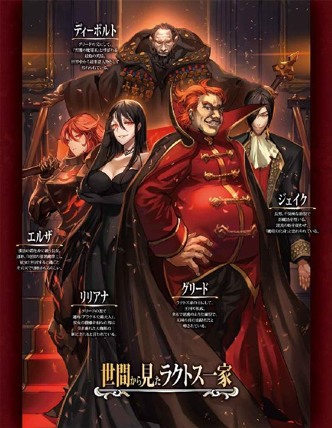
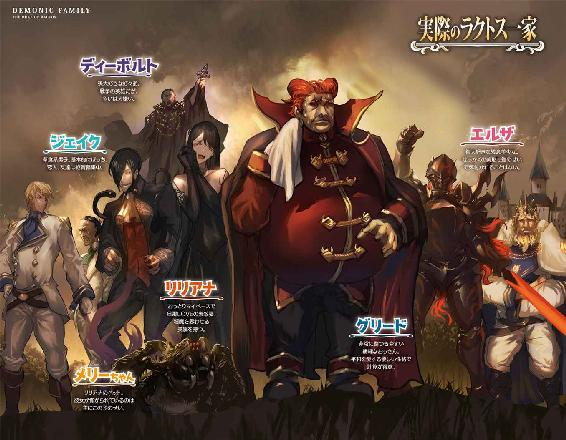
舞台は魔導や魔物が存在する世界。
そこに存在する大陸の中でも最も大きな大陸、《ヴラニスカ大陸》。
その大陸の中でも、最も大きな一国、《アゾリアス王国》。
それなりに歴史のある武力国家である故、国王は武力によって民の尊敬を集めている。
そんな国に、黒い噂の絶えぬ執政が存在した。
いや、その執政だけではない。その一族の人間全てに黒い噂や、恐ろしい噂がつきまとっていた。
《ラクトス公爵家》。
噂される人物は、主に四人。
アゾリアス王国の執政にして、ラクトス家の当主、グリード＝ラクトス。
高い背丈に肥えた体。蔑むような目つきに、挑発的な口元。
振る舞いは一挙手一投足が高圧的で、上に立つ者の風格が見て取れる。
深紅の頭髪を後ろに流し、瞳は闇のような漆黒。紡がれる声は地の底から響いてくるように低く、重い。
まるで魂の契約を持ちかける悪魔のような男。国の闇の部分を暗躍する悪徳執政ともっぱらの噂。
その妻、リリアナ＝ラクトス。
四十歳間近という年齢からは考えられないほどの美貌の持ち主である。
スタイルのいいメリハリのある体に張り付くように、腰まで伸ばされた漆黒の髪。それに同化するような漆黒のドレスをいつも身にまとい、タレ目気味の目は妖艶な真紅。
ゆっくりと紡がれる甘い声色は人間を惑わす淫魔のよう。
傍らには、彼女と同じ漆黒の体毛に紅い五つの瞳の大きな地蜘蛛を連れている。
ついた二つ名は、アラクネ公爵夫人。彼女の機嫌を損ねた者は、その大蜘蛛の餌にされると噂される。
長男、ジェイク＝ラクトス。
長身細身の青年。
薄く開かれたツリ目から覗く、血のような赤黒い瞳に、嘲るようにつり上がった口元。
その表情からは、常に悪巧みをしているかのような印象を受ける。
また、鴉のような不吉な黒髪は、片目を隠すように伸ばされ、その下にあるのは、常に共にいる赤眼の黒蛇と同じように、爬虫類の瞳ではないかと噂される。
わずか二十歳にして、優秀な成績で魔導を修めており、しかもその特性は希少な《影魔導》。
自身の影を実体化させ、周囲にまとわせる様は、漆黒の大蛇を従えるようであった。その姿から《魔蛇の化身》と恐れられている。
長女、エルザ＝ラクトス。
燃え盛る猛火のような紅い長髪が炎のような癖を作り、大きく開かれた瞼から覗く赤みがかった黒色の瞳。それはまるで、磨き抜かれた黒曜石の様な輝きを放つ。
女性でありながら若干十六歳にして、アゾリアス王国の騎士団直下、重装騎士隊の副隊長を務めている。
彼女は他の令嬢のように、ドレスや宝石で自分を着飾ることはない。身に纏うのは、重厚な漆黒のフルプレート鎧。そして腰には、熱を持ったかのように赤みがかった黒鉄の両手剣。
圧倒的な重量を持つソレを軽々と振り回す彼女の様は、《地獄の漆黒魔騎士》の二つ名そのもの。
彼女と相対した敵は魂ごとその刃で切断されるらしい。
このように彼ら、ラクトス一家は悪い噂、怖い噂が絶えない。しかし、それらの事実は一切確認されていない。
曰く、目撃者は消されている。
曰く、巧妙に隠蔽工作がされている。
曰く、国家機密を握っており、国も手出しができない。
彼らの黒い噂は絶えない。
──これは、そんな彼らの物語。
彼らの真意、心中はいかなるものか。彼らを取り巻く周囲はどんな影響を受けるのか。
その物語。
吾輩の名前はグリード＝ラクトス。
アゾリアス王国における公爵家の長。仕事は執政をしているのである。
まぁ、執政とは言っても、政治に大きく関わることは正直言って、あまりない。
主な仕事は、国の財政管理である。
ではなぜ、財政管理が主な仕事なのに執政等と名乗っているか。
なぜならば、我が国は、その、吾輩以外に財政の管理ができる者がおらぬのである。
いや、多少できる者はいるが、できない者が多すぎて、吾輩がバリバリ働かねばお金がなくなって国が滅ぶほどヤバイのである。......ヤバイらしいのである。
そのため、吾輩に執政という高い地位を与えて、この国に止めようという考えだ......と、大臣が言っていたのである。陛下も言っていたのである。
正直、そんな地位などなくとも仕事はちゃんとするのであるが。
吾輩、財政管理の書類仕事大好きだし。息子のように魔導も使えんし。娘のように剣術もできんし。戦争とか怖いし。
ちょっと走っただけで息切れしちゃうのである。
で、そんなバリバリ働く吾輩であるが......どうやら国民に嫌われてるっぽいのである。
やっぱりアレだろうか────吾輩の顔が怖いからであろうか？
確かに、夜中トイレに起きた時とか、暗がりの鏡に映った吾輩の顔に、自分でびっくりしたりするのである。
......あ、吾輩ちょっとブルー入ってきちゃったのである。
こんな時はアレである。吾輩の行きつけのお店、異国の食材とか料理とか出してくれる所。そこで美味しいもの食べるに限るのである。嫌なことは美味しいものを食べて忘れるに限るのである。
今日のお仕事はもう終わっちゃったし、今からだと夕食前の間食にちょうどいい時間であるし。
というわけで大臣殿、吾輩ちょっと城下町に行ってくるのである。
──城下町にお忍びの吾輩。一応、吾輩は執政であるし公爵でもあるから、それっぽく変装しつつ。
......それにしても、城下町はいつ来ても賑わっているのである。
これも陛下や大臣殿が尽力されておられるおかげか、民は皆笑顔で暮らし、深刻な貧富の差はないように感じるのである。
屋台もいっぱい出ているし、いい匂いもしている。......でも吾輩、実は屋台の物って食べたことないのである。
もちろん、公爵たる吾輩が下賤な云々、などという理由ではなく......店員さんが怖がるのである、吾輩のことを。
怖がられたら悲しいであろう？ 吾輩は悲しい。
だから、吾輩は店員に声をかけるのをためらってしまい、あの串に刺さったよく分からん何かの肉、あれ、食べたことないのである......いい匂いするのに。
そんなこんな考えつつ、吾輩が目当ての店に向かう途中、ふと大通りの隅にて、幼い女の子が泣いているのが目に入る。
近くに親御さんも居らぬようで、他の者も忙しい様子であるため、現状では吾輩のみが気づいている様子である。
あー......どうするべきであろう。吾輩ってば顔怖いから......。
迂闊に話しかけたら、余計泣かれちゃうかもしれないのである。
でも、吾輩こういうの放っておけないのである......よしっ。
「お嬢ちゃん、どうかしたのであるか？」
意を決して吾輩は、優しく声を掛けるよう意識して、目線を合わせるように腰を落として女の子に話しかける。
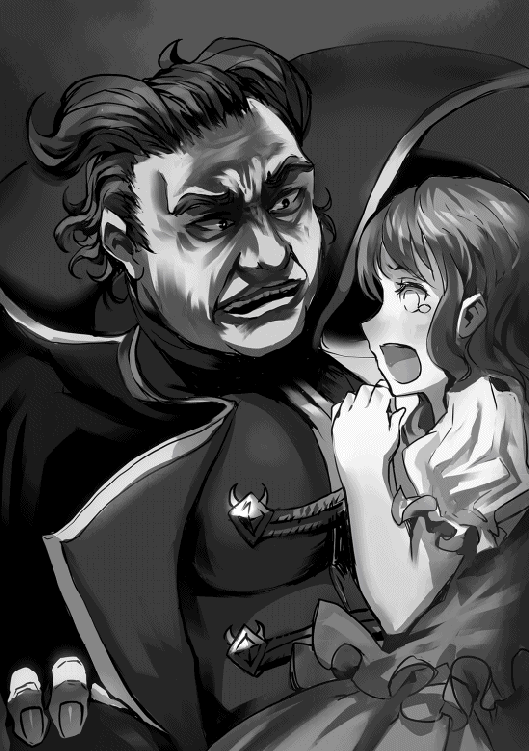
女の子と目が合う吾輩、そして沈黙。
あ、これダメなやつである。
「びえ〜〜〜ん!!」
うわわ、やっぱり余計泣いちゃったのである。分かってたけど、コレ結構心に来るのである。
吾輩があたふたしていると、そこへ金属同士のぶつかる、ガシャガシャという鎧を着た者が近づく音が聞こえてくる。
「王国衛兵だ！ そこのオマエ！ 何をしているッ!!」
うわわー、衛兵さんが来ちゃったのである。しかも吾輩が何かをしたような感じのことを大声で叫んで。
吾輩も泣きたくなってきた。
「なっ......!? 貴方は、グリード＝ラクトス執政......!?」
お、衛兵さん吾輩に気づいてくれた？
「執政殿が、何故城下町に......まさか噂の犯罪組織との接触を？」
あれ、なんか雲行き怪しいよー？
っていうか犯罪組織って何であるか？ 吾輩知らないよそんなの。
「......犯罪組織？ 一体何のことだか吾輩にはさっぱり理解できないのである」
「あくまで、白を切るつもりなのですか。王都でこんなにも噂が広がっているにもかかわらず」
いや、ホントに知らないのである。
大臣殿も暗部の者もそんなこと言ってなかったのである。
「人身売買組織『悪魔の贄』、窃盗集団『強欲な幽霊』、暗殺組織『血の一滴』......いずれも名前だけが広まっていて、その存在が掴めていない組織です」
なにそれ、怖い。ホントに王都にそんな組織が？
ウチの者にも気をつけるように言わないとである。
「──そして、それらの組織が未だに、構成員一人として捕縛されていないのは、大物貴族が裏で関わっている......黒幕であるからだと囁かれています」
貴族が犯罪組織の黒幕!?
ほ、本格的に怖くなってきたのである。邸宅で吾輩の帰りを待っている妻は無事であろうか。
「......その黒幕が貴方なのではないですか？ 執政殿」
え!? 吾輩!?
ないない！ 吾輩ではないのである！
吾輩はただ、ご飯食べようと城下町に下りて、泣いてる女の子がいたから大丈夫かと声をかけただけで......そうである！ 女の子、女の子に話を聞いてもらえればいいのである！
そうすれば誤解もとけて......あれ、女の子は何処へ行ったのであるか？ さっきまでそこにいたのにいつの間にかいなくなっているのである！
「詳しい話を聞く必要がありそうなので、付いてきてもらいます！」
アカン、完全にこの衛兵さんお仕事モードなのである！ 冤罪なのに！ このままでは吾輩、拘置所で美味しくないご飯を食べさせられるのである!!
「ちょ......ッ！ ちょっと！ 待ちなさいそこの衛兵っ!!」
と、そんな超ピンチな吾輩のもとへ息を切らせて走ってくる大臣殿。
衛兵さんを無理やり吾輩から引き剥がすように距離を取り、何やら会話を始めるのである。
なんか吾輩、蚊帳の外じゃない？ でもまぁ、大臣殿のおかげでどうやら吾輩の無実は証明される様子である......されるよね？
あ、大臣殿が話し終えてこっち来たのである。
「執政殿、話はつけてきましたので、もう大丈夫ですよ」
よかったー......さすが大臣殿、城下町に潜む暗部の人に情報を聞いて飛んできたらしい。
吾輩、冤罪で捕まっちゃうとこだったのである。
......それにしても、あの衛兵謝らないで行っちゃったな。吾輩、執政よ？ 公爵よ？
なんか悲しくなってきた。
「大臣殿、吾輩ちょっと明日休むかも......」
私は、このアゾリアス王国にて、大臣職をしている者である。
私の仕えるアゾリアス王国は、国王と、その下につく騎士、兵士達の戦力──武力によって他国を牽制し、時には戦争に勝利し、国民の支持を得てきた武力国家だ。
......そのためか、我が国には、致命的な欠点がある。
政治、財政管理が壊滅的に下手くそなのだ。
それを補うのが私こと大臣と、執政であるグリード＝ラクトス公爵である。
私が政治、執政殿が財政と、それぞれが得意な分野でこの国を支えている。
政治に関しては、私が重要な立場にいるものの、陛下も多少は覚えがあるため、それほどひどくはないのだが、財政はそうもいかない。
正直言って、執政殿一人でこの国の財政が回っていると言っても過言ではない。マジで過言ではないのだ。
執政殿は、今も気の狂いそうな書類の山をありえない速度で処理していく。機嫌良さそうに鼻歌を口ずさみながら。あの顔で軽快な鼻歌とか、ちょっとしたホラーだ。
......上機嫌で書類をさばく執政殿、彼には常に黒い噂がつきまとう。まるで、悪魔のような男だ、悪徳執政だと。
それは彼の、一見すると完全に悪党な顔の作りが主な原因なのだ。
国の上層部、私とか陛下なんかは、それらの噂が事実無根であることが分かっているからいいのだが、彼のことを詳しく知らない国民や、下位の貴族なんかは、噂を真実として捉えている。
それだけならばまだいい。いや、良くはないが、まぁ。まだいい。
一番の問題は彼が、執政殿が繊細すぎることにある。
先月なんか、たまたま肩がぶつかってしまった城下町の女性に号泣しながら命乞いをされ、非常に傷つき、丸二日仕事に手がつかなかった。
あの時は地獄だった......。
「大臣殿」
と、物思いにふけっている私に執政殿が声をかける。
さっきまで書類の山と格闘していたと思ったら、もう全て片付いたらしい。噂とは違う意味で悪魔のような男だ。
「吾輩、城下町にご飯食べに行ってくるのである」
「......分かりました。くれぐれも気をつけておねがいしますよ、執政殿」
体もそうだが、なにより不用意に怖がられないように、という意味で私がそう告げると、執政殿は軽く頷き退室して行った。
──それから私が多少不安を抱きつつも、残っている自分の仕事をこなしていると、暗部からある報告が上がってきた。
それもかなり切羽詰っている様子で。......嫌な予感がする。
「だ、大臣殿！ 執政殿が......ッ衛兵に!!」
私は、老体に鞭打ち、自分の限界を超えて駆け出した。
「──詳しい話を聞く必要がありそうなので、付いてきてもらいますよ、執政殿」
城下を駆ける、一陣の風となった私に、衛兵の言葉が耳に入る。
「ちょ......ッ！ ちょっと！ 待ちなさいそこの衛兵っ!!」
急いで衛兵と執政の間に割って入った私は、衛兵の説得にかかる。
犯罪組織？ 何言ってんだお前。よく分からん噂でうちを財政破綻させる気か。
いいから、執政殿は私がなんとかするから。人身売買？ 暗部からそんな報告上がってねーよ！
つーか何だそのやたら恐ろしい名前の組織は、本当にそんな組織あったら王都の治安はもっと悪いっつーの！ だからそんな空想上の組織なんか追っかけてないで、その、あれだ、見回りでも行ってこい!!
──執政殿を衛兵から解放すると、早速執政殿のフォローにあたる私。
彼の様子を探るように視線を向けると、あ、まずい......執政殿かなりショック受けてる。
「大臣殿、吾輩ちょっと明日休むかも......」
その言葉を聞いて、私は気を失った。
わたくし、リリアナ＝ラクトスは、この国の執政をしている、グリード＝ラクトス様の妻でございます。
わたくしがラクトス家に嫁いだのは十六の時。
貴族にしては珍しい、恋愛結婚でしたわ。お互いに一目惚れでした。
もちろん、今でも旦那様のことは愛しております。誠実で、真面目な方ですし、私が作った手料理を美味しい美味しいと、食べる姿は非常に愛らしく感じます。
そんな素敵な旦那様ですが、どうやら国民の多くの方に怖がられているみたいなのです。「完全に悪人の顔だ」等と言われておりましたわ。どういうことかしら？ あんなに格好良いのに。
そして、斯く言うわたくしも、同じように皆様に怖がられているようなのです。
悪魔の契約で美貌を保っているとか、機嫌を損ねたら大蜘蛛の餌にされるとか言われて。
美貌等と言われるのは、まんざらでもありませんが、大蜘蛛の餌って......メリーちゃんは人間を食べたりなんかしませんのに。
あ、メリーちゃんというのは、わたくしの小さい頃からのお友達。ふさふさの黒毛に真っ赤なおめめの可愛い大蜘蛛さんのことですわ。
クリムゾンアイという種類のメリーちゃんは、人と同じくらいの寿命を持っている、体長六十センチくらいの蜘蛛さんです。
毒は無くて、害虫を捕食する立派な益虫さんですのよ。まぁ雑食らしいので、私のお料理なんかも食べるのですけどね。
「ねー、メリーちゃん」
「キシャー」
言葉は話せませんけど、ある程度意思疎通できるくらい賢い子ですの。
けど、やっぱり虫っていうのがダメなのかしらね、特に女性の方。
だいぶ前に、なんだったかしらー。えーっと、何かの......パーティーだったかしら？
よく覚えてないけれど、その時だって、楽しくお話していたお相手が偶然通りかかったパーティーの料理の余り物を食べてるメリーちゃんを見て気絶してしまわれましたし。
──まぁ、確かに見慣れない方はいきなり大きな蜘蛛さんが現れたらビックリしちゃうかしら。
あの時は悪いことしちゃったわねー。確か......そうそう、オリヴィアさん。赤いドレスの素敵な方。
そのあと偶然お会いした時も、なにやら怯えていらっしゃったみたいだし......。
そういえばあの方、鮮やかな赤いドレスをいつも着てるわねぇ。あの方を見かけると、トマト料理が作りたくなるのよねー。
なんでかしら？ 赤いからかしら？
──あら？ いま屋敷の前の道を凄まじい速さで大臣様が走り抜けたわ。ご高齢なのに、いつもお元気ねー。
......今日はお魚でムニエルでも作ろうかしら。
大臣様を見かけるとお魚料理を作りたくなるのよねー。なんでかしら？ お魚に似てるからかしら？
そうと決まれば、さっそく調理にとりかからなきゃ。
あれは忘れもしない、５年前の建国記念日。王城で行われた、上流貴族による立食パーティー。
私、オリヴィア＝コールフィード公爵夫人が、あの女、リリアナ＝ラクトスに恐怖を植えつけられた日を、私は忘れない。
いや忘れることができない。
その頃から《アラクネ公爵夫人》等と呼ばれ、恐れられていた彼女。
しかし、私は彼女を恐ろしいなどと思っていなかった。
彼女に関して私が抱いていた感情は嫉妬......妬みだった。
三十を過ぎてもなお、シワの一つもできない整った顔立ち、弛むことのないメリハリのある体、そこから醸し出される妖艶な雰囲気。
彼女の、老いても朽ちることすら想像できない美貌が私は妬ましかった。だから私は、彼女を虐めてやろうと画策したのだ。多くの貴族が集う場で辱めてやろうと思ったのだ。
あんなことになるとは考えずに。
──バルコニーに一人佇むリリアナ。
いつも彼女の傍らにいる大蜘蛛は会場にはいない。当たり前だ。このようなパーティーに蜘蛛を連れてくるなどどう考えても異常である。
まぁ、仮にいたとしても私は彼女のもとへ行くのを躊躇わなかっただろう。
ほかの連中はあの蜘蛛が恐ろしいらしいが、私はそんなに柔ではない。
ましてやこの女、今では公爵夫人となってはいるが、元は伯爵家の娘。生まれついての公爵家の人間である私の方が格上なのだ。
なにを恐れる必要があるのだろうか。
「あら、アラクネ公爵夫人。相変わらず黒いドレスを着てますの？ ......そういえば黒い洋服は体型を隠すのに都合がいいと聞きましたわ。もしかしてスタイルに自信がないのかしら？」
できるだけ上から、敵意を隠さず、蔑むように。しかし想像通り、これで怯むような女ではなかった。
「えぇ。お料理の味見をし過ぎたせいかしら？ 少し太ってしまいましたわ」
少し太ったなどと、微塵もそんなこと思っていないくせに。
だが、こちらも攻撃の手、いや、口を緩めない。
「まぁ、公爵夫人ともあろう方が、お料理をなさるんですの？ 随分と庶民的ですのね」
さて、どう返してくる？
「はい。グリード様も、メリーちゃんもわたくしのお料理を美味しそうに食べてくれますのよ」
微笑を浮かべながらそう答えるリリアナ。
その口から紡がれる、あの悪魔のような男──グリード＝ラクトスの名前に少し怯んでしまうが......メリーちゃん？
「......あなたの娘はエルザという名ではなくって？ 息子はジェイクでしたわよね？ そのメリーというのはどなたのことかしら？」
「あぁ、メリーちゃんはクリムゾンアイ......わたくしのお友達の大蜘蛛さんの名前ですわ」
──大蜘蛛がリリアナの料理を食べる？ あの化物が？
考えてしまった。考えなければよかった。
私は、彼女の黒い噂の一つを思い出す。
《彼女の機嫌を損ねた者は、大蜘蛛の餌にされる》
「......キシャー」
「あら？」
人ならざる声がバルコニーの外側から聞こえる。
声のする方へ視線を向けるリリアナ、私もその視線の先を見る。
そこには、赤く輝く五つの目玉があった。
「ひっ......!?」
それは、間違いなくリリアナがいつも従えている大蜘蛛だった。
加えて言うと、その大蜘蛛は食事中の様だった。......なにかの、肉塊のようなものを。
口元を血に濡らしながら肉塊を貪るおぞましい存在に、私は思わず小さな悲鳴をあげてしまった。
あんなことを考えた所に現れた大蜘蛛に、恐怖を覚えずにはいられなかった。
いや、本当に怖かったのは大蜘蛛ではない。
「あらあら、駄目よメリーちゃん。こんなところでお食事だなんて、口元も真っ赤にしちゃって......はしたないわよぉ」
この女、リリアナ＝ラクトスは、蜘蛛に料理を作っていると言った。彼女の機嫌を損ねた者は、蜘蛛の餌にされる。
つまり、彼女は、人間を......！
「キシャー」
「あらぁ、メリーちゃん、まだ足りないの？......仕方ないわねぇ」
大蜘蛛に優しく声をかけるリリアナはそこで言葉を区切るとゆっくりと首を回し真紅の瞳を私に向ける。
私の心臓が激しく脈動する。
「そういえば、オリヴィアさん。あなたのドレス、素敵な赤色ね。トマトみたいで、美味しそう」
この女は、私を、料理、蜘蛛に......！
そこで、私は気を失ってしまった。
──目を覚ましたのは、コールフィード家の寝室だった。
気絶した私を従者が家まで運んだらしい。
自分が生きていることを実感すると、とたんに抑えていた恐怖が溢れ出てきた。しばらく体の震えが止まらなかった。
もう、あの女、リリアナ＝ラクトスとは関わりたくない。今回は見逃されたようだが、次はきっと、蜘蛛の餌──彼女の料理。
......今ではだいぶ立ち直ったが、彼女に会うたびに体が恐怖で動かなくなる。
会うたびに言われるのだ。傍らに大蜘蛛を携えて。
「やっぱり美味しそうな赤色」
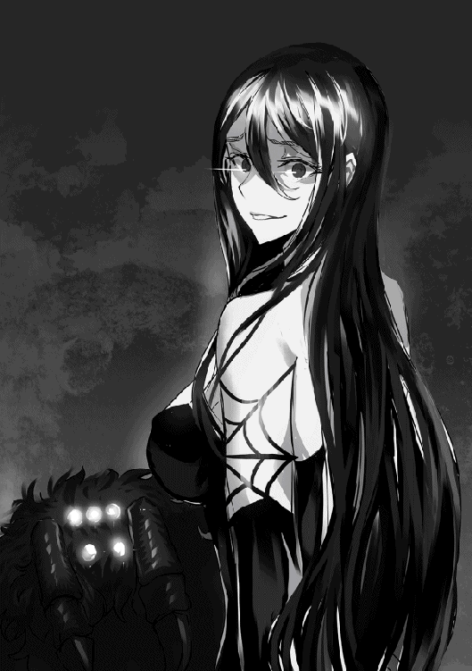
ボクの名前はジェイク、ジェイク＝ラクトス。公爵家の長男だ。
父はグリード＝ラクトス、この国で執政をしている。といっても、財政管理がほとんどで、政治はあんまりやってないらしい。
ちょっと気の弱い繊細な大男だ。
だというのに、この国の国民は皆、父のことを恐れているみたい。多分、顔が怖いからだと思う。
......正直ボクも怖いと思う。
夜中トイレに起きたらばったり暗がりで鉢合わせして漏らしそうになったことがある。
そんなこと言ったらショックで引きこもっちゃうから絶対言わないけどね。
──まぁ、怖がられているというのは何も父に限った話ではないんだけど。
母も、妹も、そしてボクも何故か怖がられている。
母は、やっぱりメリーちゃんが怖がられる原因だろう。
妹は......まぁ、あんなデッカイ両手剣携えて、フルプレート鎧をガシャガシャ言わせてたらそりゃあ、ね？
そしてボクは......なんだろう？ あー、やっぱり魔導かな？
──そう、ボクは珍しい魔導特性を持って生まれた。
それは《影魔導》と呼ばれるその名のとおり、影を実体化させて操る魔導特性。高名な魔導師である、祖父と同じ魔導特性だ。
祖父、ディーボルト＝ラクトスは現役時代、戦乱の最中その魔導特性をもってして、アゾリアス王国を幾度も勝利へと導いてきた戦争の英雄。
敬われ、そして畏怖される存在、その二つ名は《宵闇の魔導王》という。
そんな祖父と同じ特性を持って生まれたボクだからこそ同じように、しかし戦功の無い分余計に恐怖されているのだと思う。
宵闇の魔導王なんて、どう考えても悪者っぽい二つ名だし。
まぁボクも人のこと言えないけど。
《魔蛇の化身》
それが、ボクの二つ名。影を操る様が、大蛇を従えているようだ、って。
やだよー！ ボクはもっとこう、《雷光》とか《旋風》とかそういう英雄っぽい二つ名がよかったよ！
何さ、魔蛇って、化身って。ボクが魔蛇ってこと？
それ完全に魔物だよね!?
まぁ、怖がられる理由はそれだけじゃないんだろうけど。
「やっぱり、顔だよなぁ......」
城下町、中央広場の泉には、ボクの悪者のような顔が映っている。常ににやけているような目元、嘲るような口元。
週に一度は、「貴様、何を企んでいる......？」とか言われるんだよ？
何も企んでないよ！
友達欲しいなーとか、恋人欲しいなーとかしか考えてないよ！
魔導を修めたけど、ボク長男だから、きっと将来は父の跡を継いで財政管理だし。魔導で世界を支配とか企んでませんよー！
うぅ、顔自体は悪くないはずなのに、なんでこんな......。
「シャーッ......」
落ち込んでいるボクの洋服の胸ポケットから顔を覗かせる、赤眼の黒蛇。
「......なぐさめてくれるの？ ナコ」
彼女はナコ。
我が家の黒い噂とかの影響で、幼少期に友達がいなかったボクの唯一の友達。いや、友達は少しだけど出来たから、大親友かな？
魔導を修めてからは、使い魔としても働いてくれる、頼もしいヤツ。
「そうだね。落ち込んでても仕方ない。こういう時は美味しいものを食べるのが一番って、父さんが言っていたし......ちょっと屋台でも見てまわろうか」
「シャーッ！」
大通りから脇道に入り、人通りの少ない薄暗い小路を歩くボク。
......だって大通りだと、みんな警戒した視線を向けてくるんだもの。
あぁ、いけない。またネガティブになってきた。
──とその時、路地裏から、かすかに聞こえる女性の悲鳴。
覗いてみると......大変だ、女性が二人の大男に乱暴されそうになってる！
うわ、筋肉ムキムキ、こわいなぁ。ボクかなり貧弱な体つきだから、ああいう人ちょっと苦手なんだよね......。
いや、そんな場合じゃないね。ボクは魔導師。自信を持たなきゃ......そうだ、こういう時は強気な発言で自分を高ぶらせるのがいいって祖父が言ってた。
よ、よーし、やるぞー！
──ボクが彼らの凶行を止めるために割って入ると、案の定暴漢達は声を荒げてボクを威嚇してきた。
「テメェ！ 一体なんなんだぁ!?」
その声に少し怯みそうになってしまうけれど、ココで引く訳にはいかない。ここで逃げたら襲われそうになっている女性がどんなひどい目にあってしまうことか。
「ちょ、ちょっとまて。コイツまさか......魔蛇の化身......!?」
ボクが決意を新たに強気の態度を保っていると、どうやら暴漢の一人がボクの素性に気がついた様子で、若干怯んだ。
......その二つ名はちょっとだけ不本意なので控えて欲しかったけれどね。
「へ、へっ！ なに、魔蛇っつったら影魔導だろ？ ここは日の当たらない路地裏。ご自慢の影魔導も使えないだろうぜ！」
よく勘違いされがちだけど、ボクの影魔導はむしろ日の当たらないところのほうが有利な魔導特性なんだよね、この暴漢も誤解しているようだし。
駄目だよもっとちゃんと勉強しないと。日の当たっていない所は、イコールで影なんだから。
......とはいっても、僕自身魔導を修めてはいるものの、次期公爵家当主となる立場だから、直接攻撃するような魔導は習得するに至っていない。
怪我を負わせず捕縛する......どうするのが一番いいんだろう？
まぁ、適当でいいか。ボクは特に何も考えず、適当にそこらへんの影から暴漢を縛るために、縄状に影を持ち上げる。
って、あれ？ まだ女性が逃げていない。
困るなぁ、人質とかにされたらさすがにちょっとボク一人じゃ難しくなってくるかも。
「お嬢さん。早く逃げたほうがいいと思うよ？ こんなに大きな影の中、巻き込んじゃったら大変だからねぇ......ここは、大蛇の腹の中だ」
渾身の自虐ネタを交えて、女性に不安を抱かせないように早く逃げるよう伝える。
まぁ、逃げさせることには成功したから良いんだけど、なんか暴漢よりもボクから逃げるような感じだった。ああいうの、結構傷つくなぁ。
とにかく。女性も逃げたところで、ボクは持ち上げた影を指揮するように両手を振りながら影を操り、暴漢を縛っていった。
......彼らを縛るの、少しキツめにしたけど問題ないよね？ いや、べつに憂さ晴らしとか、八つ当たりってわけじゃないよ。うん、本当に。
さて、この暴漢たちを衛兵さんに突き出さないといけない。
ボクは上位貴族が所持することを推奨されている、衛兵直通の《通信魔導機》を取り出し衛兵に連絡をつける。
そして、何故か緊張した様子の衛兵との通信を終えたボクがこの場を立ち去ろうとした時、不意に声をかけられた。
「おい、ジェイク＝ラクトス！」
振り向くと、そこにはどういう訳か、この国の第一王子がいた。名前は、アルト＝アゾリアス。
彼は正式に次期国王と定められた存在。
......いや、なんで第一王子がこんなとこにいるのさ。護衛もつけずに、あぶないなぁ。
「その男たち、どうするつもりだ？」
そんなボクの心配など露知らず、王子はボクに暴漢達の処遇を尋ねてくる。
いや、どうって、普通に衛兵に突き出しますがな。
「......貴様、一体何を企んでいる？」
ははっ、今日も言われましたわ。何も誤解を受けるような行動は取らなかったはずなんだけど......。
あ、なんか大臣さんがすごい速度で大通りを抜けてった。元気だな、あの人。
ボクは多少ショックを受けつつも、そんなことを考えながら、もうめんどくさくなったので適当に王子に一礼し、これ以上何か変な誤解をされないように足早に立ち去ることにした。
なんか疲れたから、今日は早めに家に帰ろう。
俺、アゾリアス王国第一王子、アルト＝アゾリアスは警戒している。
誰に対してか？ それはもちろん、あの悪名高き「ラクトス家」である。
尊大な態度で、父である国王と言葉を交わすあの男、グリード＝ラクトスは絶対に我が国に対しなにか仕掛けるつもりでいる。
常に誰に対しても蔑むような表情の男。
その表情は、あろうことか父──国王陛下に対してまでも崩すことはない。
そんな奴を疑うなという方が無理な話だ。警戒して然るべきだ。
......だが、今俺が一番警戒すべきなのは、奴、ジェイク＝ラクトスであろう。
あいつはいつも人通りの少ない路地裏で、何やら謀をしているようだ。
証拠は掴めていないが、あの表情、あれがまっとうな考えをしている人間のものとは思えない。きっとなにか、行動を起こす時期を、機会を探っているのだ。まるで、茂みに潜む毒蛇のように。
──今日も秘密裏に、やつの後をつける。今日こそ尻尾を掴んでやる。貴様らが、国に害をなす決定的な証拠を。
案の定、小路に入るジェイク。またいつものように、何かしらの悪事を働こうとしているに違いない。
気づかれないように、警戒しながら俺はジェイクの後を追う......しかし、俺はそこでジェイクの姿を見失ってしまった。
それほど目を離していないにもかかわらず。
くそっ！ どこへ行った!? まさか、俺の尾行に気づいて、影魔導で......？
あたりの気配を探っていると、路地裏の一つから男の怒号が聞こえてくる。
何事かと気配を絶ちながら、様子を窺うと、そこには不敵に口元を歪めて、大男二人と対立するジェイクの姿があった。
「テメェ！ 一体なんなんだぁ!?」
「いやぁ......困るんだよねぇ。ここら辺でそういうことされちゃうとさ......」
ジェイクを大声で怒鳴りつける二人組の大男。
路地の奥には女性が一人、若干衣服が乱れている。
まさか、乱暴されそうな女性を助けようとしているのか？ ジェイクが？
「あぁ!? どういう意味だよ？」
「だからさ、そういうことは、別なところでやれって言ってんの、ボクは......」
いや、どうやらジェイクは、この付近で問題を起こされるのを危惧しているようだ。
「おい！ こっちは二人だぜ。そっちは一人。それもお前みたいなヒョロいのが......」
「ちょ、ちょっとまて。コイツまさか......魔蛇の化身......!?」
大男たちがジェイクの正体に気づいたようで、若干恐怖の色が見える。
それはそうだ《宵闇の魔導王》の孫、数少ない、畏怖の対象《影魔導》の特性持ち。筋力だけの男が敵う相手ではない。
「へ、へっ！ なに、魔蛇っつったら影魔導だろ？ ここは日の当たらない路地裏。ご自慢の影魔導も使えないだろうぜ！」
強がるように、得意げにそう息巻く大男。
違う、違うのだ、影魔導は......。
「ボクの祖父さ......《宵闇の魔導王》って言われてたんだ。なんでか分かる？」
そう、誰もが知る影魔導の使い手、ディーボルト＝ラクトスは......。
「日の沈んでいる時間......夜は、まさに無敵。魔導の王にふさわしい最強っぷりだったんだよ......」
ジェイクが意味深に間を開けて言葉を紡ぐ。暴漢達の緊張が、対面していない俺にまで伝わるようだった。
「なぜなら、夜っていうのは、それ自体が大きな大きな、『影』だから......ところで、薄暗いここは、ここ自体が大きな影になっていると思わない？」
そう告げると、暗がりの、路地裏のいたるところから、まるで漆黒の大蛇のように、無数の影が実体をもってせり上がる。
「ひ、ひぃぃっ!?」
さっきまでの威勢はどこへやら、大男は情けなく尻餅をつく、恐怖で身動きがとれないようだ。
「お嬢さん。早く逃げたほうがいいと思うよ？ こんなに大きな影の中、巻き込んじゃったら大変だからねぇ......ここは、大蛇の腹の中だ」
冗談めかして、そう言うと、まるで蛇のようにキシシと笑い声をあげるジェイク。
俺の周りにいる強者、騎士団長、暗部の部隊長、そして父である国王。彼らの、圧倒的な力の前に感じた恐ろしさとはまた違った恐ろしさが俺の全身を駆け巡る。
──体中に蛇が腹を這わせているような、体温の下がる恐怖。
あまりの恐怖からか、声を上げられない女性は、必死にジェイクから逃げるように、足を縺れさせながら路地裏から離れていく。
決着は一瞬だった。無数の影の大蛇が大男を、身動きできないようにガッチリと拘束する。
口も塞がれ、悲鳴すら上げられないまま無力化された大男二人。
ジェイクは、そんな彼らを捨て置き、通信魔導機を懐から取り出し、何処かへ連絡をつけている。
「......そう、男二人。新月亭の向かい。うん、ボクじゃそこまで運べないからね」
どうやら、大男達をどうにかする算段をつけたらしい。通信内容はよく聞き取れないが、なにやら不穏な会話をしているように感じる。
こいつはこの大男達をどうするつもりなのだろう......切り込むなら、ここか？
ゆっくりと路地裏から小路へと歩みを進めるジェイク。
ヤツの尻尾をつかむチャンスかもしれない。俺はジェイクに声をかける。
「おい、ジェイク＝ラクトス......！ その男たち、どうするつもりだ？」
足は震えていなかっただろうか？
ゆっくりとこちらに顔を向けるジェイクに、冷や汗が流れる。
「おやぁ？ アルト第一王子。あぶないですよぉ。こんな所に護衛もなしで......」
「答えろ！ ジェイク!!」
恐怖を大声でかき消す。
「......もちろん、衛兵に引き渡しますよ。ちゃんと、普通に、ね？」
明らかに嘘だ。こいつ暴漢を傷つけることなく捕縛した。
影魔導を行使できる人間が、それが可能だからといって、犯罪者に対して一切傷つけない必要などあるわけがない。むしろ、逃げられないように多少は傷めつけるべきだ。そのほうが手っ取り早く、確実だ。
なのに、コイツはそれをしなかった。
つまりは、この暴漢たちで何かをするために、何かに使うために無傷でとらえたと考えるべきだろう。
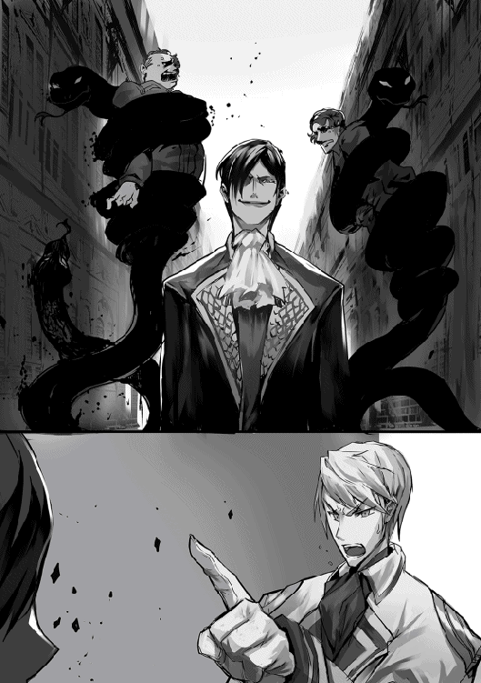
それが何かは定かではないが、ジェイクが考える事だ、真っ当な何かであるはずはない。
「......貴様、一体何を企んでいる？」
あまりにも不明瞭な、奴の計画に思わず俺はそう尋ねる。
しかしジェイクは、問に答えず無言で一礼すると、こちらを振り向くことなく小路の奥へと歩みを進めていった。
「貴様の企み、必ず暴いてみせる。我が国を好きにはさせん......！」
今日改めて確信した。アイツは間違いなく王国に害をなす《悪》である。
最後の無言の一礼、企みを否定したわけではない、そして肯定したわけでもないそれは、おそらく俺への、王国への挑戦状。
我らの悪事、暴けるものなら暴いてみせろ、できるものならば。......そう言っているかのようだった。
俺は王子として、次期国王として必ずや奴らの悪事を白日のもとに晒してみせる。
遠い道のりであろうとも、必ずだ。
自分は、エルザ＝ラクトス！ 公爵家の長女であります！ 父、グリード＝ラクトスは執政をしているのであります！
そして自分は今、これから着替えようとしているのであります！
姿鏡に映る自分は、母上を凛々しくしたような顔立ち、父上の様な真紅の髪をしていて、自分で言うのもなんでありますが、ものすごく『令嬢している』のであります。
まぁ、ドレスを身にまとっていればでありますが。
自分の今の服装は所謂パンツルック。もちろん普通の貴族令嬢が着るような服ではないのであります。
別に自分は、男装の令嬢というわけでも、ドレスが嫌いと言うわけでもないのであります。......まぁ好んで着るほどドレスが好きというわけでもないのでありますが。
もちろんこの格好には、きちんと理由があるのであります。
それは、自分の仕事に関係しているのであります。
──そう、鎧を着るためであります！
というのも自分、十六歳という若輩者ではありますが、陛下や騎士団長に目をかけていただき、鍛錬に努めた結果、王国騎士団・重装騎士隊の副隊長の地位を賜っているのであります！
そのおかげで、毎日フルプレートの重装鎧を着ていても文句を言われないのであります！
......自分はよく、変わっていると母上や兄上に言われるのでありますが......。
騎士の装備、主に鎧が大好きなのであります!!
ぶっちゃけ騎士団に入ったのも鎧を着るためであります！
同年代のほかの令嬢なんかは、やれドレスだの、宝石だの、そういったものを好むようでありますが、そんな薄っぺらい布きれと、脆い石ころのなにがいいのか、自分には全く分からないのであります!!
いま身に纏っている、この分厚い黒鉄に比べたら、ドレスなんぞ綺麗なだけで防御力は皆無に等しいであります！
魔導石ならまだしも、ただキラキラするだけの宝石なんぞ、同じくこの黒鉄製の多重構造ガントレットで小突いたら、一撃で粉々であります！
あ、勘違いしてもらっては困るのであります。自分の鎧がただの、強固で堅牢なだけのものだと思われるのは心外であります！
自分の鎧は美しさも、他の追随を許さぬほどに洗練されているのであります！
あらゆる部位で刃を受け流せるように設計された、流線形。それに施された紅金の、炎をイメージした装飾。表面の耐熱処理は半光沢。中に着込むインナープレートは、耐寒処理された軟銀鉄と、見えないオシャレも完璧なのであります！
......あ、気づいた？ 気づいちゃったでありますか？
そう、何を隠そうこの鎧、フルオーダーメイドで作ってもらったのであります！
自分専用の、ワンオフであります！ 自分だけのオンリーワンであります!!
おっと、自分としたことが、鎧ばかりで肝心な説明を忘れていたのであります。
それはもちろん、この両手剣!! もちろんこれも黒鉄製！ フルオーダーメイド！
ふふ、しかもただの黒鉄じゃないのであります。
錬金特性を持った上級魔導師の手によって、なんと炎の魔導石と地の魔導石が錬り込まれているのであります!!
その結果なんと、刃が赤熱して高速振動するのであります!! 斬れぬものなど、何もないのであります!!
さて、あらかた自分の素敵な鎧と剣の説明を終えたところで、装着も全て完了であります！
姿鏡で着こなしをチェックする自分。
ふふーん、今日もバッチリ決まっているのであります。
さぁ、今日も自分の鎧を見せびらかしに......ではなくて、騎士隊のお仕事に赴くのであります！
──もうすぐ日が沈む時間、自分たち重装騎士隊の面々は、王都の門をくぐり、人員が欠けることなく、無事帰還することに成功したのであります。
ふふ......自分、今日もまた騎士隊の仕事で周辺の魔物討伐に出て、この鎧と剣を存分に振るってきたのであります。
そのせいか、ちょっとテンションが昂っているのであります。
あぁ、あの魔物をいともたやすく叩き斬る感覚。獣の牙を鎧が完璧に防御した時の心地よい衝撃。もう......もうっ......！
『ウオォォォッ!!』
「おい、エルザ！ ここは城壁内だぞ！」
......興奮して、雄叫びをあげてしまい、隊長殿に怒られてしまったのであります。しょんぼりであります。
あ、新人の騎士の人たちがおびえているのであります。ごめんねであります。
そう、自分はこの新人さんたちの反応から分かるように、皆からなぜか怖がられているのであります。
確か、地獄の......暗闇......？ 黒......？ えーっと、ナントカ騎士とか言う二つ名のせいだと思うのであります。
ちなみに父上と母上、兄上まで自分同様に、なぜか怖がられているのであります。理由は分からないのであります！
あ、噂をすれば、父上であります。大通りのど真ん中で何を......ん？
なんで大臣殿がこんなところで寝ているでありますか？ 風邪をひくからちゃんとお家で寝たほうがいいのであります！
オレは、王国騎士団・重装騎士隊で隊長をやっている。
重装騎士隊はその名の通り、全身を覆うフルプレートメイルを装着し、戦槌や両手斧、両手剣などの破壊力のある武器を振るう騎士の部隊だ。
全員が顔を隠しているため、その威圧感は凄まじいものがある。軽装騎士隊のような華はないが、戦いになればオレ達ほど頼もしい部隊はないだろう。
......しかも、副隊長はあの《地獄の漆黒魔騎士》だ。
みなさんご存じ、あの《ラクトス公爵家》の長女。エルザ＝ラクトスだ。
まぁ《ラクトスの黒い噂》については、あらかじめ騎士団長から事実無根だと教えられていたから、悪い奴じゃねぇってのは分かってる。
しかし、エルザに関してはあの噂、間違ってないんじゃないかと思う。もちろん恐ろしい性格についてじゃない。何度か話してみた結果、ただのバカだということが分かったから。
俺が言ってるのは恐ろしい強さについての話だ。
──はじめから、ツッコミ所満載だった。
鎧を身に纏っていないエルザは、初見ではいかにも貴族令嬢らしい、強気な印象を受けるも整った顔立ちで、ドレスではなく兵士用の、ちょっと質の良いようなパンツルックだった。
まっとうな令嬢とは言いがたいが、それでも男装の令嬢と言われれば納得といった様な姿だった。
騎士学校を主席で卒業との話だったが、本当かよと疑うような、少なくとも《地獄の漆黒魔騎士》の二つ名には似合わないように感じた。
だがその印象も、鎧を纏ったエルザを見て、一変せざるをえなかった。
全身黒鉄のフルプレート。紅金の、炎をイメージした装飾。携えている両手剣も黒鉄。しかも、魔導石を錬り込んである。
もう見たまんまじゃねぇか。どう見ても地獄の騎士だよ。漆黒魔騎士だよ。
っていうかフルフェイスからはみ出してるそれはなんだよ。は？ 地毛？ 頭髪？ まじかよ、地獄の業火かと思ったわ。
......正直、意味が分からんかった。
なんで十六の女があんなもの着て動けるんだよ。オレでも無理だよあんなん。
黒鉄は、鉄と名がついているものの、その硬度・重量といったら鉄とは比較にならないほど高い。ぶっちゃけ鎧全体に使う金属じゃない。動けなくなるから。
重要な、胸当てとか、関節部とかにちょっと使うくらいが普通だ。それも、薄く延ばした奴をだ。
お前のそれメッキじゃねぇよな？ 厚さ何センチあるんだよ。馬鹿じゃねーの？
さらに紅金、まぁこれで装飾するのは珍しくはない。純金より安価だし、硬度も高い。そのかわり、結構な重量があるため、過度に紅金を使うのは推奨されない。特に鎧には......。
なのに、なぜ全身に装飾を施した。背面まできっちり装飾されてんじゃねーか。褒めてねーよ、照れんな。馬鹿じゃねーの？
そのうえ黒鉄の両手剣？ 黒鉄のフルプレート着て？ 黒鉄の両手剣振るの？
ほんとに、馬鹿じゃねーの？
あ？ インナープレートに軟銀鉄？ あーうっせ、うっせ。もう黙れ。
と、まぁ。通常なら考えられない重量の装備を身に着けているにもかかわらず、あいつは......エルザはそれで戦えている。動くことすらままならないはずなのに、洗練された剣術を使えている。
現在、騎士団の仕事で、首都周辺の魔物の討伐に出ているのだが、軽装騎士隊と同じような速度で切り込み、魔物を次々と一刀両断している。
......ちょっとまて、お前今、鉱石亀の甲羅を真っ二つにしなかったか？ それはふつう戦槌で叩き割るものなんだよ。
簡単に切れた？ もう重装騎士隊、コイツ一人でいいんじゃねーかな。
あぁ、もう......新人が完全にビビってんじゃねぇか......。そうだよ！ おまえにだよ!! テンション上がったからって雄叫びあげんな！
フルプレートだから、鎧の中で反響して、なんかもう、化け物の咆哮にしか聞こえねぇよ！
何照れてんだ!? 褒めてねぇぞ!! もういい！ 撤収！ 撤収ー!!
城壁内に戻ってきたオレたちは、怪我こそ負っていないものの、皆憔悴している。一人を除いて。そうだよ。お前だよ。うるせぇ！ 雄叫びあげんな！ また通報されんぞ!?
......ん？ なんだ、周りが騒がしいな。っておい！ 大通りで人が倒れてるじゃねーか！
ちょっとそこの人、一体何が......って、うぉっ!? ラクトス執政じゃねーか！ びっくりした......相変わらず顔こえーな......。
あ、新人が腰抜かしやがった。はぁ......今日は散々だ......。早く帰って寝たい......。
あ!? 倒れてんの大臣じゃねーか！ おい、王城に運ぶぞ......って、エルザ！ お前なにしれっと執政と帰ろうとしてんの!?
オレ一人で運べってか!?
もうやだ......隊長やめたい......。
余は、現アゾリアス国王・レオン＝アゾリアス。現在、玉座にふんぞり返っているが、ちょっと居心地が悪い。
というのも、大臣と執政がバリバリ働いておるのに、余は何もすることがないのだ。
我が国は武力によって築き上げられた国。当然、余も自身の闘争に関する力には自信がある。強力な魔物の討伐などに、余も出向いているしな。
......しかし、いかんせん政治だの財政だのは余にはちと荷が重い。
そのため、国を存続させるために、そういったまつりごとは、大臣と執政に任せている。
ゆえに、武力が必要でない今現在、余は何もすることがないのだ。
......あ。ところでさ、なんか今のダジャレっぽくて面白くね？ 「自身」と「自信」ってとこ。のう、大臣。面白くね？
「陛下、私と執政殿は忙しいので、しばらく黙っていてください」
なんだ。つまらん奴だな。のう、執政？
「......」
無言ではあったが、執政はサムズアップしてくれた。
いい奴だ。顔は超怖いけど。
──執政、グリード＝ラクトス公爵。
その怖すぎる顔のせいであらぬ噂が立っている、不憫な男だ。
まぁ、顔怖いから、ちょっと仕方ないと思うが。余も怖いもん。戦場であったら、後ずさりしちゃうと思う。
「ちょっと陛下！ 声に出てますよ！ あぁもう......ほら、執政殿の手が止まっちゃってるじゃないですか！ 執政殿は繊細なんですから、気をつけてくださいよ！ 財政難でアゾリアス王国を滅亡させる気ですか!?」
怒られた。余は国王なのに......。
まぁでも今のはちょっと余が悪かったかな。反省、反省。
しかし、執政はほんと、顔に似合わず勤勉で生真面目よな。
ある意味で国の中枢、もっとも必要な人物であるというのに、普通の執政の給金よりも少ない額で、あんなに働いてくれている。
財政管理しかしておらんとか言っちゃって。
......とはいっても、やっぱりそろそろ、なにか褒美を授けたほうがいいよな。執政がいないとマジで我が国滅びるし。
「そうだ、執政に一週間くらい休暇をあたえるか！」
「おい、陛下！ だからそんなことしたら財政が破綻するっつってんだろ！ いい加減にしろ!!」
また怒られた。っていうか大臣、口調......。
「吾輩は、この仕事を楽しんでいるのである。だから長期休暇など不要である。......褒賞をいただけるというのなら、家族になにかいただきたいのである」
おぉ、執政は家族思いだな。顔怖いのに。
......家族、ラクトス家にか。
うーん、とはいっても、執政は貴族では最上位の公爵。地位はこれ以上上がらんしなぁ。
リリアナ夫人は執政と同じで無欲だし。っていうか、国王が一夫人に褒賞とかやっぱまずいだろうしな......色々と。
となると、ジェイク君か？ むむ、婚約者を見繕うくらいしか、思いつかん。そうだ！ ウチの子を......あ、ウチ男しかおらんかった。
じゃあエルザちゃん？ 鎧！ って即答されそうだ。
っていうか、鎧はもう協力してあげちゃったしな。発注とか、職人の紹介とか。
あの鎧発注した時、余の正気を疑われたな......。
黒鉄のフルプレートって、余でも着ようとは思わんわ。
そうだ！ エルザちゃんをウチのアルトに嫁がせればいいんじゃないか!?
うん、いいな。あの子、下手すると余より強いし。武力で尊敬を集めてきたアゾリアス王家にぴったしじゃない？
どう？ どう執政？
「......吾輩だったら、常時フルプレートの妃とか嫌である」
だよね。余も嫌だ。っていうか、執政が義父とか、想像すると怖いよね。
主に顔が。
「だから声に出すなって言ってんだろ!! 執政殿が涙目じゃねーか！ やることねーなら昼寝でもしてろや!!」
また怒られた。っていうか、何その口調。大臣こわい。
......ふっ、まぁ執政の顔ほどではないがな。
「テメェ!!」
おはようございます。私はラクトス家にて執事をさせていただいている、ウェルトと申します。
私がラクトス家に仕えることとなったのは、先代の御当主、ディーボルト様が現役の時代でございます。
幼少のころよりグリード様のお側にいた私は、ほかの皆さまが抱いている、ラクトス一家に対する偏見などは一切ありません。
現旦那様、グリード様の、見る人全てに恐怖を与えるようなお顔も、見慣れたものでございます。
さて、それではさっそく。副題通り、旦那様をはじめとした、ラクトス公爵家の平凡な一日をご紹介したいと思います。
ラクトス家には、使用人が数名居りますが、公爵家の割にその数は、両手で足りる人数と少ないものであります。もちろん理由がございます。
旦那様のお顔を怖がらない使用人はこの国にはそのくらいしかいないのです。
数年前、ケガで仕事に穴をあけてしまった使用人の代わりに一人、外部から一日だけ使用人を雇ったのですが、その使用人が旦那様のお顔を見て、悲鳴を上げて卒倒してしまい、旦那様が三日ほど自室に引きこもってしまう事件が発生しました。被害は言わずもがな。
王国財政しっちゃかめっちゃかの巻でございます。
二度とそのような惨劇を起こすまいと、ラクトス家の使用人は国で（大臣様によって）管理されているのです。
おっと、話がそれてしまいました。
そんな数名の使用人が早朝、本日の業務確認を終えたのち、朝食の準備を開始してすぐに、奥様、リリアナ様が起床されてきます。
奥様は、お料理を趣味とされており、自ら朝早く起床され、調理場にお立ちになります。そのようなことは、使用人どもで致しますと何度も申したのですが、
「だめよぉ。愛しい旦那様の朝食を作るのはわたくしだけの特権。ほかのだれにも譲ってあげないわぁ」とのことです。
ですので、使用人は、奥様の調理をサポートすることとなります。
長年連れ添ってなお、恋人同士のように愛し合うお二人は非常にほほえましく思いますが、今のシーン、見る方によっては旦那様になにか一服盛る魔女のように映るのでしょうね。
「......おはようである」
次いで起床されるのは旦那様、グリード様です。旦那様は非常に朝に弱いため、まだ意識が覚醒していないようすです。
「あら、旦那様ったら、まだ眠そうなお顔をしてますわよ」
そう言って、旦那様に笑顔を向ける奥様。
眠そうなお顔と評されましたが、あれは視線で人を殺せるお顔です。もちろん私は、決して口には出しませんが。
「......おはようございます」
旦那様のすぐ後に起床されたのはお坊ちゃま、ジェイク様です。こちらも旦那様同様、朝は弱い様子で、まだどこかぼんやりとしています。
「あら、ジェイクまでそんな顔で──ふふっグリード様にそっくりね」
そうですね、奥様。とくにあの、人を殺せそうな目つきが瓜二つでございます。
首に巻き付いているナコ様も、まさに獲物を狙う野生の顔をしてらっしゃいます。
そして、奥様の作る朝食の完成まで、旦那様とお坊ちゃまは食卓の席に着き、意識が覚醒するまで、とりとめのない会話をなさいます。
まぁ、表情が表情なので、誰かしらを抹殺する計画を立てているように見えなくもありませんが。
そして、朝食が完成するころ、お嬢様が起床なさいます。
「おはようであります」
お嬢様、エルザ様にしてはテンションが低いと感じる方がおられると思いますが、旦那様方、男性陣とちがって、朝が弱いわけではありません。
鎧を着ていない時のお嬢様は大体ローテンションです。
皆さまがお席に着き、奥様のお料理が、使用人によって食卓に並べられます。朝食は家族全員で、というのは、代々ラクトス家の伝統なのです。
家族愛溢れる伝統ですね。私の眼前に広がる光景は家族愛というよりも、殺伐・謀略といった感じですが。
私の心の中で、皆様のセリフを危険なセリフに変換する遊びがマイブームだった時があるほどです。
朝食を済ませると、旦那様は財政管理のお仕事に王城へと赴かれます。
「グリード様。いってらっしゃいませ」
「あぁ、いってくるのである」
新婚夫婦のようなやり取りですね。お二方とも満面の笑みです。
ですが旦那様、その顔、外ではしないほうがよろしいですよ。それも人に恐怖を与える笑顔です。気の弱い方は気絶するでしょう。
使用人が朝食の片づけを終えるころ、お坊ちゃまが魔導組合に赴かれます。
魔導に詳しくない私には、お坊ちゃまが魔導組合でなにをされているのか分かりかねますが、魔導学院でやっていることの延長のようなものだと仰っておりました。
帰りが遅いことが多々ありますが、いったい何をしているのでしょう。
「ジェイク。今日も遅くなりそうなのかしらぁ？」
「今日はそんなに遅くならないと思うよ。まぁ、そのあと色々と回ってみるから、その結果次第ではどうなるか分からないけどねぇ......キシシッ」
お坊ちゃまはその笑い方のせいで怖がられていると思います。ついでに、その多くを語らない言い回しも。
......ディーボルト様の影響でしょうか、あの方も言動がアレでしたし。
それからしばらくして、ガシャンガシャンと、金属のぶつかる音が響いてまいります。
『■■■■■■■■■■■■■!!』
お待たせいたしました、いつものお嬢様です。
鎧をまとったことで気分が高揚し、饒舌になるお嬢様ですが、フルプレートの鎧を身にまとい、お顔もフルフェイスの兜におおわれているため、声が鎧の中で反響して何を言っているのか、一般人には理解できません。
初見だと、狂暴に吠えているようにしか見えない、聞こえないので、お嬢様が恐れられている原因は間違いなくこのせいでしょうね。
「あらエルザ、今日は午前からなのね？」
『■■■■■■■■■■■■！ ■■■■■■■■■■!!』
「あら、そうなの。怪我をしないように気をつけなさいねぇ」
『■■■■■■■■■■■!!』
「はぁい。いってらっしゃーい」
奥様はあの言語を解読できるようです。私には「ご飯」「討伐」「叩き切る」「いってきます」しか解読できませんでした。
さて、奥様以外、皆様外出されたところでそろそろ昼食の準備に取り掛かる時間となりました。昼食は我々使用人がお作りします。
──使用人の作った昼食を召し上がられた奥様が寛がれていると、奥様のもとにメリーちゃん様が寄ってきます。
メリーちゃん様、クリムゾンアイという種類の大蜘蛛は、基本的に夜行性なのだそうですが、奥様の幼少のころより生活を共にした影響で、活動時間は昼過ぎから明け方となっているそうです。
「キシャーキシャー」
「あらあら、おなかいっぱいでよかったわねぇ」
おそらく、周辺の害虫等を捕食したため満腹であると告げているのだと推測できますが、このシーンもまた、見る方によっては、奥様の機嫌をそこねた何者かを捕食したと思われるでしょうね。
「それじゃあ、午後のティータイムまでのんびりしましょうか」
「キシャー」
メリーちゃん様が大蜘蛛ではなく、犬や猫だったら、なんともほんわかする情景だったことでしょう。
メリーちゃん様を従える奥様の様子からは、「のんびりする」がなにかしらの隠語であると邪推してしまう恐れがあります。
──午後のティータイム。使用人が二人分の紅茶とお茶請けを用意します。もちろん奥様の分と、メリーちゃん様の分でございます。
メリーちゃん様は器用にティーカップを持ち上げ、口元に運んでいきます。雑食とは聞いていますが、紅茶も嗜むのですね。たまに、本当は中に誰かが入っているのではないかと考えてしまいます。
ティータイムを終えると、奥様は今晩の夕食は何にしようかと考えを巡らせます。
夕食は量が多くなりますので、さすがに使用人と一緒に作ることとなります。
本来は奥様のお手を煩わせるべきではないのですが、料理が趣味の奥様がそれを許してくれません。
......たまに思うのですが、奥様は友人が、いえ、なんでもありません。
なぜ、こちらを睨むように見ているのですか？ メリーちゃん様。
ふと、メリーちゃん様の何かを抗議するような視線から逃れるように目をそらすと、お屋敷の前の道を大臣様が風のごとく駆け抜けていく様子が窺えました。
この光景は、たまにお見かけします。大方、旦那様がまたあらぬ誤解を受けたのでしょう。
近所の子供から《疾風じいさん》と呼ばれていることは、あえて伝えておりません。
ほどなくして、使用人が夕食の準備を始めるころ、旦那様がご帰宅なさいます。
「ただいまである」
『■■■■■■■■■!!』
おや、お嬢様も一緒のようです。
「お帰りなさいませ。あら、エルザも一緒なの？ 珍しいわねぇ」
『■■■■■■■■■■！ ■■■■■■■■■■！ ■■■■■■■■■■■■■■■■■■■!!』
「......と、いうことである」
「まぁ、大変だったわねぇ」
ほとんど理解できませんでした。私もまだまだですね。かろうじて「大臣」だけ聞き取れました。
──ほどなくして、奥様と使用人が夕食の調理に取り掛かります。
そして、朝の言葉どおり、お坊ちゃまがいつもより早くにご帰宅なさいました。
「ただいまぁ。いやぁ......まいっちゃうよ。また『貴様、何をたくらんでいる？』って言われちゃった。しかもアルト王子に」
『■■■■■■■！ ■■■■■■■■■■■■!!』
「分かってるから言わないでよエルザ。こう見えても結構ショックなんだからね？」
「吾輩も女の子に泣かれて、衛兵に冤罪で捕まりそうになったのである......」
「あぁ、だから大臣さんが風になってたんだ」
あ、『風になる』は疾風じいさんの隠語です。
それにしても、旦那様は相変わらずのようです。今回は内容的に一日のお休み。『アゾリアス王国財政崩壊Ｌｅｖｅｌ１』といったところでしょうか。
その割には、あまりショックを受けているようには見受けられませんが......。
「ショックを受けている吾輩の言葉を聞いて、大臣が気絶したのである。それを見たらちょっと頑張ろうかなと思ったのである」
そうでしたか。おっと、夕食がそろそろ完成のようです。
私も配膳に取り掛からないと。
──今日はラクトス一家四人そろっての夕食となりました。
基本的に朝食の時と変わりはないのですが、一点だけ。
『............』
お嬢様はフルフェイスのままどうやってお食事をとっているのでしょうか。
料理はちゃんと減っています、零れている形跡もありません。
「......ねぇエルザ。前から疑問だったんだけど、それどうやって食べてるの？」
おぉ！ お坊ちゃまが聞いてくださいました!!
これは何が何でもお嬢様のフルプレート言語を解読せねばなりません。
『■■■■！』
「へぇー......剣術ってすごいね」
剣術？ 剣術が関係してるのですか？
っていうか、解読以前に質問の返答として言葉が短すぎませんか？ 全く理解出来ませんでした。
仕方ありません、機会を見て、お坊ちゃまにお尋ねしましょう。お坊ちゃまの言動もかなりアレなので、聞いても分からない可能性がありますが。
──こうして夕食を終えると、各々なんやかんやして、床に就きます。適当？
仕方ないでしょう。お嬢様がどうやって食事をとっていたか、答えが気になって紹介どころではありません。
お坊ちゃまも夕食を終えると、なにやら意味ありげな言動と思わせぶりな表情で出かけてしまいましたので聞けずじまいです。
適当にぶらつくだけでしょうに、どうしてそこまで意味深な雰囲気を醸し出すことができるのでしょうか。
......とにかく、以上でラクトス家の平凡な一日のご紹介を終わらせていただきます。
明日こそはお嬢様のフルプレート言語を理解して見せます。お休みなさいませ。
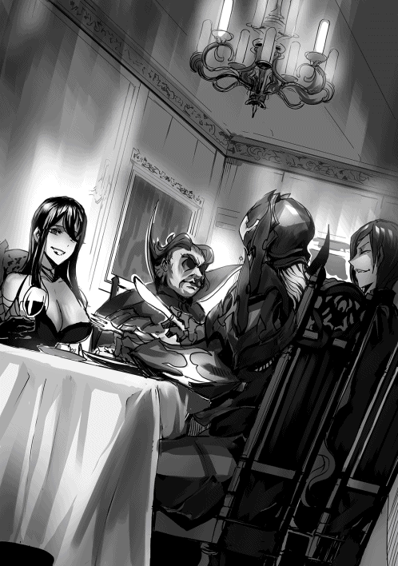
王城内。本日のお仕事が終わったため、休憩中の吾輩。グリード＝ラクトスである。
今日は比較的、書類が少なかったである。
いつもは仕事場が書類に埋め尽くされ、身動きが取れないほどなのだが、今日に限っては、床が見えない程度の量であったな。
......ゆっくりできるのは悪くないけど、ちょっと物足りない気がするなー。陛下じゃないけど、手持ち無沙汰である。
「おや、ラクトス執政。もうお仕事を終えられたのですか？」
にこやかな表情で吾輩に歩み寄ってくる男。
ラル＝ニゼット伯爵である。
吾輩と同じく、財政管理に携わっている彼は、吾輩の一家の噂が事実無根であると知っている、貴重な執政補佐である。
ニゼット家は元々、魔導で有名な家系で、彼も、奥さんも、娘さんまでもが魔導特性の持ち主という魔導エリートの家系である。
本来なら、魔導組合の上級組員になるような人なのだが、彼に財政管理の心得があると知った大臣殿が、泣きながら吾輩の補佐になるよう頼み込んだのである。
爵位は吾輩よりも下であるが、我が家が公爵となれたのは、吾輩の父であるディーボルトが戦争で多大なる戦果をあげた功績によるもの。吾輩の力で得た爵位ではない。
故に、爵位に関係なく、ラル伯爵とは友人のように接しているのである。ラル伯爵もそう思ってくれているはずである
......そうだよね？
「ニゼット伯爵、お疲れ様である。今日は楽な仕事だったのである」
「......この量が楽、ですか」
ラル伯爵の笑顔が引きつっているのである。なにかおかしなこと言ったかな？
それにしても、ラル伯爵が羨ましいのである。あの顔、常に優しそうな微笑みを携えた整った顔。
吾輩と同世代なのに、いまだに婦女子にキャーキャー言われているのである。もちろん好意的な悲鳴である。
吾輩の場合、「ひぃッ!?」とか「きゃあぁ!?」である。もちろん恐怖的な悲鳴である。
......ちょっとブルー入ってきたのである。
「コホン......まぁ、仕事の話は置いておいて、今日は例の件でお返事をいただけたらなと思いましてね......」
例の件？......あぁ、ラル伯爵の娘さんと、吾輩の息子、ジェイクのお見合いの話であるな。
「それならば、吾輩としては願ってもいないこと。......しかし、ジェイクにも告げたのであるが、多少不安を感じているようである」
ジェイクは昔っから女の子にも男の子にも怖がられてたからねー。
公爵家なのに、今の今まで婚約者の話など出なかったため、ちょっと尻込みしちゃってるのである。
「心配いりませんよ。ジェイク君の事情はこちらも分かっていますからね。......実を言うと、我が家もちょっと困っていたところなんですよ」
うむ......、アネッサちゃんであるな。
確かにあの子も、特殊な魔導特性のため、周りから孤立しておったもんなー。わが家の人間ほどではないにしても、見た目で誤解をうけてる節があるもんなー。
ジェイクと同じように、婚約者ができずに困ってたってとこであるか。
「たしかに、近いうちに実行すべきであるな。お互いこのままだとまずいことになるのである」
息子の代で我が家の血筋が途絶えてしまうのである。
......エルザ？ エルザはもう、ダメである......。
「では、詳しい日取りを......」
ラル伯爵が日取りについて話そうとした時我輩たちに声を掛ける者が現れる。
「失礼しますよ。父上、ニゼット伯爵」
聞き慣れた声、ジェイクである。めずらしいねー、ジェイクが王城に来るなんて。
「ジェイク、お前が王城に来るなど......何かあったのであるか？」
「いや、たいした用じゃなかったんだけどね。お二方の会話が聞こえてきたものだから、ところで......盗み聞きは感心しませんよぉ？」
ジェイクが廊下の角に向かって言葉を投げかけると、慌てた様子でメイドが走り去っていったのが見える。
貴族同士のお見合いの話、なるほど興味を惹かれて聞き耳を立てていたのであるか。
......ふふ。ジェイクってば、自分のお見合いの話を聞かれて恥ずかしがっているのであるな？
こういうところはいつまでたっても子供なんだから。
私は王城で奉仕しているメイド。王城勤務なだけあって、多く給金がもらえる。
といっても、私はまだまだ下っ端なので、やることといったら、掃除、洗濯、その他雑用などだけれど。
そんな私が、担当区域の清掃を終えて、これから休憩に入ろうという時に、ある会話が耳に入った。
「......まぁ、仕事の話は置いておいて、今日は例の件でお返事をいただけたらなと思いましてね......」
この声、ラル＝ニゼット伯爵様？
普段にこやかに微笑んでおられる、極めて温厚そうな方。
しかし、今の言葉、わずかに真剣な音色が感じられる。
「それならば、吾輩としては願ってもいないこと。......しかし、ジェイクにも告げたのであるが、多少不安を感じているようである」
次いで聞こえてきた声に、私は悲鳴をあげそうになるのをこらえる。
悪徳執政と噂される、グリード＝ラクトス公爵様。
お二方が、執政・執政補佐という立場なのは知っていたが。役職上そうであるだけで、このような、何か込み入った事情のある様子の会話をする間柄だとは思っていなかった。
「心配いりませんよ。ジェイク君の事情はこちらも分かっていますからね。......実を言うと、我が家もちょっと困っていたところなんですよ」
ラクトス様と、ニゼット様の口から、公爵様のご子息、ジェイク様の名前が出ている。
『例の件』『ラクトス公爵』『ジェイク様』
そして、ラクトス公爵の願ってもいないこと......『ラクトス公爵の望み』。
ニゼット様の真剣さを滲ませた発言。
まさか、まさか！
ラクトス公爵が王国の乗っ取りを企てているという、あの噂......。それが事実で、ニゼット様までそれに加担しているっていうの!?
わ、私はとんでもないものを耳にしてしまったのでは!?
そう考えてしまうと、普段の穏和なニゼット様の笑顔も、何か裏があるように感じてしまう。
「たしかに、近いうちに実行すべきであるな。お互いこのままだとまずいことになるのである」
ち、ちち......近いうち!? まさか、乗っ取り計画がもうそんな段階まで進んでいるの!? どうしたら、私は......！
「では、詳しい日取りを......」
──そうだ、伝えなくては、大臣様に、国王陛下に、この一大事を伝えなくては！
日取りの話をしだした二人の会話に聞き耳を立てる私。もっと詳しい情報を聞き出さなくては......！
「失礼しますよ。父上、ニゼット伯爵」
唐突に会話に割り込む第三者の声。こ、この声って!?
「ジェイク、お前が王城に来るなど......何かあったのであるか？」
やはり、ジェイク＝ラクトス様。黒い噂の絶えないラクトス家の長男。《魔蛇の化身》。
息を呑む私。
「いや、たいした用じゃなかったんだけどね。お二方の会話が聞こえてきたものだから、ところで......」
ジェイク様の視線が今まで会話していたお二方から外れる。
──そして、物陰に隠れている私の方へ、逆光で影を落としたジェイク様の顔が向けられる。
「盗み聞きは感心しませんよぉ？」
いつもの......だた貼り付けたような薄ら寒いあの笑みは見て取れない、彼が今どんな表情をしているのか窺うことは出来なかった。
それでも、ジェイク様の普段は前髪で隠されている右目が、首をかしげたことによって、わずかながら顕になっていた。
妖しい真紅の瞳が、その視線だけが、まるで私を射殺すように向けられる。
まるで、心臓を鷲掴みにされたような感覚が、私の体から体温を奪っていく。
気づかれていた!? どうやって!? 物陰に隠れていたのに......物陰？
......影!! 《影魔導》!?
私の行動は、私の居場所は、ジェイク様の影魔導で全て把握されていた!?
私は自分の影に視線を向ける。言い知れない怖気が体中を駆け巡る。自分の影が怖い。
半狂乱となった私は必死に、足をもつれさせながらも必死に、王城の廊下を駆け抜ける。
──そして、幸いというべきか、彼らに追われることはなかったようで、私は逃げ切ることができた。
もしかしたら、あえて逃がされたのかもしれない。私など、すぐに消せるから。
王国の乗っ取り計画という、とんでもない情報を掴んだものの、私はそれを伝えることができない。
それを誰かに伝えようとした時には、本当に殺されてしまう。もしかしたら、私だけではなく、家族も巻き込んで、皆殺しにされるかもしれない。
申し訳ありません、国王陛下。私は王国よりも、自分の命、家族の命が大切なのです......。お許し下さい。
その日私は、とても眠ることなどできなかった。
メイドが走り去った後、ほかに誰もいないのを確認するジェイクがほっとしたように胸をなでおろす。
「ははは、なにもそんな恥ずかしがることないじゃないか」
「そうは言われましてもねぇ......ボク、そういうの経験ないものでして」
愉快そうに笑うラル伯爵。
まったく、ジェイクってばシャイなんだから。先が思いやられるのである。
吾輩、孫の顔見れるかなー？ エルザは......いや、言うまい。
「なに、すぐに婚約、結婚ってわけじゃないんだ。まずはお友達から。って感じかな？」
「......ボク、女性の扱いとか、どうしたらいいか分かんないんですけど。......はぁ、分かりましたよ。今月末頃なら時間がとれると思います」
「おぉ！ ありがとうジェイク君!! あ、ウチの方から嫁入りってことで構いませんよ？ こちらとしては、貴族の血筋というよりも、魔導の血筋が尊重されていますので、ジェイク君との子供なら、魔導の適性も最良のものとなるでしょう。あ、できれば孫の命名は私に......」
「ちょ、ちょっと、まだ会ってもいないのになにを言ってるんですかぁ!?」
そうである！ まだ結論を出すのは早いのである！ 吾輩も孫の名付け親になりたいのである!!
「はは......おっと、私はまだ仕事が残っていますのでこれで。今月末、楽しみにしていますよ。ジェイク君」
そう言って、上機嫌で立ち去るラル伯爵。孫の命名権は譲らないのである！
っと、危ない。吾輩すっかりジェイクの用事を聞き忘れていたのである。
「で、ジェイク。一体なんの用であるか？」
「あー、いやね。ちょっと時間ができたから、たまには親子で昼食でもと思ってねぇ」
あぁ、そうだったの？ 親子で昼食......随分久しぶりだなー。
うん、いいかもしんない。
「......どの店であるか？」
「そりゃあもちろん、『新月亭』だよ」
おぉ、あそこであるか！
そういえば、この前行こうとしたけど、色々あって行けなかったんだよねー。
異国の食材とか料理とか出してくれるとこ。今、吾輩の中で異国料理がブームなのである。
「実は、情報を手に入れたんだよねぇ。今、コレが入ってるらしいよ」
そう言って、手元で何かを切るようなジェスチャーをするジェイク。
この動き、新月亭の店主がやっていた......まさか、サシミであるか!?
我が国には生魚を食する文化がないため、ゲテモノ扱いされているが、吾輩あれが大好物なのである！
アゾリアスには海がないから、アレを食べるには氷結魔導で冷凍したものを入荷するしかないのだが、非常に時間と手間がかかるから、あまりお目にかかれないのである。
「ちなみに、これもね」
今度は、小さな器を口元で傾けるジェスチャー。ま、まさかそれって......!!
「誠であるか!?」
思わず声を荒げてしまう吾輩。
ちょっと、それもしかしなくてもギンジョーのことだよね!?
なに？ 今日なにかの記念日なの!? 建国記念日は再来月よ!? 吾輩の誕生日にいたっては半年後よ!?
「ジェイク！ 急ぐのである!!」
「キシシッ......慌てなくとも、ちゃんと店主には伝えてあるよ。時間もあるし、慌てなくても問題ないよ」
そういう問題じゃないの！ 吾輩は早く食べたいのよ！
あぁ、楽しみである。今日は最高の一日になりそうである!!
俺、アルト＝アゾリアスは、皆知っての通り第一王子だ。
俺以外での唯一の王位継承者、弟のハンスは武術の才がなく、王位の継承は早い段階で諦めていた。
ハンスは現在、大臣のもとで、将来俺を補佐するために政治について学んでいる。
そういう理由があるため、父のあとを継ぎ、国王となるのはすでに俺で『確定』となっている。
まぁ、だからといって、それまでの日々を自堕落に過ごしているというわけではない。
我が国の王は、圧倒的に強くなければならない。力なき王に、民衆はついてこないのだ。故に俺は、毎日のように騎士団長等に稽古をつけてもらっている。
今日だって、今まさに稽古をつけてもらうため、歩みを進めているところだ。
......そんな中、とある人物の声が聞こえる。思わず足を止めてしまう。
「で、ジェイク。一体なんの用であるか？」
──グリード＝ラクトス執政。アゾリアスの裏側で何やら謀略を張り巡らせていると噂の男。警戒すべき人物。
というか、今ジェイクと聞こえたがまさか......。
「あー、いやね。ちょっと時間ができたから、たまには親子で昼食でもと思ってねぇ」
ッ......！ ジェイクがなぜ王城に!?
グリード執政の息子、ジェイク＝ラクトス。怪しい行動を繰り返し、悪事の証拠を掴ませぬ、狡猾な蛇。
そんな、アゾリアスの要注意人物のトップ二人が会話している。
内容は......昼食。なるほど、隠語か。
さすがに城内で、直接的な表現は使わないだろう。おそらく、何かしらの謀略の打ち合わせをするための招集。
「......どの店であるか？」
「そりゃあもちろん、『新月亭』だよ」
新月亭。
最近耳にした記憶がある。あれは......そう、先日ジェイクを尾行した時。
［──そう、男二人。新月亭の向かい。うん、ボクじゃあそこまで運べないからね］
何者かに通信魔導機で連絡をとっていた時に聞いた店の名だ。
そういえば、あの時ジェイクはその近辺で問題を起こされることを危惧していた。
やはりあの区画、なにかある。
「実は、情報を手に入れたんだよねぇ。今、コレが入ってるらしいよ」
ジェイクが、執政に向かって何かのジェスチャーをしている。
あれは、なんだ？ 手刀......刃物......ナイフ？
それを手元に......分からん、情報が少なすぎる。『入っている』とは一体？
「ちなみに、これもね」
今度は......飲み物？ にしては、器を表現する手が不自然だ。
グラスを持つような手つきではない。まるで、小瓶のような......まさか!?
「誠であるか!?」
執政が、興奮した様子で声を荒げる。間違いない！
『毒』もしくは『魔導薬』それも、違法の......!!
となると、最初のジェスチャー。『ナイフ』『手』『入った』......暗殺者を雇ったといったところか......！
おそらく奴らは誰かに対し、暗殺者を使っての殺害、もしくは魔導薬を使った傀儡化を図っている！
対象は......父か？ それとも騎士団長？ 大臣？
父や騎士団長が暗殺者ごときに後れを取るとは考えにくい。となると、やはり大臣か。
「ジェイク！ 急ぐのである!!」
「キシシッ......慌てなくとも、ちゃんと店主には伝えてあるよ。時間もあるし、慌てなくても問題ないよ」
大股で、急ぐように歩を進める執政。このまま行かせるのはまずい......！
しかし、ここで俺が呼び止めてしまえば警戒が強くなり、また証拠を隠滅される恐れがある。
俺が尾行するにしても、今回ばかりはバレた時のリスクが大きすぎる。
そうだ、彼ならばうまくやってくれるかもしれない。
軽装騎士隊の若きエース。ゼン＝ヘリックス。ここは信頼できる彼に協力を仰ぐことにしよう。
ボク、ジェイク＝ラクトスは現在、父のグリード＝ラクトスと大通り......の裏道を歩いている。
分かるでしょ？ ボクら二人が一緒に大通りなんか歩いたら......いや、やっぱり言いたくない。父ほどじゃないにしても、ボクだってショック受けるんだから。
といっても父は、執政という立場上、気持ち程度ではあるが変装をしている。遠目からでは父だと分からないだろう。
......近くで顔見られたらさすがにバレるけどね。悲鳴か気絶のおまけ付きで。
しかし、いくら裏道とはいえ、少数だけど人通りはあるし、出店もある。
ただ、幸いにも......と言っていいのか微妙だけれど、ちょっとだけ治安が悪いから、ボクらの顔を見て悲鳴を上げるような人物はいない。
柄の悪そうな人をちらほら見かけるけど、ボク達に絡んでくることはない。父さんには悪いけど、こういう時はあの悪評のおかげかなと感じる。
とか言ってたら、前方からそれっぽい感じの大男が。あ、冷や汗流して道を譲った。やっぱりちょっと、複雑な気分......。
──しばらく歩いていると、ようやく目当ての食事処、「新月亭」が見えてきた。そんな所で、父が歩みを止める。
「............」
「なに？ どうしたの？」
父の視線の先に目を向けると、どうやら屋台が気になっている様子。あれは、出店の定番の串肉だけど......。
「......ジェイク、お前はあの、串に刺さったよく分からん何かの肉、食べたことあるであるか？」
「ん？ そりゃもちろん。ボクはケチャップで味付けしてあるのが好きだねぇ。って、まさか父さん食べたことないの？」
「......うむ」
マジで？ それはよくない！
特別おいしいってわけじゃないけど、クセになるというかなんというか。とにかく、一度は食べてもらわなきゃ！
「じゃあボクが買ってくるよ。これから食事だし、一本でいいよね？」
「二本、お願いするのである」
......了解しました。
もう、これから食事だっていうのに......なんかボクも食べたくなってきたな。三本、いや、四本買おう。
買う本数を決めたボクは、屋台の店主に話しかける。
「あー、ちょっといいかな？」
「おう、なんだ......ッ!? ......なんでしょうか」
あ、途中で口調変わった。これは完全に萎縮してますな。
こう言っちゃなんだけど、あなたの顔もボクたち寄りですよ？
「串、四本もらえます？」
「へ、へいっ。四本で二十四枚になりやす......」
「おや、随分お安いですねぇ。」
串肉は大体、一本あたり銅貨十枚が相場だ。
それが一本、銅貨六枚って......もしかして、怖がって値段下げちゃったのかな？ そうだったら、ちょっと申し訳ないなぁ。
ボクは少し多めに払おうと、銅貨三十枚取り出そうとする。
ありゃ？ 銅貨がない......。仕方ない、銀貨でいいか。銅貨換算で百枚分。実はちょっとやってみたかったんだよね、「釣りはいらねぇ、とっておけ」ってヤツ。いい機会だ。
「じゃあこれでよろしく。あぁ、釣りはいらないよ」
「へ、へいっ......!? だ、旦那、これ、き、金貨......!?」
へ？ うわ、うわわ！ 間違って金貨渡しちゃったよ！ なにやってんのボク!? 銅貨換算で五千枚......！
う、うぐぐ。でもここで、「間違えました」はカッコ悪いし......！
「......キシシッ。いいよ、間違ってない」
「で、ですが──ッ!?」
何故かボクの背後に視線を向けて、驚く店主。さっきまでの焦ったような表情から一変、何かを決意したような真顔になる。
「......分かりやした。あっしは今日、ここで、あんた方を見なかった」
はへ？ 何を言って......。
振り返ると、父がこちらを凝視している。これは──店主さん父さんに気がついて？
あ、この感じ、あらぬ誤解を受けている!?
ちょっ......!? ち、違うよ！ 口止め料的なヤツじゃないよ!! ボクたち別に、これから人に見られたらまずいことをするわけじゃないよ!? その金貨は間違えて渡しちゃって引っ込みつかなかっただけで......！
「分かってやす。尋問されても口は割らねぇ。もらうもんもらっちまったし、こう見えてもあっし、口は硬いんでさぁ」
あぁ!? もうっ、違うのに!!
いい？ もう一度言うけど、その金貨は、ボクが間違って渡しただけなの！
「えぇ、この金貨は、旦那が間違ってあっしに渡したものです」
それと、ボク達は別に悪事を企むためにここを訪れたわけじゃないの！ ただ単に、父さんと食事をするためにここを訪れたの！
「えぇ、アンタ方はここいらに食事をするためだけに訪れた」
うん、なんか含みがある言い方するね店主さん!? 嘘偽りない事実を言ってるからねボクは！ ホントに分かってる!?
「もちろん、大丈夫です。ちゃんと覚えやしたぜ......」
なんだろう、コレはもう完全に誤解してるよね。しかもちょっとやそっとじゃどうやっても解けないやつ。
いいや、もう。これ以上はどうしようもないし、不本意ながら口止め的になってしまったけれど、逆に言えば誤解を広めないって言ってるようなものだし、きっと問題ない......はず。
「......それで、いいですよ」
誤解を解くことに失敗したボクは、諦め混じりに父の元に戻り、一本あたり銅貨千二百五十枚の串肉を二本渡す。予想外の出費に肩を落とすボク。
「ちょー美味いのである」
「......よかったね」
ボクの串肉はちょっとしょっぱかった。
──気を取り直して、ボクと父は串肉で小腹を満たし、異国料理を味わえる食事処、『新月亭』の入口の前に立っている。
異国の木材でできている看板には、その店名がボク達の大陸の文字と異国の文字、その両方で書かれている。
「さぁ、早速行くのである」
サシミとギンジョーが楽しみな様子の父。......さっき串肉食べたばっかりなのに。ボクはもう、ちょっとお腹膨れてきたよ。
物珍しい横に引く扉を開けて、ノレンと呼ばれる布をくぐる父。ところでこの布なんの意味があるんだろう。
店の中は昼時にもかかわらず、お客さんの姿は少ない。
少ない客が父に目を向け、一瞬驚いたような顔をするが、すぐに視線をそらす。特に怯えるている様子はない。
というのも、父は結構な頻度でこの店に通っているため、純粋にここの料理を楽しむ様子がよく見られるから、常連さん達には、比較的誤解をされていないのだ。
まぁ、とはいっても、顔が怖いことには変わりないみたいで、一瞬今みたいにビックリはしちゃうけどね。
「大将、今日入ってるアレ、いただきに来たよ」
「......おう、座って待っててくれ。今準備する」
ボクは大将にそう告げると、父と向かいあって席に座る。
新月亭の大将。彼はボク達、というか、父と同類であると言っていいだろう。
どう見てもカタギではない顔つき。料理人とは思えないほど鍛え上げられた体。しかも無数の刃物傷が痕になっている。包丁を持った姿なんか、完全に人殺しに見える。
もちろん実際はただの職人気質な料理人。刃物傷も、料理の修行で付いたものだと聞いた。
お互い通ずるところがあるようで、父とは随分と仲がいい様子だ。
......打ち解けているんだろうけど、お互い口数が少ないから、知らない人が見たら一触即発に見えるんだよねー。
「大将、吾輩は先に例のものをいただきたいのであるが？」
「......あいよ」
ニヤリと口元を釣り上げて、大将に告げる父。大将も大将で、鋭い歯をむき出しにして笑みを浮かべる。
うわっ、怖っ！ 見慣れてない分、父よりも怖いかもしれない。
「んふっ......んふふ」
父が上機嫌で声を出して笑っている。
訂正、やっぱ父さんの顔の方が怖いわ。
......分かってる、人のこと言えないってのは分かってる。
「おま、たせ」
父のもとにギンジョーを運んでくるウェイター。異国だとウェイターってなんていうんだったかな？
とにかく、運んできた彼、大将の息子さんは、実はボクの友達だったりする。
異国特有の浅黒い肌は大将と同じで、切れ長の鋭い目つき、こちらも体のあちこちに傷跡が見られる。加えて、彼は鼻から下、口元を隠すように布を巻いている。
「相変わらずですねぇ、ユウガ君。接客中くらいその布取ったらいいでしょうに」
「だめ、コレ、すごく必要」
彼、ユウガ君は極度の恥ずかしがり屋さんなのだ。ボク相手でも、なかなかその布を取ろうとはしない。
本当は目元も隠したいらしいのだが、以前顔全体に布を巻いたら、ほとんど目が見えなくて階段から転げ落ちてしまったそうだ。
そう、見た目に反して彼は、おっちょこちょいなのだ。体にある傷跡はそういった経緯でできているらしい。
「キシシッ......」
「む、ジェイク、失礼、考えた、笑った」
ボクが彼のおっちょこちょいな様子を思い出し、笑い声をあげると、少しムッとした様子で睨みつけてくる。怖いには怖いけど、大将や父さんほどじゃないかな。
そうそう、ユウガ君はまだこっちの言葉を流暢に話せないため、少しだけカタコトだ。見た目の怖さも相まって、ご近所さんに恐れられている。
そういった経緯から、大将さんと父の繋がりもあって、似た者同士ということでボク達は仲良くなった。
とは言っても、あまり二人で遊びに出かけること、ないんだけどね。......確実に通報されちゃうから。
「......出来たぞ」
言葉数少なく、大将がテーブルにサシミの盛られた皿を並べる。
「おぉ！ コレ、コレである！ んふふっ......コレがあれば吾輩は、どこまでも戦えるのである......！」
すでにギンジョーをちびちびやっていた父は、大層機嫌の良さそうな様子で、運ばれてきたサシミに手を伸ばし、ひと切れ口に運ぶ。
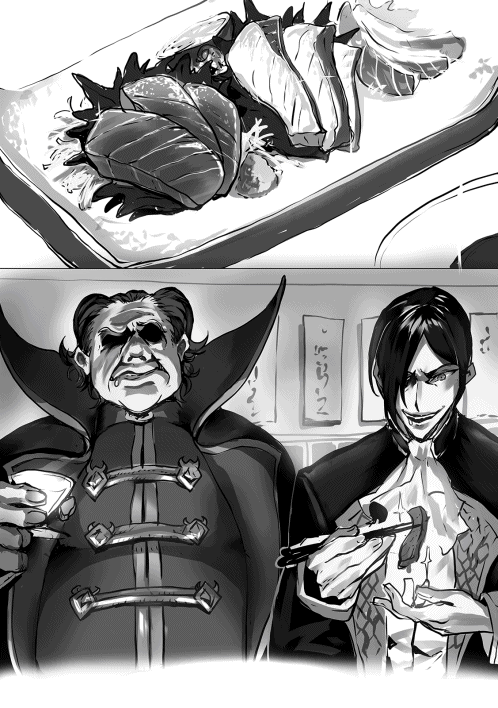
「そこまでです!!」
と、唐突に軽鎧を身にまとった騎士風の男が、大声を上げながら店内に突入してきた。
え？ なに？ なんかあったの？
「違法な行為が行われていると情報が入っています。全員その場を動かないで下さい！」
違法な行為!?......まぁたしかにそういうことするなら、路地裏のこういった店は都合がいいのかもしれない。
まいったなぁ。面倒な現場に居合わせてしまった......。
金属の擦れる音を鳴らしながら、歩みを進める騎士さん。
......あれ？ なんかこっちに来てない？
「現場は抑えました、もう言い逃れはできませんよ。グリード＝ラクトス！ ジェイク＝ラクトス！」
はえ!? ボク達!? 生魚食べるのっていつから違法になったの!?
僕こと、ゼン＝ヘリックスは軽装騎士隊所属。
隊歴は一年と短く、年齢も二十と若いのですが、能力を買われて、周りからは若きエースなどと呼ばれています。
そんな僕に、よく一緒に訓練をうけているアルト王子から相談がありました。なんでも、悪名高き執政殿、グリード＝ラクトス公爵とその息子、ジェイク＝ラクトス等が、本日「新月亭」という店の近辺で、国を脅かす謀りごとの集まりを行うらしいのです。
彼らの悪行は、実際には確認されておらず、証拠もありません。
そのためか、騎士団長殿も、大臣も、国王陛下すら彼らを悪と断じてはおらず、噂は事実無根であると考えている節があります。
アルト王子も、国王陛下からそういう風に聞いているはず。なんだったら、詳しい実情を交えて、より詳細に説明を受けていると思うのですが、どうにもアルト王子は切羽詰っている様子でした。
アルト王子は、二人が大臣に対して、なにやら非道な行いをしようとしているという情報を得たそうなのです。
そんな大それた計画があったら、暗部が把握していないはずないと思うのですが、万が一ということもあります。杞憂ならばそれで良し、でなければ阻止する。
そう考え、僕はアルト王子の情報にあった新月亭という店へと向かったのです。
──僕が新月亭の近くにたどり着くと、監視対象である二人が、ちょうど店内に入るところでした。
ふと、看板に目をやると、『新月亭』という店名が記されている下に、複雑な記号のようにごちゃごちゃとした文字が見受けられました。......もしかしたら分かる人には分かる、暗号かなにかなのかもしれません。
いや、今はとにかく、執政殿の動向に注目すべきですね。僕は気配を絶って、店の外の窓の付近に潜み、中の様子を窺います。
店の雰囲気は異質なものでした。見たこともない置物が並ぶ店内、入店した執政殿に一斉に視線が注がれますが、皆すぐに視線を外します。
......怯える様子のない彼ら、それはまるで執政がここに来ることを知っていたような。
そして店主、一目見て分かりました。彼は、ただ者ではない。鋭利な刃物によってできたと思われる傷が体中に痕を作っています。
これは、少しきな臭くなってきました。
「大将、今日入ってるアレ、いただきに来たよ」
「......おう、座って待っててくれ。いま準備する」
店主に話しかける執政殿のご子息。品名を口に出さないあたり、これは疑惑の色が強くなってきました。
「大将、吾輩は先に例のものをいただきたいのであるが？」
「......あいよ」
ニヤリと口元を釣り上げて、邪悪な笑みを浮かべる執政殿と店主。その様子に、妙な寒気を感じます。
「んふっ......んふふ」
執政殿が声を出して笑っている......!? あのような姿、城内で見かけたことはありません。これは、本当に王子の言っていた通りに......！
「おま、たせ」
給仕と思われる男が、執政殿のいるテーブルに飲み物らしき器を運びます。
彼を見て、僕は確信しました。
王子の言っていた暗殺者、間違いなく彼でしょう。あの眼光、幾人もその手にかけてきた、凄腕の暗殺者の目です。
加えて、口元を隠すように覆われた布。給仕にはありえない格好です。
それに彼の言動、この国の言葉を話しなれていない様子です。おそらく異国の者......。
聞いたことがあります。異国の暗殺者は、我が国の暗部のように、仮面で顔を隠すのではなく、黒い布で口元を隠し、闇に紛れる。
確か名を「シノビ」と呼ぶ、隠密特化の者たち。間違いなく彼はそのシノビでしょう。
と、考えを巡らせていると、店主が執政殿のテーブルに何やら運んできます。皿の上の物を凝視する僕は、それを目にして驚愕します。
な、なんですか!? あの禍々しい赤い物は......!!
あのようなもの、見たことがありません。獣の肉ではない、調理された様子のない赤い肉片。見た目は魚の切り身のようではありますが、赤い身の魚など知りません。
......まさか。まさか！ 《魔物の肉》!?
都市伝説の域を出ませんが、噂に聞いたことがあります。
強力な魔物の肉を生で食すことによって、自身の身体を魔物のそれに近づける外法が存在すると。
「おぉ！ コレ、コレである！ んふふっ......コレがあれば吾輩は、どこまでも戦えるのである......！」......正常な食べ物に対する反応ではありません。
となると、やはりアレが王子の言っていた、彼らの計画に必要な危険物......《強力な魔物の肉》！
おそらく彼らは、その外法をもってして、屈強なアゾリアス王国の兵士達と事を構えるつもりなのでしょう。
こうしてはいられません。あれで公爵にどのような変化が起きるかまでは分かりませんが、そんな行為を放っておくわけにはいきません......！
単騎で突入するには少し不利な状況ですが、これは仕方ありません。腹をくくります。
「そこまでです!! 違法な行為が行われていると情報が入っています。全員その場を動かないで下さい！」
勢いよく店内に突入する僕。目的の人物は、突然のことに動きを止めています。
こちらを睨んでいるようですが、先手をとっているのは僕。抵抗する隙は与えません。
「現場は抑えました、もう言い逃れはできませんよ。グリード＝ラクトス！ ジェイク＝ラクトス！」
力強くそう告げると、僕は剣に手をかけます。
抜刀しようとしたその時。
「まっ......！ 待ちなさい!! そこの騎士!!」
──息の荒い大臣殿が、僕をその声で静止させました。
「ま、誠に申し訳ありませんでしたー!!」
ゼン＝ヘリックスの全力の謝罪が、新月亭の店内にこだまする。
大臣である私が、いつものように外出中の執政殿に付けていた暗部から、「騎士の一人が執政殿を無実の罪で捕らえようとしている」と連絡を受けたため、人の限界を超える速度でこちらに赴いた時、報告にあった騎士、ゼン＝ヘリックスはあろうことか剣の柄に手をかけ、今まさに抜剣するところだった。
数々の誤解、勘違いを受けてきた執政殿だが、騎士に剣を向けられるなど未だかつてない。そのことによって、執政殿の繊細な心がどれほど傷つくか、まるで未知数である。
幸いというべきか、私が彼に、「執政殿の噂は全て事実無根であり、それどころか、執政殿がおらぬと国の滅亡まである」といったことを必死に説明すると、どうやら理解してもらえたようで、ゼン＝ヘリックスの顔色はみるみる蒼白となり、自らの過ちを認め、謝罪するに至った。
「謝罪しても償いきれぬ罪。申し開きもありません！ 如何様にでも処分なさってください!!」
「執政殿。彼はこう申しておりますが、どうしましょう？」
公爵──執政殿に対して剣を抜くなど、未遂に終わってはいるが最悪の場合、死罪が適用されることまである。少なくとも、間違いなく投獄され、騎士はクビになるであろう。
だが、執政殿の返答は、なんというかまぁ、思ったとおりだった。
「謝罪してもらったし、別に処分とかは必要ないのである」
誤解が解けたことで、まるでショックを受けていない......というか、むしろ機嫌が良さそうな執政殿は彼に処分は不要と断じた。
執政殿は、なんというか顔の割に、処罰とか、死罪とか、投獄とか、そういった物騒な話があまり得意ではない。そのためか、自分に対する不敬等にも随分と寛容なのだ。
まぁ、執政殿が許すと言っている相手を処罰して、そのことで執政殿が心を痛め、財政管理に影響が出るかもしれないことを考えると、かなり甘いとは思うが、執政殿の采配に納得するしかあるまい。個人的には、処罰を下したい者はたくさんいるのだが......。
特に、見回り衛兵諸君。「不審人物には、一切容赦せぬこと」と教えられているのは分かるが、もう少し王城の近くで問題を起こして欲しいものだ。
いや、問題は起こして欲しくないが、城壁門の近くまで走らせるのは勘弁して欲しい。......もう一度、騎士団長に説明させるべきかもしれない。新人などは、知らない可能性もあるからなぁ。
あと、陛下。
アイツ、国王じゃなかったら絶対牢屋にぶち込んでやるのに。いつもいつも執政殿の顔が怖いと声に出して言いやがって。
いつか絶対ぶん殴ってやる。覚悟しとけよ、奥歯で肉を噛めないようにしてやるからな！
「な、なんと......！ ラクトス公爵様、あなたは僕を許してくださるのですか!? あのような無礼な振る舞いをしたこの僕を!!」
処分されることに腹をくくっていたゼン＝ヘリックスの、驚いた様子の声で、現実に引き戻される私。
おっと、いけない。私としたことが心を乱してしまった。それも、陛下の事なんかで。
彼の言葉を受けて、執政殿が語りかける。
「人間、誰でも誤解や間違いはするものである。貴公はその間違いを認め、吾輩に心からの謝罪をした。......そのような人物を処罰する事は、吾輩にはとても心苦しいのである。それに、元は吾輩の顔が怖いのが原因であるし、不敬とかはあまり気にしない質であるしな！ ふふふ......」
随分と饒舌で、誤解を与えるような発言を控える執政殿。
ちょっと、どうしました執政殿？ 変なもの食べました？ やっぱり生魚は人体に影響があるんじゃないんですか？ 軽い自虐までしちゃってるし。
......ん？ もしかして執政殿、あなた酔ってます？
「吾輩は、ちっとも酔っていないのである」
酔っ払いはみんなそう言うんです。
なるほど、いつもよりよく口が回ると思ったら、お酒が入っていましたか。
アルコールの入っている時の執政殿は、非常に饒舌になり、いつもの誤解を与える発言から、今のように真当な喋り方へと変化する。
いつもこの様な発言をしてくれれば、私の足と、胃の負担が軽くなるのだが......。いっそ執政殿には常時アルコールを摂取してもらうか？
......いや、二日酔いで寝込まれたりしては敵わないか、なんともままならない。
それに、この状態の執政殿もある意味では厄介なのだ。
「おぉ......！ ラクトス公爵様、貴方はなんと器の大きな方なのだろうか......!! 国王陛下に勝るとも劣らぬ、とても大きな人としての器......！ 見かけや噂に踊らされていた自分が情けないっ！ それでも、貴方様のような方に出会えるなんて、僕はなんと恵まれているのでしょう!!」
......顔と言動のギャップがそうさせるのだろうか。このように、一定のものに過剰に敬われてしまうのだ。下手すると、陛下を上回るほどに。
この騎士も、やはりこうなってしまったか。感動のあまり涙を流しているし。
──それから、ゼン＝ヘリックスの言葉に気を良くした執政殿は、新月亭の異国料理を彼にもすすめた。
初めは、恐る恐るサシミを口にしたゼン＝ヘリックスであったが、どうにも彼の味覚には合った様子で、随分興奮した様子で箸を進めていた。
そこへ追撃と言わんばかりに、異国の酒を進めるジェイク君。ゼン＝ヘリックス、これまた大絶賛であった。
すでに仕事は片付いていたため、私まで御相伴に与ってしまったのだった。
「──あぁ、グリード様もジェイク様も、なんと素晴らしきお方達なのでしょうか！ 無礼を働いた僕を許してくださるどころか、サシミやギンジョーなどといった、異国の絶品料理をご紹介してくださるなんて！ あの方々はもしや......いえ、きっと聖人、神の御使いに違いありません!!」
新月亭からの帰路、ゼン＝ヘリックスは感涙しながら二人を賞賛していた。
彼の中で随分とあの二人の神性が上がっているようだが、これは問題にならないだろうか......ちょっと不安だ。
「......そういえば、あなたは何処から彼らが謀りごとをしているなどと聞いたのですか？ 噂程度の確証ではあそこまで行動を起こさないし、あなただったら、騎士団長あたりの様子から噂の信憑性の無さは察せられたと思うのですが」
ふと思い出し、彼に誤解をあたえた情報源を尋ねる私。......返ってきた答えは私の頭を悩ませた。
「あー......それはアルト王子からお聞きしたのです。なにやら暗殺者とか、魔導薬とか。信じてしまった私が言えたことではありませんが、どうしてそのような考えに至ったのでしょうね？ あんなに素晴らしいお方なのに」
......陛下あの野郎！ さてはアルト殿下にまだ説明してねぇな!? 「我が子らには余が説明しておこう、そのほうがすんなりと納得してくれるであろう」とか言っておいて！
思い返せば、ハンス殿下に執政殿の話をした時のあの顔、あれって聞いてなかったことを知らされて吃驚してたってことかよ!! その後のハンス殿下の執政殿に対する対応がちゃんとしてたから気づかんかったわ！
察してくれてたのね！ ハンス殿下ってばお利口さん!!
不敬なんて知るか！ あのクソ陛下......！ 帰ったらみっちり説教してやる！ 覚悟していやがれ!!
王都の中心部に位置する大衆酒場『光の羽』。
毎日のように多くの客が出入りし、楽しげな会話がかわされ、出される美味い食事と酒の味に舌鼓を打っている、アゾリアス一とも称される大きな酒場である。
今日も今日とて、昼間から酒を呷る客や、食事を楽しむ商人等の喧騒で賑わいを見せていた。
......もちろん、客達の間で飛び交うのは楽しげな会話だけにとどまらない。
情報を集めるのならまず酒場。そう言われるように、当然のごとく、数多くの情報、噂話もまた囁かれるのだ。
魔物の出現情報、天候の様子、流通の具合......そして、貴族の噂。
アゾリアスの王都で囁かれる貴族の噂とは？ そう尋ねれば全員が全員こう答えるだろう「それはラクトス公爵家の噂だ」と。
本日も、数多いテーブル席の隅に陣取る王都の住人が、酒を呷りながらその噂について語っている。
「おい、この間の執政の話、お前聞いたか？」
「あぁ、アレだろ？ なんでか知らねぇけど、執政が城下町で衛兵と揉めてたとか、んで大臣が気絶したとかなんとか」
「なにさ、そんなのいつものことじゃないの......まぁそれがいつものことって、アタシ等も大分感覚が麻痺してる気がするけどさ」
噂をしているのは男二人に女一人、普通の住民とはいささか異なる格好、佇まいだ。
彼らは所謂『狩人』と呼ばれる職種の者達。その名の通り、騎士団や兵士が討伐するまでもない魔物を狩り、その魔物の素材を売って生計を立てている輩だ。昼間から酒を呷るようなのは大体が彼らのような者たちだった。
乱暴者で粗忽者。基本的にそんな評価を受ける連中ではあるが、ここアゾリアスにおいてはその風潮もいささか薄い。強さがイコールで尊敬に繋がるアゾリアスならではと言えよう。
「違ぇよ、最近の話さ。......裏路地に新月亭っつー店あんだろ？」
「あぁ、あの胡散臭い店？」
「そうだ。そこでよ、執政と《魔蛇》が一緒にいたって話だよ」
「はぁ!? なんだよそれガセじゃねぇのか？ 公爵とその息子がなんで路地裏の店なんかにいるんだよ？」
にわかには信じがたい話に、聞き手側の男が驚きの声を上げる。
「いや、ガセじゃねぇ。ちょうどその場に居たんだよ俺のダチがな」
「......そんで、それだけじゃ終わらないんでしょ？ 何があったのさ？」
確かな情報であると説明した語り手の男に、声を絞るように女の狩人が尋ねる。
「それがな、最初は普通に食事してたらしいんだが......途中で騎士が乱入してきたんだ。執政と魔蛇が違法な取引をしているってな」
「マジかよ！ まさか、例の組織か？ 取引っつーと『贄』か『幽霊』あたり？」
贄、幽霊。これらはアゾリアス王都にて、執政が絡んでいると噂される犯罪組織、人身売買組織『悪魔の贄』、窃盗集団『強欲な幽霊』の略称である。
「あら？ でもおかしいじゃないのさ。執政が捕まったなんて話これっぽっちも聞かないじゃないの。騎士に現場取り押さえられたんでしょ？」
「......それがな、騎士がいざ抜剣って時に大臣が駆けつけて事態を治めたんだってよ」
「は？ 大臣って確か、証拠が不十分だから執政を泳がせてるんじゃなかったのか？ 取引現場抑えたんなら証拠としては十分だろ、なんで止めるんだよ？」
「いや、そっからはなんか個室に移ったらしくて詳細は分からなかったらしいんだけどよ。俺が思うに大臣は執政を泳がせてたんじゃなくて、もしかして執政と協力態勢にあるんじゃねぇか？」
語り手の男が情報を元にそう推理すると、女の狩人が声を荒げる様に否定する。
「ないない！ それはないでしょ！ 大臣って言ったら黒い噂なんて何一つ無い潔白な人物って話じゃないのさ。大臣の噂なんて『ありえないほど足が速い』ってぐらいなもんよ？」
「だが、情報から推測するに、そう考えるのが一番しっくりこねぇか？ 大臣と執政が組んで、アゾリアス王国でなんかしようとしてるってよ」
感情的に思わず否定した女の狩人だったが、語り手の男に反論したくとも言葉が見当たらなかった。
確かに言われた通りそう考えるのが自然だ。だが、女の狩人は信じたくなかった。
執政が何を為す気か不明瞭だが、良からぬことに間違いはない。それに大臣が加担しているとなれば、敬愛する陛下のすぐ側には敵しか居ないということになってしまう。
そう。彼女は生粋のアゾリアス国民、言動こそ粗暴ではあるが、陛下に対しては他の住民同様敬意を表しているし、なにより今のアゾリアス王国を愛していた。だからこそアゾリアスが、語り手の男の話したような危機的状況にあるなど信じたくなかったのだ。
「......これから、この国はどうなっちまうんだ？」
深刻そうに俯いたまま沈黙する女の狩人に触発され、不安を感じた聞き手の男が問いかける。
「さぁな。あんまり考えたくはねぇが、最悪の場合クーデターとか、でっかい内戦が起こる。とか......」
「な、内戦なら、良くはねぇが最悪じゃねぇだろ？ 陛下と騎士団の側につけば勝ちは確定じゃねぇか！ そうだろ!?」
未だに俯いたままの女の狩人を励ますように、自らも安心を得ようとするように、若干ぎこちないながらも笑みを浮かべてそう投げかける聞き手の男。
だが、女の狩人の表情は暗いまま。そして左右に首を振って、静かに言葉を漏らす。
「ディーボルト＝ラクトス......」
「......え？」
「戦争の英雄、ディーボルト＝ラクトス。あの方は、内戦になったらどっちの味方になると思う？」
言わずと知れた戦争の英雄、ディーボルト＝ラクトス。その名にあるように執政の、グリード＝ラクトスの実父。
国を追われてしまった英雄は、最強と呼ばれる魔導師は、執政と血の繋がった彼は、内戦になったらどちらにつくのか。
沈黙が支配するテーブルに乗せられた飲みかけの酒は、すっかり温くなってしまっていた。
少しばかり時を遡る。
現在は、黒い噂の絶えぬかの執政が衛兵に冤罪で捕まりそうになっていた日。
場面は城壁門付近に建てられている、王国衛兵の詰所でのことである。
その扉を開けて、見回りを終えた一衛兵がその中へと、何やら納得のいかぬ表情で入室する。
「おう、見回りご苦労さん。なにかあったか？」
どこかニヤニヤした様子の、先輩の衛兵。彼が、今しがた入室した新人衛兵に声をかける。
「ラクトス執政がなにやら問題を起こしてましたよ。執政が城下町にいるなんて、例の噂の犯罪組織に関係があるとしか考えられないですよね？......そう思って、同行してもらおうとしたら、急に現れた大臣に止められてしまいました。明らかに不審な行動をしていたのにもかかわらずですよ？ なぜ大臣が止めに入るんですかね。何か考えがあるとか？ まさか大臣もグル......？」
ブツブツと考えを巡らせる新人衛兵。そんな彼の様子に、先輩衛兵が声を上げて笑い出す。
「ははははっ！ やっぱりやっちまったか！......実はな、執政の黒い噂、あれ全部事実無根のでたらめなんだよ！ 衛兵隊長から聞いたんだから、間違いねぇ。それに、騎士団長だって、大臣だって、国王陛下だってそのことは把握してるんだぜ」
その言葉を聞いた新人衛兵は、驚いた表情を浮かべる。
理解が追いついていない様子の彼に、先輩衛兵は言葉を続ける。
異国料理が好物な執政は、その店に通うために度々城下町にお忍びで来ること、その顔の恐ろしさ故に、女子供は泣くほど怖がるということ、国民は彼の実情を知らず、ただ根拠のない、恐ろしい噂を信じて恐怖しているということ。
新人衛兵は答えに行き着く。執政は、顔が怖いから誤解されているだけだと。
「......って、ちょっと！ それだと俺、かなりまずいことしちゃってませんか!? 執政を誤解で捕えようとするとか、投獄とか嫌ですよ俺！ どうして知ってたんなら教えてくれなかったんですか!?」
顔面蒼白で先輩衛兵に詰め寄る新人衛兵。
しかし、先輩衛兵の顔は変わらずにやけたままだ。
「大丈夫だっての。これはな、衛兵隊の伝統なんだよ。執政を誤認逮捕しそうになって、先輩にネタばらしされて、慌てふためくって一連がな。俺だって新人のころは通った道なんだぜ？」
その言葉に、少し安堵した様子の新人衛兵。しかし不安は完全には拭いきれていないようで、先輩衛兵に疑問を投げかける。
「でも、その伝統ちょっとまずくありません？ 国の上の方はこのことちゃんと知ってるんですか？」
「そりゃそうだろ。俺とか、俺の先輩とかが処罰をうけてねぇんだから。新人の訓練云々って名目でさ、案外、執政も大臣もノリノリで協力してくれてるんじゃねーの？ 執政なんかは、不敬にはあんまり厳しくない方だって聞いてるぜ」
お気楽にそう答える先輩衛兵に、ため息をつく新人衛兵。
彼らは知らなかった。噂の真偽ではない。執政の心の繊細さを。
執政の優しさ故に、自分たちに処罰がくだされていないことを。
国の上層部に伝わっていれば、そもそもこのような伝統は許可されなかっただろうことを。
「──それにな、俺は見てみたいんだよ......大臣、速かっただろ？」
「え？ まぁ、そうですね。急に現れてびっくりしましたよ。まるで疾風みたいに」
「俺はな、大臣がどこまで速くなれるのか、それを見届けたいんだ......」
──数年後、大臣によって、衛兵隊全員が素手で顔面をしこたま殴打される事件が発生する。
逃げ惑う衛兵を追い詰めるその速度はまさに神速だった。
そして、この伝統が消滅するとともに、大臣こそがこの国で最強の存在だと実しやかに囁かれるのだが、それはまた別のお話。
わたくし、リリアナ＝ラクトスは今、とても上機嫌です。
なぜならば昨日、帰ってきた旦那様からジェイクのお見合いについて聞いたのですから。
お相手は、ラル＝ニゼット伯爵様のところのアネッサちゃん。一度お会いしたことがありますが、とても物静かで、穏やかな雰囲気の子でしたわ。
あんな良い子をお嫁さんにもらえるなんて、ジェイクはとても幸せ者ね。
そうそう、あまりに嬉しかったから、お義父さまにも通信魔導機で伝えましたの。
──お義父さま、ディーボルト＝ラクトス様。
グリード様の実父で、戦争の英雄。大魔道師「宵闇の魔導王」その人。
そんな、怖い二つ名で呼ばれてはいますけど、のんびりとしたとても優しいお方ですの。
まぁ、なんでも戦争の時の癖が抜けないらしくて、ちょっと仰る言葉が難しいけれど。
......あら？ なんの話だったかしら。
あぁ、そうそう。ジェイクのお見合いのことをお義父さまに伝えましたら、その日取りに合わせて、なんとお義父さまが久方ぶりに屋敷にご帰宅なされると仰ったの！
戦争が終わった後、一国が過剰な戦力どうこうとかいう理由で、グリード様が成人なされてからは、各国の魔導組合を転々としていて、なかなかお会いできないからとても楽しみだわ。
そうだわ、英雄の帰還ですもの、国の上層部の方々にもお伝えしなくちゃ。
せっかくだから、お弁当でも作って、旦那様やエルザに持って行ってあげましょう。きっと喜ぶわ。
──王城に着いたわたくしは、ちょっとしょんぼり。
旦那様がすでに昼食をとるために外出されていました。
大臣様も、何故か床に座っている陛下とお話していましたし、今はお邪魔しないほうがいいわよね。
......とりあえず、エルザの所に行こうかしら。お義父さまの帰還はそのあとにお伝えしましょう。
王城に設立されている騎士隊の訓練所。今日は重装騎士隊の方々は訓練の日だと聞いていましたから、おそらくここに......。
『あれ!? 母上！ 何故ここにいるのでありますか!?』
あぁ、居ましたわ。わたくしの娘、エルザ。ちょうど休憩中で、これから昼食だったみたい。
......休憩中くらい、兜はとってもいいんじゃないかしら？
わたくしとしては、もうちょっと女の子らしくして欲しいんだけれど、エルザったらすごく楽しそうに鎧の話をするからあんまり強く言えないのよねぇ。
「ふふ、ちょっとお城に用事があったから......そのついでに、お弁当作ってきたのよ」
『母上のお弁当!? やったーであります!! いやー、これからお昼だったのでありますが、騎士隊の食堂、あんまり美味しくないからすごく助かるのであります!!』
「こらこら、そんなこと言ってはダメよ」
もう、この子ったら。そんなにはっきり言っちゃったら失礼じゃないの。ほかの隊員の皆さんだって、こっちを見て唖然としちゃってるじゃない。
あぁ、そうだわ。
「皆さんもどうかしら？ お弁当、ちょっと多めに作ってきたから。お腹いっぱいとはいかないと思うけれど、召し上がらない？」
『母上の料理は絶品なのであります!!』
「ひ、ひぃっ！ いえ......け、結構です!!」
あら残念、遠慮しているのかしら？ せっかくだから、家族以外の方の感想をいただきたかったのだけれど。
『ははは！ きっとみんな母上を怖がっているのであります！』
「む、そんなことないわよ失礼ね。......これはお仕置きが必要かしら？」
『ふぁ!? お仕置きってまさか、晩御飯に玉ねぎを出すのでありますか!? や、やめて欲しいのであります！ 自分、あれだけは無理なのであります!!』
ふふん、これが調理場を支配する者の力よ！ ......なんてね。エルザもなんだかんだ言ってもまだまだ子供だわ。
......あら？ なんだか皆さんがザワザワと。
「なんだ？ お前ら、ぼやぼやしてると休憩時間終わっちまうぞ。さっさと飯を......って、ラクトス公爵夫人じゃねー......ですか！ どうしたんです？ 貴女がこんなところに来るなんて」
『あ！ 隊長!! 隊長からも言って欲しいのであります!! 母上が晩御飯に玉ねぎを出すつもりなのであります!!』
「あ？ 玉ねぎ？ 何言ってんだお前？」
そこに現れたのは、エルザの上司。重装騎士隊の隊長さんでした。
もう、エルザったら、恥ずかしいから玉ねぎくらいでそんなに騒がないでくれないかしら。隊長さん、ポカンとしちゃってるじゃないの。
「......そうだわ、隊長さん。どう？ お弁当があるのだけれど、召し上がらない？」
「は、はぁ」
そう言うとわたくしは、訓練場の隅に設置されている木製のテーブルにお弁当を広げます。お外で食事するなんて、久しぶりだわ。なんだかわくわくしちゃう。
重装騎士隊の隊長であるオレは、太陽が真上を通り過ぎたあたりで、隊員に休憩時間にすることを告げると、騎士隊の食堂へと足を運んだ。目当ては串肉サンド。
露天なんかで売っている串肉を、切れ目を入れたパンに野菜と一緒に挟んだだけの簡単なものなんだが、コレが結構美味い。
......つーか、これ以外があんまり美味くない。シチューだとか、煮込みだとか、結構な数のメニューがあるにもかかわらず、手が込んでいる料理ほど味が悪い。
弁当なんかを持ってきていれば、それを食えばいいんだろうが、独り身のオレには難しい。早起きして弁当をつくるなんざ、めんどくさいしな。
しかし、オレが食堂にたどり着いた頃には、すでに串肉サンドは売り切れてしまっていた。
くそっ、訓練に熱が入りすぎちまったからな。出遅れたか。
仕方なく日替わりでも食おうと、メニューを確認する。
「げ、マジかよ」
日替わりのメニューには、「カリー」と書かれていた。
アゾリアスの南方にある小国が発祥の、香辛料をメインに用いた料理らしいのだが、コレがまた不味い。
いや、きっと本物は美味いんだろうけど、騎士隊の食堂のはすごく不味い。ザラザラしていて、粉みたいな食感がする。
アレを食うくらいなら、水で飢えを凌いだ方がマシだ。
「まいったな......これは昼抜きか？」
──結局、昼飯を抜くことに決めたオレが訓練所に戻ると、隊員たちのざわめきが聞こえてきた。
「なんだ？ お前ら、ぼやぼやしてると休憩時間終わっちまうぞ。さっさと飯を......って、ラクトス公爵夫人じゃねー......ですか！ どうしたんです？ 貴女がこんなところに来るなんて」
隊員たちを掻き分け、騒ぎの中心であろう場所にたどり着くと、エルザとラクトス公爵夫人が居た。
エルザはともかく、なんで公爵夫人がここに居るんだよ。
『あ！ 隊長!! 隊長からも言って欲しいのであります!! 母上が晩御飯に玉ねぎを出すつもりなのであります!!』
「あ？ 玉ねぎ？ 何言ってんだお前？」
つーか、よその家の食事になんでオレが口出ししなきゃなんねぇんだよ。しかもラクトス公爵家。
「......そうだわ、隊長さん。どう？ お弁当があるのだけれど、召し上がらない？」
「は、はぁ」
よく分からんが、公爵夫人が弁当をくれるらしい。
まぁ、こう言っちゃなんだが、ちょうど良かった。昼抜きで訓練とか、無理じゃあねーが、ちとキツイ。
オレはざわつく隊員たちをスルーして、その弁当をいただくことにした。
公爵夫人の料理は、何度か食ったことがある。
というのも、エルザの理解不能な言語を聞き取らないと、騎士隊の仕事が難しくなるため、以前に公爵夫人から解読法を教えてもらっていた。その休憩中に軽食等を振る舞ってもらっていたのだ。
最初は驚いたもんだ。公爵夫人が料理するって、全然イメージできねぇし。使用人も全然止めねぇの。
......しかし、当時から思ってはいたが、久しぶりに食ってみるとやっぱり
『うまいでありますぅ────ッ!!』
「うるせぇ！ 黙って食え!!」
まぁ、確かに美味いがな。いいなぁ、執政は、こんな美味い飯毎日食ってんのか。
「......俺も嫁さん欲しいなぁ」
「あらあら！ じゃあ、エルザなんてどうかしら？」
『はぇ!? 自分、隊長に嫁ぐでありますか!?』
うっかり声に出してしまったらしい。嬉々としてエルザを勧めてくる公爵夫人と、素っ頓狂な声を上げるエルザ......ふむ。
「お前のお母様はこう仰ってるわけだが、お前自身はどう思ってるんだ？」
『え？ どう思ってるって、どういうことでありますか？』
「だから、結婚だよ。どうする？ 俺に嫁ぐ気があるか？」
『ふぇっ!? え、えっと、自分はそういうのよく分からないっていうか、考えたこともなかったでありますし......隊長は、どうなんでありますか？ 自分にその、嫁いで欲しいでありますか......？』
らしくない、恥ずかしそうな、普段の様子からは想像できないような仕草で控えめに俺にそう尋ねてくるエルザ。
そんなわずかに真剣味を帯びたようなエルザの言葉に、俺はハッキリと応答を返す。
「いや、普通にお断りだが？ っていうか鎧姿でモジモジすんなよ、不気味だから」
『ひどい言い草であります!?』
いや、俺ももうすぐ三十半ば。さすがに十六の小娘と結婚とか、さすがに年齢的に......。
なんて理由じゃ、決してねーぞ！
若い嫁さん、大いに結構。でもエルザはねーわ。
アレだぜ？ 疲れて家に帰ってきたら、漆黒のフルプレートがお出迎えだぜ？ 全然癒される気がしねーわ。そんなん絶対、剣抜くわ。
まぁ、そんなありえない、どうでもいいことは置いておいて......さっきから気になっていたことをエルザに尋ねる。
「なぁ、エルザ。お前のフォークなんだけどよ......」
『あ！ 気づいた？ 隊長気づいちゃったでありますか!?』
兜の下でドヤ顔してるエルザが簡単に想像出来る。うぜぇ。
『お察しの通り、黒鉄製のフォークであります!!』
「は、はぁぁ!?」
おまっ、お前......お前ほんと、バカじゃねーの!?
なんで食器に黒鉄使ってんだよ！ 貴族なら銀とか使っとけや!!
そんなもんで弁当箱つついたら......おい、ちょっと待て、まさかその弁当箱......。
『ふふーん！ 気づいたでありますね？ もちろん弁当箱も黒鉄であります!!』
おまっ、この。もう、本当......この、バカッ!!
「もぉ、本当、重くて持ってくるの大変だったわぁ」
いや、そうじゃねーんですよ公爵夫人。
そりゃ重いでしょうけど、なんなの？ 俺がおかしいの？ ミスリルダガーで傷つかない弁当箱が一般的なの？
黒鉄のフォークって、革鎧なら簡単に貫くじゃねーか！ 一体、何と戦ってんだコイツ......!!
『家に帰れば、黒鉄のスプーンもあるであります!!』
知らねぇよバカ!! もうお前は黒鉄と結婚しろよ!!
「──おや、随分と賑やかじゃないか」
ツッコミに夢中になっているオレの背後から、聞き覚えのある声が聞こえる。とたんに、遠目にオレ達を眺めていた隊員から低い歓声のような声が上がる。
「き、騎士団長!? なんだってこんなところに......！」
鎧を着込んだ、にこやかな表情の男。アゾリアス王国騎士団の騎士団長が、王家の紋章の入ったマントを靡かせて仁王立ちしていた。
「いやなに、執政の奥方がいらっしゃると聞いてね。ご挨拶ついでに重装騎士隊の様子を見に来たのだよ」
「あらまぁ、わざわざ来ていただいて、ごめんなさいね。団長さん」
「いえいえ、執政には色々とお世話になっていますからね。こちらからご挨拶に伺うのは当然のことですよ」
にこやかに挨拶を交わす公爵夫人と騎士団長。
いや、やめてくれよ、視察とか。アンタ、執政とは別の意味で威圧感すげぇんだから、隊員が萎縮しちゃうっつーの。新人なんか、呆然としてるじゃねーか。こんな状態じゃ訓練になんかならねーよ。
......そうだ！
「なぁ、騎士団長殿？ せっかく公爵夫人がいらっしゃってるんだからよ、午後の訓練ではウチの副隊長と模擬戦してみるってのはどうだ？」
「......は？」
「まぁ！ 団長さんとエルザが戦うの？ よく分からないけど、なんだかすごそうね！」
「いや、ちょっと、公爵夫人？ 私はですね......」
『騎士団長と模擬戦でありますか!! コレは気合入っちゃうであります!!......やるからには本気でいくでありますよ!!』
「うゎッ！ ビックリした......何言ってるか分かんないけれど、あのねエルザちゃん、私は今日ちょっと、模擬戦は、その、アレだから......って、なんでもう準備始めちゃってるの!? え、何？ その剣使うの!? エルザちゃん模擬戦って知ってる!?」
エルザと騎士団長の模擬戦と聞いた隊員たちが、興奮したような雄叫びを上げ、なんとか模擬戦を回避しようとする団長の逃げ道を奪う。
ハハッ。団長、超あわててやんの。
まぁ、オレも見たかったしな、騎士団最強の男と、地獄の漆黒魔騎士の戦い。怪我しない程度にがんばってくれや。
僕は、王国騎士団・重装騎士隊の新人。
みんなからは、《腰抜かし》と呼ばれている。
......不名誉なあだ名だが、コレは仕方がないことだ。
あれはついこの間、重装騎士隊で魔物の討伐に赴いた時のこと。《地獄の漆黒魔騎士》の通り名でお馴染み、エルザ＝ラクトス副隊長の闘争心に恐怖を感じてしまい、その帰路、唐突に雄叫びをあげた彼女に驚いて腰を抜かしてしまったため、そう呼ばれるようになった。まぁ、他の同期の人達も《バカ舌》とか《逆立ち》とか、変なあだ名を付けられている。
そういったあだ名を付けるのが重装騎士隊の伝統的なものらしい。
だから、特に僕だけからかわれているわけではないので、それほど気にしなくてもいいらしいが、《腰抜かし》はちょっとなぁ......。
ちなみに《バカ舌》は、騎士隊食堂の不味い料理を嬉々として食べる変わり者、《逆立ち》は、間違えて足の甲冑を腕につけてしまったうっかりさんのあだ名だ。
──と、僕の不名誉なあだ名を憂いたりしながら、訓練後の休憩時間を過ごしていると、なにやら他の隊員たちのざわめきが聞こえて来た。
何事かと思い、騒ぎの中心に近づくと、なんとエルザ副隊長の母親《アラクネ公爵夫人》こと、リリアナ＝ラクトス様が副隊長と会話をしていた。
悪名高きラクトス公爵一家の女性陣そろい踏みである。
──黒い噂の絶えないラクトス公爵家。その噂はもちろん僕も知っている。
隊長から、グリード＝ラクトス執政官や、ジェイク＝ラクトス公爵子息の王国に対する反逆的な思想等の噂は事実無根だと伝えられているため、彼らの黒い噂については特に信じてはいないが、この二人、彼女達の噂は毛色が違う。
公爵夫人は、今は連れていないが、黒い大蜘蛛を飼っており、気に入らない者に対しその蜘蛛を嗾けるとか、悪魔との契約で美貌を保っているとかが主な噂だろう。
副隊長は言わずもがな、人の域を超えた戦闘能力と、暴力的な性格に関する噂。
なまじ、副隊長の圧倒的な力は討伐任務の際に実際に目にしているため、この手のオカルトじみた噂の類は、もしかして事実なのではないかと、僕は思っている。
そんな二人が目の前にいる。その光景に僕も思わず息を飲んでしまった。
......腰を抜かしたりはしないが。
話を聞くに、どうやらリリアナ公爵夫人は、エルザ副隊長に弁当を作ってきたらしい。
作ってきた？ 多分聞き間違いだろう。公爵夫人が料理するわけがない。訂正する。作らせて、持ってきたらしい。
「皆さんもどうかしら？ お弁当、ちょっと多めに作ってきたから......お腹いっぱいとはいかないと思うけれど、召し上がらない？」
漠然と、ただその光景を眺めていただけの僕は、じわじわと彼女たちから距離をとっていた他の隊員に気づかず、いつの間にか注目の的となっている二人と一番近い距離にいたため、唐突に話しかけられてしまった。
『■■■■■■■■■■■■■■■!!』
公爵夫人の言葉の後に、副隊長の咆哮が僕に襲いかかる。
「ひ、ひぃっ！ いえ......け、結構です!!」
唐突に咆哮する副隊長。
まるで、「コレは自分のものだ、誰にも渡さぬ」と言っているかのようなその叫び声に悲鳴を上げてしまい、情けなく遠慮する僕。
あ、危なかった。もう少しでまた腰を抜かしてしまうところだった。
『■■■！ ■■■■■■■■■■■■■■■■■■■■■！』
そんな僕の情けない声を聞いてか、多少嘲るような雰囲気の副隊長。
......悔しいが、怖いものは怖い。腰を抜かさなかっただけマシだ。
「む、そんなことないわよ失礼ね。......これはお仕置きが必要かしら？」
お、お仕置き!? あぁ、なんだ。副隊長に対してか、体がビクッとなってしまった。
......って、副隊長にお仕置き!? ど、どうやって？
『■■!? ■■■■■■■■■■■■■■■■■■■■■■■■■■■!? ■■■■■■■■■■■■■■！ ■■■■■■■■■■■■■■■■■!!』
公爵夫人の言葉に怯えるようすの副隊長。
あの副隊長が怯えている！ ということは、公爵夫人はあの化物のような強さを誇る副隊長よりも恐ろしい存在なのか......!?
他の隊員も同じような考えに至ったらしく皆ざわめいたり、唖然としたりしていた。
「なんだ？ お前ら、ぼやぼやしてると休憩時間終わっちまうぞ。さっさと飯を......って、ラクトス公爵夫人じゃねー......ですか！ どうしたんです？ 貴女がこんなところに来るなんて」
そんな軽く混乱している僕達の騒ぎを聞きつけたのか、隊長が現れる。
すげぇ、隊長が敬語使ってる!!
王国騎士団・重装騎士隊隊長。《灰色の鉄壁》《超硬の重戦士》《不敬上等》加えて副隊長入隊後は《断ち切れぬ猛獣の枷》とも呼ばれているあの隊長が敬語!!
王族にもタメ口なんじゃね？ と言われているあの隊長が!!
「......そうだわ、隊長さん。どう？ お弁当があるのだけれど、召し上がらない？」
「は、はぁ」
隊長の敬語に思わず腰を抜かしそうになる僕を尻目に、隊長はなんと副隊長の咆哮を軽くあしらい、公爵夫人のお誘いを受ける。
な、なんだこれは、今この訓練所はどうなっているんだ......!?
──訓練所脇に設置されている木製のテーブルに着く三人。その異様なまでの光景に隊員は皆釘付けとなっている。
「パネェ......隊長《地獄の漆黒魔騎士》と《アラクネ公爵夫人》の二人と食事とってる、普通に考えて無理だろ。俺だったらあんな常軌を逸したメンツでの食事なんて、プレッシャーでモノが喉を通らない自信があるぜ。それを隊長はあんな平然と......マジパネェ」
いつの間にかとなりに居た《逆立ち》が呟く。
確かに、《逆立ち》の言うとおり自分が隊長の立場にいたら、食事の味なんか何も分からないに違いない。最悪、腰を抜かしてしまうかもしれない。
「ね、ねェ。あそこって今、一番戦力のある食卓なんじゃないかなァ......？」
今度は《バカ舌》が話しかけてくる。
確かに、同感だ。あのメンツなら戦場のど真ん中でも平然と食事とれるんじゃないかと思えてくる。
百戦錬磨の先輩隊員達もさすがにこの現状に動揺を隠せないらしく、ロクに食事に手がついていない。
そんな中、さらなる混乱が僕たちに襲いかかる。
「諸君、ちょっと通してもらえるかな？」
どこか威厳のある声色。入団式の時に聞いた覚えのある声。
「き、騎士団長殿......!?」
す、すごい。入団式でも遠目に見ることしか出来なかった、全騎士の憧れ。《アゾリアスの剣》《至高の騎士》の異名で他国にもその名が響き渡っているあの騎士団長が目の前に!!
......やばい、腰抜かしそう。
歓声を上げるように、ざわめく重装騎士隊員。僕も例に漏れず自然と感情が高ぶり、唸るように声を漏らす。
そんな僕たちの間を悠然と闊歩する騎士団長。行き先は件の《最強の食卓》だ。なんてことないような自然体でその食卓に声をかける。
「おい......最強の食卓が超最強の食卓になったぞ。パネェ......」
錯乱気味に呟く《逆立ち》。
すでに休憩時間が終わる時間帯になっているが、みんなそのことを忘れている様子だ。
というか、こんな精神状態では訓練に身が入らない。なんか気分的にはもう、大規模討伐遠征前って感じだ。
「よし！ お前ら、よく聞けよ！ 午後の訓練は中止だ!! そのかわり......今ここにいる騎士団長殿と、ウチの副隊長による模擬戦をするぞ!!」
と、唐突に隊長が立ち上がったと思うと、興奮状態の僕たち重装騎士隊員全員の耳に届くような大声で、午後の訓練の予定変更を告げる。
一瞬、静まり返る訓練所。次の瞬間、歓声。
「うおぉぉぉぉぉぉぉッ!!」
城門まで届くのではないかというほどの大歓声。僕も拳を振り上げ叫んでいた。
あの《至高の騎士》と《地獄の漆黒魔騎士》の模擬戦。どんなものになるのか、まるで想像がつかない。
しかも、副隊長が自前の剣を構えているということは、模擬剣ではなく、真剣での本格的なもの。
こんなもの建国記念日の祭りでも観られるものじゃない！ これは腰が抜ける......!!
自分、エルザ＝ラクトスの目の前には、鎧に身を包み、少し長めの片手剣を構えている騎士団長の姿。
自分も、自前の両手剣を斜に構えて対峙しているであります。
──事の始まりは、今日の午前の訓練、その後の昼休みの時のことであります。
母上、リリアナ＝ラクトスが王城に用事があるとかで、そのついでにと自分にお弁当を作って持ってきてくれたのであります。
そしたらなんか、隊長と騎士団長が来て、模擬戦をすることになったのであります。
あ、お弁当はすごい美味しかったのであります！
そういう深い事情があって、模擬戦をするのであります！
それにしても、模擬戦......。騎士団長と模擬戦というと、随分久しぶりに感じるのであります。
最後に騎士団長と戦ったのは、騎士学校在学中の卒業試験。飛び級で騎士団入りする時以来であります。
それ以前も父上が、自分の「騎士になりたい」というワガママを叶えてくれるべく、特別に騎士団長に訓練をつけてもらえるように取り計らってもらっていた時期に幾度か挑んでみたのでありますが、ついぞ勝つことは出来なかったのであります。
しかしそれでも、今ならばと、わずかでも思ってしまうのであります。
自分、それほど強さに固執する質ではないのでありますが、負けっぱなしはやっぱり悔しいのであります。
『騎士団長！ 今日こそ勝たせてもらうのであります!!』
「......はは、気合十分じゃないかエルザちゃん。お手柔らかにたのむよ？」
ぬぬ、自分が意気込んでみせてもこの余裕の対応、さすが最強の騎士。
でもその余裕の表情、絶対に崩してみせるであります!!
「エルザー、頑張ってねぇー！」
『頑張るでありますー!!』
母上の声援に答える自分。
「よし、それじゃ準備はいいな？......はじめッ!!」
審判役の隊長の合図で始まる模擬戦。
騎士団長は守りの、隙のない構えをとっているのであります。
まずは、相手の出方を窺い、敵の初動を見極める。一騎打ちの定番でありますが......。
──自分の剣は、攻めの剣！ 肉を切らせて骨を断つ。反撃は承知の上!!
突進あるのみであります!!
『うおぁぁぁぁッ!!』
「ッ!!」
雄叫びを上げて迫る自分に、警戒を強める騎士団長。
自分は、そのまま大剣を横に薙ぐ。
もちろんコレは騎士団長の剣の腹で反らされるのでありますが、想定内。自分にできた攻撃の隙を逃すことなく、肘の関節部にカウンターを浴びせてくる騎士団長。これも想定済み！ 自分の鎧はこういう技にも耐えられる。文字通り、全身黒鉄の鎧！
『急停止であります!!』
両手剣の重量による慣性を全身の筋肉を使い無理やり止め、そこから二撃目であります！
「ははっ、随分無茶をするじゃないか！」
余裕そうな騎士団長の声、二撃目もまた反らされるであります......しかし！
『もう一度急停止であります!!』
騎士団長からくる二度目のカウンターも黒鉄の鎧は防いでくれるであります。そこからの三撃目！
「なっ!?」
さすがに騎士団長もこれには驚いた様子で、今度は反らさず、体を捻るようにして躱す。カウンターは来ないであります！
『当たるまで続けるであります!!』
何度も何度も、急停止からの斬り返しを繰り返すと、さすがに騎士団長も慣れてきたのか、何発かカウンターをもらってしまうでありますが、やはりこの猛攻を避けながらだと踏ん張りがきかないようで、いずれも軽い斬撃であります。
「ッ......こうなっては仕方ない。私にも立場があるからね、悪く思わないでくれたまえよ！」
剣を振り回す自分から、一歩分ほど距離を取るように下がる騎士団長。
何か来るッ!?
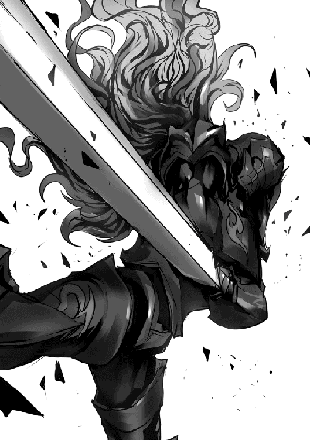
「隠し技《豪衝柄》!!」
咄嗟に剣を逆手に持ち替えて、自分の急停止のタイミングに凄まじい速さで懐に潜り込む騎士団長。
地面を力いっぱい踏み込み、自分の頭部へと思いっきり剣の柄の先を突き出してきたのであります！
ずるい！ 自分、その技教わってないのであります!!
兜を通り越して、衝撃が頭部に伝わり、そのまま数メートル吹き飛ぶ自分。
「そ、そこまでッ！」
隊長の合図が遠く聞こえるであります。
うぅ、頭がぐわんぐわんするであります......。やっぱり騎士団長は強いであります。また勝てなかったであります。
大分衝撃が引いてきた時、騎士団長から声をかけられるであります。
「だ、大丈夫かい？ エルザちゃん」
視界が広い、周囲の声も聞こえ方が違う、どうやら先ほどの技で留め具が壊され、兜が飛ばされてしまったようであります。
「自分は大丈夫でありますが、留め具が......っていうか騎士団長、さっきの技なんでありますか？ 自分あの技習ってないであります！ 教えて欲しいであります!!」
「あー、それは......ははっ。そういえば公爵夫人はどうして王城に来られたのでしょう？ なにか用事がありましたか？」
む!? 明らかに話をそらそうとしているであります！ そうはさせないであります!! 自分は......！
「あぁ！ そうだったわ、大臣様がさっきお取り込み中だったみたいだから、騎士団長さんから伝えてもらえるかしら？ お義父様、ディーボルト＝ラクトス様がご帰国なされるそうですの」
え!? お爺ちゃん帰ってくるのでありますか!!
確か今回は鍛治で有名な山岳の国に行くって言ってたから、もしかしたら新しい鉱石とか金属の話が聞けるかもしれないであります！ 今から楽しみであります!!
やれやれ、どうしてこうなってしまったのやら......。
私、アゾリアス王国騎士団騎士団長の目の前には、黒鉄の鎧に黒鉄の両手剣を構える重装騎士の姿。
重装騎士隊副隊長エルザ＝ラクトス。
若干十六歳でその地位まで上り詰めたその実力は疑いの余地無しだ。
それもそのはず、彼女の幼少期、普通の令嬢ならばドレスやアクセサリーなんかに夢中の年頃。彼女の父、グリード＝ラクトス執政殿の頼みで稽古をつけたのは、何を隠そうこの私なのだから。
『■■■■！ ■■■■■■■■■■■■■■■■■!!』
「......はは、気合十分じゃないかエルザちゃん。お手柔らかにたのむよ？」
本当にお手柔らかにたのむよ？ ちゃんと分かってる？ 私本気で言ってるよ？
彼女の騎士学校卒業試験以来の模擬戦だ。当時のままであれば、何もこんなふうに思ったりはしなかっただろう。
だって、当時はその黒鉄の鎧と両手剣、持ってなかったから。
今の状態だと、手加減してもらわないと負けるかもしんないし......。
「エルザー、頑張ってねぇー！」
『■■■■■■■■■!!』
やめて！ 公爵夫人!! これ以上エルザちゃんにやる気出させないで！ 彼女、戦いの才がずば抜けて高かったらしく、私の教える技全部おぼえちゃってるんだから！ しかも、あの理解を越えた重量と頑丈さを誇る鎧を身につけても、全然速度落ちないんだから！
そもそもなんで当然のように真剣で模擬戦なの!? 私、抗議したよね!? 模擬剣使おうって言ったよね!? エルザちゃん絶対手加減とか知らないでしょ!?
「よし、それじゃ準備はいいな？......はじめッ!!」
おい何勝手に合図してんだお前！ 準備はよろしくないですよ!!
くそぅ、これ無事に終わったら減給してやる！
『■■■■■■■!!』
「ッ!!」
咆哮しながら突撃してくるエルザちゃん。
やばい、超怖い。具体的に言うと、激昂した地竜より怖い。
おちつけッ！ とにかく受け流してカウンターだ。斬撃を通さないほど分厚い黒鉄といえど、衝撃は多少なりとも通るはず、関節部に衝撃を与えて武器を落とさせる、その後無力化だ！
いかに超重量の両手剣といえども、剣は剣。正確な太刀筋でなければ、上手く振るえない。
もちろん私の教えを受けただけあって彼女の太刀筋は正確無比。だからこそ、問題なく受け流せる。
そして、大振り故の大きな隙。すかさず肘関節部に衝撃を与えるように剣をお見舞いする......が。
なんだこれは！ 手応えが無い!? 関節部なのに、なんでこんなに分厚いのこの鎧!!
鎧の構造の問題かもしれないが、中まで衝撃が通った気配がない。
『■■■■■■■■!!』
唐突にエルザちゃんの両手剣が慣性を無視して停止する。これは......不味いッ！
急いで受け流しの体勢へ移行すると、嫌な予感が的中。まさかの二撃目が初撃と同じ速度で襲いかかってくる。
「ははっ、随分無茶をするじゃないか！」
本当、無茶苦茶だよ！ その両手剣何キロあると思ってんの、筋肉おかしくなるでしょうに！
......そうだ！ いくらなんでも負荷がかかるはず。二度目のカウンターでさっきと同じ場所にわずかでも衝撃が通れば有効打を与えられるはず！
その考えから、私は剣を正確に彼女の肘に打ち込む、が。
──あ、だめだ、全然衝撃いってないわ。
『■■■■■■■■■■■■!!』
「なっ!?」
え!? 嘘でしょ、また!?
再び慣性を無視した急停止から、私に襲い来る三度目の斬撃。
もう無理、いまから受け流しは間に合わない！ よけろ！ よけろ私!! 当たったら死ぬぞ!!
体を捻ってなんとか躱した私だったが、眼前を黒鉄の塊が猛スピードで通り過ぎ、剣を振るって生じたものとは思えない風圧が襲い来る。
あ、違うわ。これ掠っても死ぬわ......。そして悪い予感。
『■■■■■■■■■■■■■!!』
何度も左右から襲い来る圧倒的な破壊力。間近で吹き荒れる嵐のような風圧。迂闊に距離を取ることもままならない。
とはいえ、私にも騎士団長の意地がある。されるがままなのは何とも格好がつかない。
そう考え、必死にカウンターを当て続けてはいるものの、やはり効いている様子がない。
そして、何故かどんどん早くなるエルザちゃんの斬撃。やばい、もう疲れてきた......。
かといって、模擬戦といえど降参などできない。私はアゾリアス王国騎士団の騎士団長。この役職にある内は、敗北など許されない。
何より、まだ死にたくない！ 来週は娘の社交界デビューの日なのだ!!
「ッ......こうなっては仕方ない。私にも立場があるからね、悪く思わないでくれたまえよ！」
エルザちゃんの斬撃に合わせて、後退して回避。剣を逆手に構え、鍔をもう片方の手で固定。急停止のタイミングに合わせて踏み込む。渾身の力で大地を踏みしめる。そこから、思いっきり、頭部を狙って突き上げる。
「隠し技《豪衝柄》!!」
刃を使わぬが故の隠し技。
一応剣術ではあるが、騎士の技ではないため、騎士団で教えられることはなく、知る者の少ない秘技。
そしてなによりも、一切手加減ができない、敵を殺すための技。
その一撃をモロに食らったエルザちゃんは超重量の鎧を身にまとっているにもかかわらず、数メートル吹き飛ばされる。
「そ、そこまでッ！」
重装騎士隊の隊長が、決着の合図を告げると、私のもとへ駆け寄ってくる。
「あ、アンタ何やってんだよ!? モロに入ったぞ。おい！ エルザを殺す気か!?」
その言葉に、ふと我に返る。......やばい、殺っちゃったかも。
急いで倒れている彼女のそばに駆け寄る。
「だ、大丈夫かい？ エルザちゃん」
エルザちゃんの兜は先ほどの技で留め具ごと吹き飛んでしまったようで、強気な印象を受ける素顔が露わになっていた。
つり目がちな大きな瞳を、二度三度瞬きさせる。
よ、よかった。生きてる......。いや、よかったけど、なんで生きてるの？ 首をへし折る技を食らって気絶すらしてないって、君は本当に人間なのかな？
「自分は大丈夫でありますが、留め具が......っていうか騎士団長、さっきの技なんでありますか？ 自分あの技習ってないであります！ 教えて欲しいであります!!」
なぜか無傷の彼女が先ほどの技について追求してくる。
......まずい、彼女がこの技に興味を持った。
重装騎士隊長の様子をチラッと窺うと、ものすごい勢いで首を左右に振っている。
それはそうだ、隠し技であるということを差し引いても、彼女がこの技を身につけてしまったら手がつけられない。
彼女の怪力、黒鉄の鎧の重量による強固な支え、黒鉄の両手剣の柄の硬度と重量。多分、竜の頭位なら吹き飛ぶ。
なんとか話をそらさなくては！
「あー、それは......ははっ。そういえば公爵夫人はどうして王城に来られたのでしょう？ なにか用事がありましたか？」
我ながら苦しいかと思ったが、エルザちゃんが何か言う前に、公爵夫人が思い出したように用事の内容を話し出す。
よかった、このまま有耶無耶に......。
「あぁ！ そうだったわ、大臣様がさっきお取り込み中だったみたいだから、騎士団長さんから伝えてもらえるかしら？ お義父様、ディーボルト＝ラクトス様がご帰国なされるそうですの」
......はい？ え、ディーボルト様？ 《戦争の英雄》？ 《宵闇の魔導王》？ 来るの？ なんで？
「ジェイクがお見合いするから、それに合わせていらっしゃるんですのよ。今週中には到着するようにするっておっしゃってましたわ」
「え!? 兄上がお見合いするんでありますか!?」
そっちじゃないよエルザちゃん！......いや、そっちもびっくりだけどね、嘘、ホントに来るの!? っていうか、今週中!?
やばい、今すぐ陛下に伝えないと......！
余はアゾリアス国王・レオン＝アゾリアス。余の足は今、痺れておる。
大臣のせいである。
いや、まぁ、息子のアルトに執政の噂について、きちんと話をする事を忘れていたのは悪かったとは思っているが......。
それにしたって、余は国王なわけよ？ 大臣が余を地べたに奇妙な座らせ方させて、説教するっておかしくね？ なんか口調も怖かったし......。余はこの国の王様よ？
まぁ、とにかくそんな経緯で足がしびれておる余は、忘れぬうちにアルトに執政の真実を伝えるべく、ここ、玉座の間に呼び出すことにしたのである。
──しばらくして、玉座の間の扉がノックされ、アルトが従者を伴って入室してくる。
「陛下。第一王子、アルト＝アゾリアス、只今参りました」
「うむ、よくぞ来てくれた......実はお前に伝えておかなければならんことがあってな」
余がそう切り出したところで、なにやら騒がしい足音が玉座の間に近づいてくる。
声を荒げている騎士団長の声を伴って。
「陛下！ 陛下ッ!! 大変です陛下ッ!!」
「......どうしたのだ、騒々しい」
ノックもせず入ってくる騎士団長。
もう、なにそんなに慌ててるの？ 余は今からアルトに執政の説明をしないといけないのに、忘れちゃったらどうするのよ。
「ディ......ディーボルト様が帰国なされます!!」
「......え？ マジで？」
やべ、びっくりしすぎて素が出ちゃった。
──ディーボルト＝ラクトス。
現グリード＝ラクトス執政の実父にして、アゾリアスの戦争の英雄。
日の差していない状況下においては、彼一人で世界を支配出来るとまで言われた、《宵闇の魔導王》。
彼の姿を戦場で確認した途端、敵対国が降伏してきたという、嘘のような本当の逸話をもつほどの実力者。
他にも、《魔導王》の称号をもつ一人、《雨天の魔導王》をあらゆる点で凌駕したため、彼含めて五人いた魔導王を四人にしてしまったとか、一睨みしただけで精神崩壊させたとか、とにかくとんでもない逸話をいくつも持っている。その力故に、あらゆる国に所属することを許されず、各国を転々としなければならなくなった圧倒的強者。
ぶっちゃけ余よりも遥かに強い。っていうかファンです。握手してください。
いや、じゃなくて......！
「いつ、来るのだ？」
「ラクトス公爵夫人の話だと、今週中には、とのことです」
こ、今週中!? 前述のとおり各国を転々としなければならないディーボルト殿は、無論幾度と彼の故郷である我が国に滞在することもあったのだが、滞在日程は各国のトップによって厳密に決められており、急な滞在が決まった場合でも準備期間として一ヶ月は猶予があるはずなのだが。
「な、なにしに来るのだ......？」
「それが、ディーボルト様のご令孫、ジェイク君がお見合いをするそうで、それに合わせていらっしゃると......」
え!? ジェイク君お見合いすんの!? マジで!?
いやいや、そんなことより今週中って、戦争の英雄を出迎える準備期間としては短すぎるでしょうに！
あわ、あわわわ！ 早く大臣に知らせて......！ あと、全騎士団員に通達して、帰国パーティーの準備も......！
「あ、あの、父上？ ディーボルト様がいらっしゃるのですか......？」
アルトが動揺している様子で余に尋ねてくる。......うん？ なんでアルトがここにおるの？ あ、余が呼んだんだった。なんで呼んだんだっけ？
......まぁよい！ 今はそれどころではない！
「そのとおりだアルトよ！ 出迎えるための準備期間が短すぎて間に合うか分からぬ！ お前も手伝うのだ!!」
「わ、分かりました！ では俺......っ私は大臣に伝えてまいります!!」
慌てて部屋を飛び出すアルト。
「騎士団長も各騎士隊に伝えよ！ 大至急だ！」
「ぎょ、御意！」
我が国の英雄をもてなすのに不備があっては国家の恥。なんとしても間に合わせねば！
......なにか忘れている気がするが、まぁ英雄の帰還より重要なことではないだろう。
あ、理髪師呼ばなきゃ！
ある日のアゾリアス王城の一室、騎士団長室に併設されている、騎士団会議室。
戦時の戦略会議や討伐遠征の日程会議等に使われるこの部屋には今、騎士団のトップである騎士団長を筆頭に、軽装騎士隊長、重装騎士隊長、特装騎士隊長、護衛騎士隊長の五名が揃って机を囲んでいる。
行われているのは定例の騎士団会議である。
「そうだね、この日程ならば、王都の警備も問題ないだろう。」
「では、今後の討伐日程は以上ですね。ほかに何か議題ってありましたっけ？」
騎士団長の承認を受け、続けてそう問いかけた、若々しい美男子といっても良い容姿の軽装騎士隊長。
その問いかけに、この中では一番の高齢、長くのばした白いヒゲが特徴的な、特装騎士隊長が発言する。
「そういえば、現在空席の副騎士団長。いい加減誰にするか決めたらどうかの？ もう八年以上空席ではないか」
「なら爺さんがやればいいだろうが。最年長だし、アンタだったら誰も反対しないぜ？」
ぶっきらぼうな物言いでそう返すのは、強面のチンピラの様な男性、重装騎士隊長である。
「ワシはもう引退を待つだけの老いぼれじゃ。いまさら副団長など、何年も持たぬわい......そういうお主こそ副団長になるべきではないかの？ 重装の」
「やめてくれよ！ こっちは厄介な副隊長を抱えてんだ。俺が重装騎士隊長やめたら、隊が動かなくなっちまう！ 軽装のがやればいいだろ？ 後継者だって決まってるようなもんだろ。なんだったか、ゼンだかゲンだかいうヤツ......」
「相応の実力はありますが、彼はまだ未熟。もうしばらくは、僕が導かねばならないでしょう。護衛隊長はどうです？」
全員の視線が、スキンヘッドの筋骨隆々の大男、護衛騎士隊長に集まる。
「......拙者、やりたくないでござる」
分かってはいたが、ものぐさな言い分に、お手上げのジェスチャーを取る重装騎士隊長。
「まぁ、やりたくない者に任せていい役職ではないからね。どうしても副団長が必要というワケではないから、しばらくはまた保留かな？」
騎士団長がそう言って、会議を締めようとするが、重装騎士隊長が何か思いついたように、あくどい笑みを浮かべて会話を続ける。
「そうだ！ ウチの副隊長、エルザ＝ラクトスを副騎士団長にしちまおうぜ!!」
「え？ ちょ、なにを言って......」
突然の提案に、焦ったような声を出す騎士団長。
「......確かに彼女の実力は、疑うことなく認められるものですよね。僕としては、彼女でも問題ないと思います」
「いや、でも彼女はまだ十代の娘でだね......？」
「ワシも賛成じゃ。若いとはいうが、なぁに歳なんぞ関係ないわい。騎士団は実力主義。飛び級で騎士団入りしたんじゃろ？ なら問題ないと思うがの」
「拙者は、拙者以外なら誰でも良いのでござる」
軽装騎士隊長に続くように、重装騎士隊長の提案に賛成する、特装騎士隊長と護衛騎士隊長。
「いや、しかしだね......」
「よし！ コレは決定だろ!? これで俺も厄介払......ウチから副団長が選出されるなんてとっても名誉だなぁ!!」
「重装隊長......！ 君は......!!」
騎士団長の感付き通り、重装騎士隊長は、色々と問題のある同副隊長、エルザ＝ラクトスをこの期に騎士団長に押し付けようとしていた。
「まさかこの賛成多数の中、あーだこーだと御託ならべて拒否したりはしねぇよな？ 団長殿」
「ぐぬぬ......！」
この会議室にいる騎士団長含む各隊長は、現在騎士団長に押し付けられようとしている彼女、エルザについては多少なりとも聞き及んでいる。その常識はずれな戦闘力と、それに伴うあれやこれやの騒動についてだ。
自分の隊員に及ぶ影響のことを考えれば、直属の部下のいない副騎士団長に彼女を据えるというのは、特に出世欲のない各隊長にとって、理想の形なのである。
もっとも、全ての負担が騎士団長に行くわけで、当人、現騎士団長はたまったものではないだろうが。
「いや......そう、実はね、私もちょっと考えていたことがあるんだよ」
顔を伏せていた騎士団長が、おもむろに立ち上がり、着席している各隊長の周りをゆっくりと歩く。
「この間、今話に上がっているエルザ＝ラクトスと模擬戦をしてね、実感したんだよ......私ももう歳だな、と」
急にどうしたのだと、訝しむ各隊長。
「後半は彼女の剣を反らすことすらままならなくてね。ひたすら回避に専念してしまったよ」
騎士団長は、その歩みを重装騎士隊長の背後で止めると、彼の肩に手をかける。
「だから、そろそろ引退しようと思っていてね。......あとのことは君に託そうと思っているんだ。重装騎士隊長、いや、次期騎士団長......！」
「なっ!?」
唐突な騎士団長の引退宣言と、次期騎士団長の指名。
重装騎士隊長が驚きの声を上げて抗議する。
「ま、まてよ！ 俺なんかが騎士団長務まるわけねーだろ!? 引退して後釜に着くってんなら......軽装の、お前が一番ふさわしいだろ？ だよな!?」
「なっ、なにを言ってるんですか！ 僕はあなたに勝ったことないんですから、ここは僕よりもお強い貴方が騎士団長になるべきだと思いますよ！ 実力主義的に考えて!!」
「じ、実力で言ったらアレだよ！ 特装の爺さん!! あんたがやるべきだろ!? 《熟練の老騎士》まさに騎士団長にふさわしいじゃねーか！ な？ 《不敬上等》にゃ荷が重すぎるって!!」
「あぁーばぁさん、めしはまだかのぅ？」
「なにボケた振りしてんだクソ爺!!......なぁ、護衛隊長お前」
「絶ッッッ対に嫌でござるッッッッッ!!」
「声がでけぇ!! しかも食い気味！ そんなに嫌か!? なぁ、よく考えろって、騎士団長だぜ？ 最強の騎士の称号をそんな簡単に......」
「大丈夫、君なら最強の騎士になれるよ！ ガンバ!!」
「騎士団長......テメェ......ッ！」
「おいおいよしてくれ、私は元騎士団長だよ。騎士団長は君さ......！」
「ハハッ、ハハハハ......」
逃げ場を失った重装騎士隊長の乾いた笑いが会議室に響き渡る。
笑い声が止むと、数秒の沈黙が訪れる。
「おいおい、マジになるなって。ジョークだよジョーク。エルザに副騎士団長なんて務まらねぇって。あいつ想像以上に馬鹿なんだからよ」
「ははは、分かっているよ。さすがに彼女は若すぎる。......あ、もちろん私が引退するといったのもジョークだよ？ まだまだ現役さ」
「全く、お二人共会議でジョークなんてやめてくださいよ。僕、少し本気にしてしまいましたよ」
「そうじゃぞ？ 仮にも騎士団の会議なのじゃから、悪ふざけはよくないのう」
「......拙者は冗談でなくても構わなかったのでござるがな」
会議室に五人の笑い声が響き渡る。
「ハハハ......ところでよぉ......」
声だけ笑っていた重装騎士隊長が、再び表情を真剣なものに変える。
「エルザの装備、アレ重装騎士の域超えてねぇか？ 特装騎士隊に異動させたほうがいいと思うんだけどよぉ......」
「ぶふぉっ!? じゅ、重装のッ！ お主というやつは......!!」
騎士団会議は踊る。
アゾリアス王国領内の街道を走る強固な馬車の影が一つ。
その周りを、アゾリアス王国騎士団・護衛騎士隊が少なく見ても二十名以上周囲を警戒するように取り囲んでいる。それも尋常ではない、警戒の仕方だ。どう見てもただ事ではない。それもそのはず、彼らは決して失敗の許されぬ任務の最中なのである。
馬車の中の人物は王族か？ 違う。
彼には血筋による地位などない。それどころか、どの国にも所属していない一人の老人。それでも誰ひとり、彼をないがしろになどできない。
──彼の名はディーボルト＝ラクトス。
数多の勲章に彩られた漆黒のローブを身に纏っている彼の容姿は威厳に満ちている。
前頭部こそ禿げ上がってはいるものの、その頭髪は年老いてなおツヤのある黒から赤へのグラデーションで、背中も齢七十になろうというにもかかわらず、曲がることなくまっすぐと伸びている。
顔には深くシワが刻まれているものの、黒い瞳は輝きを失っておらず、猛禽類のように鋭い。
彼は戦争の英雄、魔導師の頂点、《宵闇の魔導王》と呼ばれる存在である。
数十年前、大陸全てをも巻き込む大戦争、まさに戦乱と呼ぶにふさわしい情勢で彼はアゾリアスの魔導戦隊として名を上げた。
......いや、伝説を創ったと言っても過言ではない。
彼は強すぎた。強いという言葉でも足りないほど強すぎた。
故に、戦争が終結し、平和が訪れた時、彼は全ての国に問題視された。
彼は一国が預かるには大きすぎる存在だった。
新たなる戦争の火種になりうると判断された。
そして、かつてないほどの規模の会議が行われ、その場で国を失った。
誓約・契約魔導師を十数名も用いた、決して破ることのできない枷を付けられて......。
とはいえ、万人に恐れられる《宵闇の魔導王》は、アゾリアスにとってはまさに英雄。彼がいなければ、アゾリアスの国土は現在の三分の一程度もなかったと言われるほどだ。
そんな彼をないがしろに出来るはずがない。現国王ですら呼び捨てにすることが敵わぬ存在。
──馬車の中、暇を潰すようにただただ窓からの風景を眺めていたディーボルトが、不意に視線を御者の背に向ける。
そして一言。
「......安らぎの地への旅路は未だ遠きかな？」
「は、はっ......な、なにかおっしゃいましたか？」
御者は警戒しすぎ、緊張のあまりに迂闊にも彼の言葉を聞き逃した。
たとえ聞くことができても、御者にディーボルトの難解な表現は伝わらなかったであろうが、それでも、聞き逃してしまった。
御者の体を嫌な汗が伝う。心臓の鼓動が止まっているように感じた。
特に気にした様子もなく、視線を横にそらすディーボルト。あまり気にしていない様子に、御者はホッとした。
そこで自分の心臓が激しく脈動しているのに気づく。
まるで全力で、驚異的な魔物から逃走した後のように息が荒くなる。
「......リノア」
御者に興味を失ったように、ディーボルトは隣に座っている女性に話しかける。
難解な表現によるやり取りが行われているようで御者には理解できない。おそらく魔導関連の会話であろう。
彼、ディーボルトが会話をしている女性もまた魔導師であるのだから。
──彼女は、《氷塊の魔女》《宵闇の弟子》《永遠の冬》。名を、リノア＝ヴェールという。
戦争終結間際、ディーボルトに師事し、その後も彼に付き従う、次期魔導王候補と名高い女性である。
高い魔導適性と、氷結の魔導特性を持ち、誰とも結ばれることなく、人生を魔導に捧げる、努力する天才。
彼女がディーボルトの弟子でなければ、どの国もが彼女を手に入れようと画策するだろう。
と、唐突に、馬車内の温度が下がる。
「ディーボルト様？」
リノアがなにかに気づいたように師匠、ディーボルトに声をかける。
「......む？」
ディーボルトもまた、何かを察知したように目を細める。
視線はどこか遠く、まるで馬車の中にいながら、馬車の外を見渡すように。
「御者、馬車を停止せよ」
唐突に告げられた停車命令。御者ごときが逆らえるはずもなく、すぐさま馬車は停止された。
──馬車を停止させ、外へと出るディーボルト。
護衛騎士の一人が、何事かと訪ねに来るが、視線を合わせず人差し指をかざし、制止する。
今度は、先程までと違い、見開くように瞼を広げ、瞳孔に魔力を集中させるディーボルト。それに倣うように、リノアも続く。
「......何と視える？」
「人型......目測で大きさは三メートルほど、青い肌......腐敗しているようです。おそらくアンデッドハイオークかと」
二人の会話に、護衛騎士達がざわめきだし、二人の壁になるように周囲に警戒を張り巡らせる。
彼女の言った《アンデッドハイオーク》とは魔物である。
それは、死操蟲と呼ばれる、白骨化していない動物の死体に寄生し、対象を操る魔物にとりつかれた、通常のオークよりも強力な、オークの亜種のことだ。
ただのハイオークであれば、アゾリアスの屈強な騎士隊が後れを取ることなど万に一つもない。しかし、アンデッドとなれば話は別である。
なにせ、怯むことがなく、本来弱点となり得る部位への攻撃が有効ではなくなるのだ。頭を潰したとしても、胴体を真っ二つにしたとしても動き、襲ってくる。
負けることはないにしても、数名の負傷者は覚悟せねばならないだろう。
必死に索敵する護衛騎士隊。だが、魔物の姿は確認出来なかった。
「うむ、相違無し。街道に陣取っておる。......まぁ、人でないと分かればあとはどうでも良いのだがな」
気のせいだろうか、いや、気のせいであって欲しい。御者含む、護衛騎士隊の面々は、ディーボルトが、相手が人間でないことに落胆しているように感じた。
右腕をゆるりと上へ向けるディーボルト。魔導適性の低い者でも見える程の、濃密な魔力の靄が立ち上る。
......《宵闇の魔導王》が影魔導を行使している。
どこからか、息を呑む音が聞こえた。
「どうだ？」
しばらくして、ディーボルトが、上げていた右腕をゆっくりと下ろすと、リノアに尋ねる。
「絶命確認いたしました」
普段の威圧するような、恐怖を与えるような、難解な言葉遣いとは違う、戦場でのやり取りであった。
冷静に敵勢力を分析、パートナーとのツーマンセルで状況を正しく判断。敵を殺し損ねるというミスをなくすためのやり取り。軍事教本に書かれていること、それの優秀なお手本といった風だった。
──ディーボルトとリノアが馬車の中に戻り、再び護送を開始して数刻。
距離にして五百メートルは進んだであろう頃、街道の端に、腐敗したハイオークの死体を確認した。
その死体は、何か鋭いもので、関節部、重要な筋が的確に貫かれていた。アンデッドとなった魔物に対する、最も有効な処理であった。
いくらアンデッドとはいえ、動かせる箇所が無ければただの動かぬ死体である。
そう、ディーボルトは、肉眼で捉えることの難しい距離にいる魔物を馬車の中で感知し、その距離から対象の魔物を適切に駆除していた。
「......お見事」
護衛騎士隊の一人がそう呟いた。
この任務についていた誰もが感じた。戦争終結後に生まれた、戦乱を知らぬ若い騎士もだ。
ディーボルト＝ラクトス。《宵闇の魔導王》。彼の逸話、伝説は、決して劇やおとぎ話、小説の中の空想ではない。彼の武勇を誇示する、過剰に装飾されたものでもない。
彼こそが真の《戦争の英雄》。畏怖と尊敬に値する最強の魔導師。
何者も恐れず、常に冷静......そして冷酷、無敵であると。
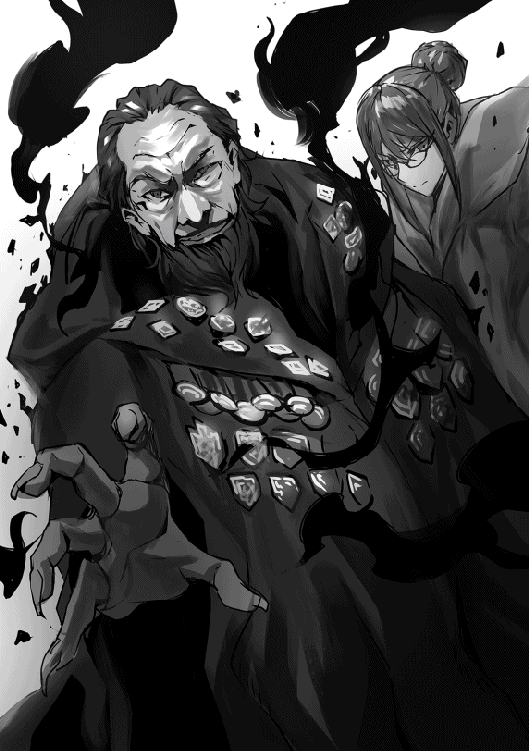
アゾリアス王国領土内、王都へと向かう強固な材質製の馬車の中。
我、ディーボルト＝ラクトスは現在、諸々の事情で留まる事ままならぬ我が家への帰路についておる。
馬車の周りに、我を護衛するための護衛騎士隊を数十名引き連れて。
我は故郷、アゾリアス王国にて、《宵闇の魔導王》の二つ名とともに《戦争の英雄》などと呼ばれ、敬われておる。......しかし、それと同時に恐れられてもおる。
現に、我の乗っている馬車を囲むように配置されている護衛騎士の半数は、襲撃よりも、我のことを警戒しておるようだ。
......そんなことせんでも、凶行に及んだりせんというに。
我が戦争にて多大なる戦果を収め、その後戦争が終結した際の話だが、いつまで続くか分からん平和を少しでも長く保つため、そして何かのきっかけで我の強力すぎる魔導の力が、新たなる戦乱の火種にならぬようにと、誓約、契約魔導師十数名を用いての、大陸の全国家と我のとある誓約がなされた。
一つ、全ての国家は、ディーボルト＝ラクトスを軍事利用せぬ事。
一つ、ディーボルト＝ラクトスはあらゆる国に所属せず、また、協力関係を築かぬ事。
一つ、全ての国家は、ディーボルト＝ラクトスを利益目的で束縛せぬ事。
一つ、ディーボルト＝ラクトスは自らの命が危険に晒された時以外、人間に不利益、又は傷害をあたえる目的の魔導の行使をせぬ事
一つ、ディーボルト＝ラクトスを脅迫する目的で、アゾリアス王国内のラクトス公爵家に名を連ねる者を害せぬ事。
誓約対象者、各国の上層部及び、ディーボルト＝ラクトスが上記の誓約を破りし場合には、死の契約をもってして、厳罰に処する。
ディーボルト＝ラクトスの死によってのみ、この誓約・契約は破棄される。
......ほかにも細かい条件が幾つかあるが、大まかには以上と言える。
そういう誓約、契約が行われておるため、我はもう人を傷つけるための魔導は使用できぬのだ。
というか、使用しなくて良くなったのだ。
我が現役の頃は、それはもう戦争、戦争、また戦争でとんでもない戦乱の世だった故、国を、そして家を守るため、才のあった魔導を用いて、多くの敵を手にかけてきたが、元々我はあまり闘争を好まぬ。
恐怖される一因であるこの威圧するような声色、言動も、戦乱に必要だったから無理やり矯正したのだ。
これも、随分と馴染んでしまったせいで矯正前の口調に戻らなくなってしまった。
まぁこの誓約、我の身を守るため、各国の上層部くらいしか詳細を把握してないから、彼らの警戒も已む無しではあるがな。
──それにしても。
護衛しながらだから仕方ないのかもしれぬが、ちょいと馬車遅すぎるよー？ 我、早く孫たちの顔が見たいのだがー？
ジェイクがお見合いするっちゅーから、我は急遽アゾリアスに向かっとるのに。これちゃんと間に合うのか......？
「......安らぎの地への旅路は未だ遠きかな？」
「は、はっ......な、なにかおっしゃいましたか？」
むむ、御者をしている男性に、目的地までの時間を問うてみたが、やはり通じぬ。
ふふーん。だがしかし、我にはとても優秀な従者がおるのだ。我の言葉が通じぬ時に通訳してくれる者がな！
「......リノア」
その従者の名を呼び、通訳するように目で促す我。
視線の先の彼女は、リノア＝ヴェール。
齢は、おおよそ三十後半、上級魔導師のローブで身を包み、表情の変化に乏しく、その瞼は刃のように鋭い。
服装からも分かるとおり、魔導に生きる者。従者とはいったが、実質我の弟子の様なものなのだ。
そして、我が息子グリードの妻、リリアナちゃんの実姉でもある。全然似てないけどな。
そんな彼女が口を開き、御者に我の言葉を分かりやすく通訳するかと思っていると、思いもよらぬ冷たい言葉が返ってきた。
「......申し訳ありませんがディーボルト様。黒き意にて魂が拒み渦巻くのです」
え、なんで拒否るの？ しかも我の言葉で......。
あ、アレだな。我がグリードから送られてきたギョクロなる外国の茶の残りを一人で全部飲んでしまったのをまだ根に持っておるのだなこやつ。
仕方ないだろう、あれ超うまかったんだもん。一緒に送られてきたセンベーとかいう塩っぱくて硬いクッキーはあげたじゃん。心の狭いやつよのう......。
「まだ、憤怒の心が静まらぬか、強固なる塩の円盤では足りぬと？ だが新緑の小さき泉は我の物なるぞ？」
「......」
あ、こやつ無視しおった。ホントに心の狭いやつよ。穏やかおっとりなリリアナちゃんとは大違いよのう。我が思うにそんなんだから、未だに独り身で......。
「静寂無きなら深淵へと誘わん......よろしいんですか？」
「我が真意、其処に無し」
「かしこまりました......」
なにこの子、怖っ。我、声に出してなかったのに......。
っていうか主兼師匠に対して黙れとか殺すとか、そういうところも独......。
「ディーボルト様？」
やべぇ、リノアさん我にマジギレしておる。言い知れぬ寒気が我を襲って来おる。
なんとか有耶無耶にせんと、孫に会う前に我が命が......！
「......む？」
おっと、ちょどいいタイミングで我が探知魔術が何かを捕捉したようだ。
一時の方向、五百メートル。邪な気配。大きめだのう......。
「御者、馬車を停止せよ」
──馬車を停止させ、外へと出る我。
護衛騎士の者が何事か訪ねてくるが、それを制止し、遠見の魔術で対象を目視する。
「......何と視える？」
我の隣に並び立ち、同じく遠見の魔術を行使しているリノアに確認を取る。
「人型......目測で大きさは三メートルほど、青い肌......腐敗しているようです。おそらくアンデッドハイオークかと」
「うむ、相違無し。街道に陣取っておる。......まぁ、人で無いと分かればあとはどうでも良いのだがな」
人であった場合、待ち伏せの盗賊だとしても、明確な殺意を向けられぬとあの誓約に引っかかってしまうからな、邪魔だしここで駆除しておくとするか。
右腕をゆるりと上へ向け、影魔導にてオークの影を操る。
先端を鋭くした影の針を数十本造り、下から突き上げるように串刺しにする。
遠見でもがき苦しむオークを視認。次第に動きが緩やかに、静止していく。
「どうだ？」
「絶命確認いたしました」
よし、駆除完了。そして、有耶無耶にすることにも成功。
ふふ、我の鮮やかな手際には自身でも感服の──。
「ディーボルト様」
「む？」
「忘却無き故に......」
ジェイク、エルザ。お爺ちゃんもうダメかも。
やぁ！ 私はラル＝ニゼットだ！
今は執政補佐という立場にいるが、昔は魔導学院で教鞭をとっていたこともあるんだよ。
親しみを込めてラル先生と呼んでくれると嬉しいね。
え？ 教鞭ってなにかって？
......学校で先生をしていたってことだよ。
えっと、よ、よし気を取り直して、さっそく魔導についてお勉強しよう！
──まずはじめに、魔力と魔導適性について。
みんな知っての通り、魔導師は魔力を使って魔導、魔術を行使するんだ。
この魔力っていうのは、全ての人間の血中に等しく存在している粒子......小さな粒なんだよ。これを皮膚から体外に放出して炎や水の魔術として構成したり、体内から特定の箇所......たとえば腕とかに集中させて強化魔術として行使したりするんだよ。
コレができて初めて、魔導の道の第一歩だ。
さて、僕は先に「全ての人間が魔力を持っている」と言ったね？
でもなぜ、魔導師とそうでない人がいるのか。気になったんじゃないかな？
その答えは簡単、《魔力の量》の問題なんだ。
体内の魔力の量が足りないと、術式で放出しても霧散するだけ、体の一部に集中させても強化はされないんだ。
じゃあ魔力が少ない人は絶対に魔導師になれないんじゃないかって？ 心配無用！ 体内の魔力は鍛錬すれば増やすことができるんだ！
だから魔力が生まれつき少ないからって、魔導の道を諦める必要はないのさ！
まだ立証されてないけど、食生活を改めることで魔力量を増やせるかもしれない、という仮説もあるんだよ！
魔導師を目指す良い子のみんな！ 好き嫌いはダメだぞ！
あー......うん、玉ねぎも頑張って食べようね。
......でも、魔力には生まれつき《多い、少ないの差》というものがある。
これが所謂《魔導適性》と言われるものなんだ。
簡単な話、生まれつき多くの魔力を体内に保有している人が、魔導適性の高い人と言われているわけだね。
残酷な話ではあるけれど、どんなに努力しても、魔導適性のある人とない人で、どこまで魔導の道を進むことができるかには差が出てきちゃうんだ。
こればっかりは、魔導に限らずほかのことでも言えることだから、割り切って自分なりの魔導を探求する他ないかもしれないね。
さて次は、魔術と魔導についてだ。
私は先ほど「魔力で魔導・魔術を行使するのが魔導師だ」と言ったね？
じゃあここで、《魔術》と《魔導》の違いについて説明していこうか！
あ、ここで注釈だよ。《魔導》にはいくつか意味がある。
一つ、魔力をもって行使する《魔導》。
一つ、魔力に関する現象としての《魔導》。
一つ、魔力の行使を極める行いである《魔導》。
大体はこの三つかな。
他にも細かい定義みたいなものがあるんだけど、それはまたの機会だね。
今回は『魔力で行使する魔導』についてだよ。
魔術と魔導、どちらも魔力を使って行使するものなんだけど、この二つの違いは、簡単に言うと《技術》と《才能》の違いなんだ。
魔術っていうのは、魔力があって、術式を頭の中で構築できれば行使できる。要は、鍛錬をして魔力を鍛え、講義で術式を学べば誰にでも使える技術なんだけど、魔導は違う。
魔導は才能のある者にしか使えない。特別な魔術っていう認識で問題ないかな。
......そうだ。ここで、魔導においての《才能》の定義について説明しておこう。
魔導において才能というのは、『その条件、工程、原理などが不明であるが、感覚的に使えてしまうもの』を指しているんだ。
例えば、ジェイク君の《影魔導》。実際、影を操る魔術というものは現時点で存在しない。なのにジェイク君は魔力を使って影を操ることができている。
それはジェイク君に、《影魔導特性》という《才能》があるからなんだね。
はは、そうだね。《魔導適性》と《魔導特性》言葉は似ているけど、全く違うものだから、間違えないように気をつけないといけないよ。
魔導適性は有るのに、魔導特性がない。もしくはその逆で、魔導特性は有るのに、魔導適性がない。ということもよくあるんだ。
ん？ 《炎の魔術》があるなら《炎魔導》は意味がないんじゃないかって？
いいところに気がついたね！ いい質問だ!!
ここからが魔術と魔導のもう一つの違い。
同じ属性でも、魔術は術式を通してどういう原理か理解できる程度の操作しかできないんだけど、魔導は理解を越えた操作ができるんだ！
魔術でもある程度指向性を持たせることができるんだけど、魔導のそれは比較にならない。炎の魔術で敵を追尾する術式を構築することもできるけど、魔術ではそれくらいが限界なんだ。
でも炎魔導は違う。一番有名な炎魔導の特性持ち、かの有名な《獄炎の魔導王》レベルになっちゃうと、炎で切れ味まで再現した大鎌を作製しちゃったりするんだ！
うん？ 魔導特性がない、魔術しか使えない人は《魔導師》とは呼ばないんじゃないかって？
またまた鋭い質問だねぇ！ どうしたの!? 今日は絶好調じゃないか!!
《魔術》と《魔導》の違いは、《技術》と《才能》の違い。
魔導において才能というのは、『その条件、工程、原理などが不明であるが、感覚的に使えてしまうもの』......私はさっきそう言ったよね？
つまり、魔導に関係する解明できない現象......才能を持つ者は、『魔導特性がある』と言えるのさ。
......《魔導特性》があるから《魔導師》。
そう、魔導師......いや人間全てが持っている魔導特性があるんだ。
それは《魔力回復魔導特性》。これが先ほど言った魔導の別の意味。『魔力に関する現象としての魔導』にあたるわけだよ。
魔力は放出するとその分体内の魔力は消費される。でも、魔力は一時的に枯渇しても、生きている限り無くなってしまうことがないんだよ！
食事をとったり、睡眠をとったり、時間の経過なんかで、魔力は再び体内に発生するんだ！
そして、なぜ体内で魔力が発生するのか、これが全く解明されていない！ 原理も分からない！ かろうじて条件が仮説として出ているだけなんだよ！
よって、魔術で魔力を消費してもなぜか魔力が回復してしまう術者は総じて『魔導師である』と言えるんだねぇ!!
まぁ、意識して行使出来ないから魔導特性とはいっても、これしか特性を持ち合わせていない人は、魔導特性を持っていないと言われるんだけどね。
これの原理が解明されたら世紀の大発見だよ。うん、教本に載るレベルだね。まぁそうなったら多数の魔導師は魔術師という名称に変わってしまうんだけどね。
──そうだ、ここらで一つ、豆知識でもどうかな？ 呪文の詠唱についてだ。
魔導を志す者は大抵、絵本やお芝居なんかで、魔導師が呪文を唱えているのを見て魔導師に憧れを抱くものなんだけど......。
実際の魔導師は『呪文の詠唱』みたいなことはしていないよね？
錬金や魔導機作製なんかの例外はあるけど、魔術っていうのは基本的に頭の中で術式を構築しないといけないんだ。だけど、いきなり術式を暗記はできないよね。
そこで呪文の出番だ。呪文自体に特別な力はないんだよ。
呪文っていうのは術式を構築するための補助、まぁ歴史の年号の語呂合わせみたいなものなんだ。
もう一つ例えるならば......そうだね。詠唱しながら行使する魔術は《筆算》。無詠唱で行使する魔術は《暗算》、って言うと分かってくれるかな？
二桁の掛け算を回答する時なんかは、わざわざ紙に書くよりも暗算したほうが早く答えられるだろう？
......え？ 嘘でしょ？ 君はよく騎士学校を主席で卒業できましたね？
鎧に置き換えればいける？......そう。
まぁ、そういうわけで詠唱っていうのは、一番最初の術式の記憶以外ではあんまり使わないね。
中にはかっこいいから無詠唱でも出来るけど、それっぽくアレンジして唱えたりとか、頭で構築している術式とは違う詠唱を行って動揺を誘う、なんて器用なことする人もいるんだけどね。
「──さて、どうだったかなエルザちゃん。魔導の基本について、分かってもらえたかな？」
「分かったのであります！ つまりどんな魔導師でも自分の鎧の敵ではないってことであります!!」
「......うん、はは。もうそれでいいや」
■月■日。
急遽来訪された、ディーボルト＝ラクトス様の凱旋式典が行われた。
凱旋式典の内容は、概ね例年通りではあったが、今回もまたその内容について詳細に掲載させていただこうと思う。
──まず、アゾリアス王国の国境に訪れたディーボルト様は、我が国の護衛騎士隊の警護する、護送馬車にて王都を目指される。
もちろん《氷塊の魔女》こと、リノア＝ヴェール氏も同乗している。
この時御者をしていた者の証言によると、馬車内にて、難解な魔導に関係すると思われる会話を二人で交わしていたそうだ。
あの《宵闇の魔導王》と《氷塊の魔女》の魔導談義である。
この証言を聞いた時私は、なぜ私が御者ではないのだと憤った。
御者の話では、《新緑の泉》（御者のアホがうろ覚えだったため実際のお言葉とは違う可能性有り）という単語が出ていたとか......。おそらく魔導的秘境の名称だとは思うが、いかんせん御者のアホのせいでその詳細は想像の域を出ない。
あのアホはなぜきちんと記憶していないのだ！
しかもなんと今回の護送途中でディーボルト様は、アンデッドハイオークを遠距離から感知し、なんと、なんと！ 影魔導の行使によって処理したそうなのだ！
魔導師の頂点、《宵闇の魔導王》の影魔導の行使である！ 私財を全て投げ売ってでも見たい魔導ナンバーワンのそれを、御者含む護衛騎士隊の面々が目撃したのだ!! うらやましい!!
......にもかかわらず!! 御者のアホの感想ときたら、「なんか、すごかった」だった！
すごいのは分かっている！ どうすごいのか言えというのにあのアホふざけ■■■■
【以下、しばらく文体が激しく乱れていて読めない】
話がそれてしまったが、ともかく、そうして城壁門まで到着されたディーボルト様は、護衛馬車から凱旋用の屋根なしの馬車に乗り換え、城壁内へと入られる。
王都の大通り、城壁門から王城へと続く道の両端には騎士団、王国軍の全関係者が整列し、ディーボルト様が城内へと入られるまで敬礼を続ける。
そしてその間、ディーボルト様もまた、彼らに対し、見事な敬礼を保ったまま王城へと赴かれる。ディーボルト様の敬礼はそれはもう、戦争の英雄にふさわしい佇まいで、大変素晴らしいものであったそうだ。
ちなみにこの証言は、王国軍魔導部隊の隊員によるものである。
......毎回思うのだが、軍関係者だけでなく、魔導組合もその式典に参加すべきなのではないだろうか。
我ら軍役についていない魔導に携わる者は、なぜ魔導部隊の、興奮した様子の彼らにまくし立てられるように自慢されねばならんのだ！
私だってディーボルト様の敬礼姿を見たいのに!!
奴らばかり、軍役であるというだけでそのような羨ましい思いをして、我らは奴らの自慢話を指を食わてただ聞くなぞとうてい許しがたいものでありこの件に関しては至急王国上層部の人間に提言すべき事案であり我らの総意として魔導の重要性が......。
【以下、しばらく支離滅裂な内容が続く】
まだ魔導部隊に対して言いたいことは山ほどあるが、私がそれよりも許せないのは奴、ラル＝ニゼット伯爵の《聞くに耐えない暴言》野郎である。
アイツが魔導組合を抜けて、執政補佐という立場に就くことになった時、少なからず奴に同情したものだが、今私はその同情を返して欲しい気持ちでいっぱいである。
王城にディーボルト様がたどり着き、凱旋式典が終わった後。こともあろうかあの《とてもお見せできない汚い表現》の《謂れのない中傷》伯爵は、王国上層部......陛下、殿下含む、大臣殿、執政殿、騎士団長殿が参加する、ディーボルト様を歓迎する晩餐会に、執政補佐という立場で参加しやがったのだ！
挙句、あの《差別的発言》伯爵は、ディーボルト様と言葉を交わし、握手まで交わし、サインまでしていただいたとのことだった！ 《宵闇の魔導王》に対してサインをねだるなど、とても恐れ多いことであり、それを平然と行えるあの恥知らずは本当に《伯爵の名前をもじった悪意ある渾名》である！
しかも、それをあの《人権を無視したような表現》で《幼稚な悪口》で《相手を貶める言動》な野郎は私に頻りに自慢して来るのだ！
【最上級の悪態が、原稿用紙一枚使って大きく書かれている】!!
大体昔からアイツはそうだった、何かあるたび私に対してあの《非常に不愉快な表現》は......。
【以下、原稿用紙四枚にわたり、乱れた文体でニゼット伯爵に対する罵詈雑言が書かれており、ところどころ水滴で文字が滲んでいる】
【用紙をまたぎ、先程までの乱れた文体とは打って変わって、丁寧な整った文字で続きが綴られる】
......などと、ラル＝ニゼット伯爵に対して憎悪を抱く者もいるかもしれないが、どうかその憤りを収めて欲しい。
彼はただ、自分の執政補佐という立場に加えて、どうしてもディーボルト様と言葉を交えねばならぬ事情というものがあったのだ。彼は本当はとても優しい紳士なのだ。
決して前述されている《下品な言葉》野郎なんかではないのだ。
その証拠に彼は、なんと私の分までディーボルト様からサインを頂いてきたのだ。
私のために《戦争の英雄》《宵闇の魔導王》にそのようなことを頼むなど、なんと仲間思いな男だろう。
非常に繊細で美しくも、力強い文体である。最上級の錬金魔導師の魔導式を思わせる洗練された文字列。
一級の絵画にも優るそれは国宝といって差し支えないものである。
これは厳重に額縁に入れて飾り、日焼けなどせぬように適切な場所に保管せねばなるまい。
私は自分が魔導師であることに未だかつてないほどの幸福を感じている。
......といったところで、今回の凱旋式典に関する記事を終わらせようと思う。
我らが魔導に栄のあらんことを。
著・アゾリアス魔導組合組合長 ニコル＝ドラーク
ボクこと、ジェイク＝ラクトスの祖父、ディーボルト＝ラクトスの歓迎晩餐会がつつがなく終了し、祖父──爺ちゃんとリノア伯母さんは、滞在する間留まることになるラクトス家を訪れた。
晩餐会には、父さんの影響で異国食に興味を持ち始めた爺ちゃんも満足するような、珍しく、豪華で、とても美味しい食事が振る舞われたらしい。
いいなぁ。ボクは魔導組合の用事がどうしても外せず、出席することができなかったから、すごく羨ましい。
ボク以外の家族、父さんと母さん、それにエルザも出席したようで、帰って早々に料理に関する自慢話をされた。......主に父さんに。
まぁ、エルザもどちらかというと、重装騎士隊副隊長として警護目的の参加が主だったようで、ちゃんと食事はとれなかったみたいだけどね。
「久しくあるな、我が血繋がりし魔導の子よ」
「我が師よ、幾久しく」
ボクが帰宅した頃にはすでに、ギョクロをすすりながらすっかり落ち着いている爺ちゃんと、魔導を教わっていた頃よくやっていた、今では定番と化しているやりとりをする。なにげにコレ、楽しいんだよね。
「あ、リノア伯母さんもいらっしゃい」
「......ジェイク、伯母ではなく、姉弟子と呼びなさい」
ただでさえ鋭い目つきをさらに尖らせ、ボクに姉弟子呼びを強要してくるリノア伯母......姉弟子。
たしかに、ボクは爺ちゃんに魔導を教わったけど、弟子を名乗るのは色々と問題があるから、いくら実際にそう言っても過言ではないとはいえ、どうなんだろう。
「別に伯母でなければ、さん付けでも構いません」
「え、でもそれは......」
「我が血繋がりし魔導の子よ、氷塊の魔女は残酷な時の流れを憂いておるのだ」
「深淵」
「我、静寂と共にあり」
な、なるほどねー。今度からは、気をつけよう......深淵は嫌だ。
「もぉ、お姉様ったら......私達もう四十間近なのよぉ？ もう立派なオバサンじゃないの。それに実際ジェイクにとっては伯母であるわけだし......」
「黙りなさい！ あなたはいいですよねリリアナ。すでに結婚して子供も二人、それも十六と二十のおっきな子がいますもの。オバサンと称されても余裕をもっていられるのだから！......それになんですかあなた。十年前から全然老けてないじゃないの!! 魔導適性の高い者のほうが老いにくいというから、こうして頑張っているのに、二つしか歳が変わらないのにあなたのその若々しさはなんなの!? さては何かしらの魔導術式ね！ 白状なさい！ どんな魔導をつかっているの!?」
「きゃあ！ やめてお姉様！ 揺らさないで、気持ち悪くなっちゃう！」
おっとりとした口調で、とんでもない爆弾をぶっこんできた母さんに、まくし立てるように語気を荒らげて食いかかり、これでもかと、母さんを揺するリノア伯母......リノアさん。
あぶない......。何？ リノアさん心読めるの？
心のなかで思っただけなのに一瞬すごい形相でこっちを睨んできたんだけど......。
ねぇ爺ちゃん──って、あれ？ さっきまでそこにいたのに。
「紅き黒騎士の子、相当研鑽を積んだようだな」
『お爺ちゃん！ 今回は鍛冶で有名な国にいってたんでありましょう!? なんかあたらしい合金とか、鉱石の話は聞かなかったでありますか!?』
いつの間にか、エルザと会話していた。
リノアさんが手に負えないと思って逃げたな。......あれ？ でも爺ちゃんとエルザって確か。
「おぉ、黒騎士よ...... 黒鉄に遮られし言霊、我には届かぬようだ。」
『黒鉄!?......の、こと、だま？ なんでありますか!? 黒鉄の新しい加工方法かなにかでありますか!? お爺ちゃんの言葉難しすぎるであります!!』
「魔導は万能にあらず、か......」
やっぱり、全然噛み合ってない。お互いがお互いの言葉を理解できてない。なんかもう、しっちゃかめっちゃかだ。
「フフ......父上が来られると、我が家は一層賑やかであるな」
「ちょっと、父さん。ショーチュウ呑んでないでなんとかしてよ、当主でしょうに」
「......次期当主であるお前に、任せるのである。なにごとも勉強である。所謂教育というやつである」
「そういうのは教育じゃなくて、丸投げっていうんだよ？」
やれやれと頭を振るボクのもとに、結局エルザとの対話が成立しなかった爺ちゃんがやってくる。
......いや、エルザが兜をとってるから、エルザが爺ちゃんの言葉を理解できなかったから諦めたって感じか。
「時に我が孫よ、赤蒼の娘との血縁の契は何時になりや？」
「え、あぁ。三日後、昼食を兼ねて正午からだけど......」
そういえば、と思い出す。
爺ちゃんはボクがお見合いするからって理由で、急遽アゾリアスを訪れたんだった。
──あれ？ じゃあ王国軍の人とか、騎士団の人とかがすごい慌てて寝る間も惜しんで準備してたのってボクのせい？
......深く考えないようにしよう。
「であるか。フ、遂ぞ我が孫もその血を継がせるか。時の流れは斯くも早きかな......」
「いや、ちょっと爺ちゃん！ 気が早いって。なんでボクがすでに結婚する流れみたいになってんのさ」
「......だがジェイク、吾輩思うに、この機を逃すともう結婚は難しいと思うのであるが？」
「う、ぐ......確かに、そうかもだけど......」
でも、まだ会ったこともないし、向こうが嫌がったらそうもいかないだろうし。
「グリード様の言うとおりよぉジェイク。それにいつまでも尻込みしてたら、お姉様みたいに売れ残っちゃうんだからねぇ？」
......ちょっと母さん、わざとやってんの？
リノアさんすんごい睨んでるけど、大丈夫？ 深淵されない!?
「そういえば、リノア伯母上はなんで結婚しないのでありますか？」
エルザァーッ!? ちょっと、お前何を言ってんの!?
やめて、刺激しないで、いまリノアさん未だかつてないほどヤバイ顔しちゃってるから!!
「......ジェイク」
「は、はいっ!?」
リノアさんが底冷えするような声色でボクの名を呼ぶ。やばい、矛先がこっちに来た。
「お見合い、うまくいくといいですね」
......なんと答えるのが正解なんだろう。
「──エルザもああなってしまうのであるか？」
「なにかおっしゃいましたか？ グリード公爵」
「な、なんでもないのである......！」
父さんが余計なことを言ったおかげでボクから意識がそれた。た、助かった......。
ここは、ラクトス公爵家の微妙に広い庭。
そこに生えている樹の上──枝の上に佇み優雅に涼をとっている存在に、慌ただしく駆け寄る存在が一つ。
「姉御ぉ！ 姉御ーッ!!」
いや、正確には駆け寄るというよりも、這い寄るといったほうが正しいだろう。
赤い瞳に漆黒の鱗、ラクトス家の長男ジェイク＝ラクトスの使い魔であるナコという名の黒蛇である。
「なんですの？ 騒々しいですわ。ナコ、妾は寝起きなのだから、あまり大きな声を出さないでくださいませんこと？」
そう言って黒蛇──ナコへと向き直るのは、こちらも赤い瞳に黒い体。
とはいえ、その瞳は五つ並んでおり、体長はナコの何倍もあり、足が八本。
ラクトス家の夫人、リリアナ＝ラクトスのお友達の大蜘蛛。メリーちゃんである。
......余談だが、別にこの二匹、人語を喋っているわけではないのであしからず。
「う、ごめんなさいッス......。でも、アタイ不安なんスよメリーちゃんの姉御。それで、いてもたってもいられなくなって......」
「不安？ いったい何に不安を感じてますの？」
「ほら、アタイの主。ジェイク君がお見合いするじゃないっスか。そんでもしお見合いがうまくいって、結婚する事になったら、アタイ邪魔者になっちゃうんじゃないかと思って......」
「ふぅん......。まぁ、その不安は分からなくもありませんわ。ただでさえ妾達は出番が少なく、物語に直接絡むことなど滅多にない──というか、まず無いのですから」
「そうなんスよ！ アタイなんて、二回ちょろっと出てきただけっスよ!? このままだと、存在自体なかったことにされそうで不安なんス！」
ひどくメタ的な発言をしている二匹だが、それはこの際スルーするとして、今後の事についてひどく思い悩んでいる様子のナコにメリーちゃんは優雅に、慰めるように言葉を紡ぐ。
「まぁ、でもそんなことにはなりませんわ。妾は別に魔導的な契約などしていないからその限りではないけれど、あなたはジェイクと使い魔契約をしているのだから、たとえジェイクが結婚したとしても、捨てられたりすることなどありえませんもの」
「う......そ、そうなのかもしれないっスけど。でもジェイク君は人間でアタイは蛇。ジェイク君が子供の頃から一緒だった身としては、こう、悲しい物があるんスよ。この命もあとどれくらい持つか分からないっスし......」
そう、ナコは生まれた頃からジェイクと共にあり、その年月はすでに十五年に達しようとするほどであった。
種類にもよるが、蛇の寿命としてはそろそろ、といった年齢である。ナコはそのことで不安を感じている様子だった。
別に死を否定したいわけではない。ただ最期の時が近いと思っている今、ジェイクが彼の妻や子にかかりきりになってしまい、彼に看取ってもらえるか分からないという不安が強い様子だった。
「あら？ あなた知りませんの？ 使い魔契約した生物は主と一心同体。主が死ぬまで寿命で死ぬことはないし、主が死ねば状況関係なしに死にますのよ？」
メリーちゃんはどこで得たのか、使い魔に関する知識をもってしてナコに彼女の不安が杞憂であることを伝える。
ひどく驚いたような表情をするナコ、どうやら使い魔の契約の詳細について、きちんと理解していなかったようだ。
「え!? マジッスか!? じゃ、じゃあアタイあと何年も寿命が続くんスか!?」
「そうなりますわね。ジェイクは今二十歳だから......まぁなにもなければ少なくとも三十、四十年くらいは生きられるんじゃなくって？ ジェイクは魔導適性が高いから、下手するとあなた、妾よりも長生きでしてよ？」
「ひ、ひぇー......四十年。もうシニアっていうか、エンシェントって感じっス。エンシェントお婆ちゃん蛇っス......」
「それに、使い魔の引き継ぎの儀をすれば、主が変わって寿命も変わるから、もしジェイクの子、孫にあなたが引き継がれることになったりしたら年齢なんか簡単に百をこえてしまうんじゃないかしら？」
「もうそこまでいくとワケ分かんないっスね。使い魔、マジぱねぇっス......」
「つまり、寿命どうこうであなたが焦る必要はないってことですわ。お分かり？」
メリーちゃんの説明によってか、自分の寿命が事と次第によっては百年というとんでもない長命になってしまうという事実を聞いた衝撃からか、もうナコは不安を感じてはいなかった。
それを自覚したら急に空腹を感じてきたナコ。どうやらあまりにも不安で、きちんと食事をとっていなかったようだ。
「あー、なんか不安がなくなったら、急にお腹すいてきたっス。姉御、裏庭に飯いきません？ 最近鳥が巣を作ってるの見つけたんスよ。多分そろそろ卵産んでるとおもうっス！」
「あら、いいですわね。でもあなた、あんまり食べ過ぎちゃダメよ？ この間だって、卵食べ過ぎて体が串肉みたいになってましたもの」
「わ、分かってるっスよ！」
照れくさそうにメリーちゃんに言葉を返すナコ。そのまま二匹はゆったりとした歩みで裏庭へと赴くのだった。
──この時ナコはまだ知らなかった。
ジェイクのお見合いの場で、自分もジェイク以外の生涯のパートナー......つがいを得るということを。
わ、私は、アゾリアス王国の伯爵家、ラル＝ニゼット伯爵の一人娘で、アネッサ＝ニゼットという名前です。
年齢......は、十八才で、今はまだアゾリアス王国立魔導学院に所属しています......。
付呪魔導専攻の、最上級生......。
学院の寮住まいで、学院生活は......あ、あんまり華やかじゃ、ないです。
......私、友達、居ないんです。
原因は、分かっています...大体は以下の三つ。
──まず、私、魔導適性はそれほど高くないんです、けど......魔導特性が二つあるんです。
魔導を多少学んだ人なら分かるとは思いますけど、非凡な魔導特性を持つ人間は、髪色や、瞳の色にその特性特有と思われる色が現れるんです。
そして、複数の魔導特性をもつと、その色がより濃く現れます。
さらに......ニゼット家の人間の元の髪色は金髪、瞳の色は灰色です。このように、元の色が薄ければ薄いほど、魔導特性色はより強く現れます。
父様のように水の魔導特性だけだったら、綺麗な......光り輝く様な、青から金へのグラデーションとして現れたりするのですが......。
私の魔導特性の色は『黒』と『深蒼』。
その二色が混ざり合うように私の髪と瞳の色を塗りつぶした結果、髪は重苦しいこの二色のグラデーション。瞳は輝くことのない青黒い、深海のような色をしています。
私は子供の頃から、この瞳にコンプレックスがあって、伸ばした前髪で隠すようにしていたため、常に目元を見せない不気味な子だと思われるようになってしまいました。
......コレが一つ目の原因。
次は、私の魔導特性の内の一つ《呪言魔導特性》が関係しています......。
もう、言葉で聞いただけで後ろめたい魔導って感じ、す、するでしょう？
でも実際は、付呪魔術と大差ないんです......。
他者に肉体強化の付呪を与えたり、魔物とかの敵に、マイナス効果の付呪を与えたりする......。
ただ違うのは、なぜかその付呪魔術を魔術式の構築なしに、『特定の短い呪文で行使することができる』というだけの魔導特性なんです......。
効果が付呪魔術と大差ないためか、あまり有用性が感じられなく、魔導に携わる者でも詳しく研究する人間が少ないため、多くの魔導師が《呪言魔導特性》という言葉の印象だけで、危険な魔導特性だと勘違いしているんです。
もちろん、私の通う魔導学院の生徒も......。コレが、二つ目。
──最後に。
「ニゼットさん。アネッサ＝ニゼットさん」
「あ......は、はい......」
「先週の魔導的秘境探索のレポート、まだ提出されてないみたいだが。どうなっているのかね？」
「あ、す......すみません。提出、忘れてまし、た。......本日中に提出に、伺い、ます......クヒヒ......」
「そ、そうかね。なるべく早くしたまえよ......」
......私は、分かってしまうのです。学院の廊下で、今しがた話しかけてきたこの先生が、私のことをよく思っていない......不気味だと、微かに恐怖を感じていることに。
二つ目の魔導特性《心的感応魔導特性》のせいで。
この魔導特性はその名の通り、相手の心情・感情を大まかに感じることができる魔導特性なんです。
そのせいで、前述した二つの原因......私の印象から、初対面の人間は大体が嫌悪、恐怖の感情を私に抱くのが分かってしまうんです。
そのため、私は自然と......他人と距離を取るようになっていました......。
だから、友達は一人も居ないし、年頃なのに婚約者の一人もできませんでした。
ずっと、一人ぼっちで生きていくんだと、諦めていました。
......諦めていたと思っていました。父様からお見合いの話を聞くまでは。
「──アネッサ！ 君のお見合いの日取りが決まったよ！ 今週末に......なんとお相手はラクトス執政の長男、ジェイク＝ラクトス君だ！」
「は......え？」
「まぁ！ よかったわね、アネッサ！」
夏季休暇に寮から自宅へと帰った私に、父様は嬉しそうに告げてきました。そしてその言葉に喜ぶ母様。
......私が、お見合い？
しかも、相手が......嘘ですよね？ ジェイク＝ラクトス様？《宵闇の魔導王》の実孫で、《魔蛇の化身》の？
......なにかの間違いとしか思えませんでした。
ジェイク様といえば、アゾリアス王国内において、魔導に携わる者ならば、名前を知らない者は居ないほど有名です。
現存している、確認されている、たった二人の《影魔導特性》の持ち主の内の一人。
しかもアゾリアス王国執政の長男......公爵家の次期当主。
黒い噂はいくつもありますけど、それを踏まえた上でもこれ以上ない......所謂、優良物件というやつだと思います。
加えて言うならば、それらの噂は事実無根だと父様から聞いていますし。なぜそのような方とお見合いすることになるのでしょうか......？
そう、父様に尋ねてみると、経緯を詳細に教えてくれました。
噛み砕いて言いますと......なんでも、ジェイク様は私と似たような境遇で、婚約者が今までできなかったそうなのです。
ちょっとだけ、親近感がわいてしまいました。......ですけど。
「いやぁ、これで我が家も安泰だねぇ。まぁ、アネッサが嫁ぐことにはなるけれど、ウチに限って言えば、家名は二の次。魔導の血さえ継がれていけば問題は無いわけだし、頑張ってたくさん子供を産んでくれたら、そのうちの誰かにニゼット家を継いでもらうってのもありだね！」
「そうね！ そうでなくとも、影魔導特性持ちの父と、複数魔導特性持ちの母の間に生まれた子!! 我が家の血筋から魔導王が生まれたらどうしましょう!?」
「あ、あの......父様、母様？ なぜ、すでにそんな......」
「おっと！ そうだったね。魔導特性や魔導適性が必ず受け継がれるというわけでもないから、今からあまり期待しすぎるのも良くないか......。でも！ 我が家が代々研鑽を続けてきた魔導に対する研究を受け継いでくれる子ができるというだけでも非常に喜ばしいことだよ!!」
「い、いえ......そうじゃなくて。なんでもう......け、結婚して......子供を作る前提で話しているんです、か？」
「大丈夫よ！ アネッサは普段は、その、アレだけれども......ちょっとおめかしすれば絶世の美少女になっちゃうんだから!! そうね、まずはその前髪をどうにかして、ちゃんとお顔が見えるようにセットして......あ、あとアネッサに似合うドレスも用意しなくっちゃね!! とっても綺麗なヤツ!!」
「いや、待つんだ！ わが妻よ！ ジェイク君は派手に着飾った女性よりも、控えめな方が好みだと思われる......。ここは魔導の家ということを考慮してドレスローブなんてどうだろう!?」
「いい......いいわ！ なら宝石よりも魔導石のブローチね!! これは忙しくなるわー!!」
あぁ......なんだか私を置いてきぼりにして、どんどん話が進んでいきます......。
それにしても、ジェイク様、か。似たような境遇なら、もしかしたら、私のことも......。
そう考えたところで、私は、自分が誰かと共に生きていくことを諦めきれていないのだと気づきました。
だから......お見合い、がんばって、みようかな......？
考えてみるにボクは、今まで人を好きになったことがなかったように思う。
もちろん、爺ちゃんに父や母、妹にナコとメリーちゃんは好きだ。友達のユウガ君のことだって好きだ。
ただ、そういう好きではない、家族や友達じゃなくて......所謂、異性として誰かを好きになったことが無いんだと思う。
美しい令嬢を見た時も、綺麗な子だと、そうとしか思わなかった。
ボクに対して、怯えた様子のない子がいても、いい子だなとしか思わなかった。
もちろん、好意に値するとは思ったが、おそらく恋愛のそれとは程遠い感情だったのだろう。
もしボクが誰かと結ばれる時は、そういった好きという感情がだんだんと愛情に変わっていくものだと思っていた。
もしボクが誰かと結婚する時は、今までボクが好きだと思っているような感情のまま、流れで結婚するものだと思っていた。
もしくは、結婚してから愛情を深めていくものだと思っていた。
......昔、といってもほんの二、三年前だが。父と母に馴れ初めを聞いたことがある。
どうして二人が結婚したのかと、尋ねたことがある。
目があった瞬間、お互いがお互いに一目惚れしたのだそうだ。
僕は、一目惚れというのがよく分からなかった。
それは、見た瞬間に好意を抱く......相手と仲良くしたい、そういう友好的な感情を抱いたということなのだろうか？
この人となら気が合うとか、そういうことが一目で分かったということなのだろうか？ 尋ねてみたが、違うらしかった。
なんとか表現しようと、伝えようとしていたが、どうにも言葉ではうまく伝えられないと言っていた。
どこかで聞いた「恋はするものではなく、落ちるもの」というヤツなのだろうか？
だけど恋愛とか、そういった色ごとで『落ちる』というのはどうもしっくりこない。だって、なんだかマイナスな印象をうけるし。もっと違った表現ができなかったのかとさえ思う。
──爺ちゃんの帰宅から三日後。ラクトス家にニゼット伯爵家の馬車が到着した。
以前から話に出ていた、件の、ボクのお見合いが行われるから。
玄関で出迎えるべく並ぶ、家族一同。この時、僕は緊張していたのだと思う。
おそらく、相手の子に怖がられないようにしないと......とかそんなことを考えていたのだと思う。
そのためにどうすべきか、考えを巡らせていた。と、思う。
数時間前なのに、もうその時の事を思い出せない。今はもう、別のことで頭がいっぱいだから。
──ニゼット伯爵が、夫人と御息女を連れて玄関をくぐった後、ニゼット伯爵の挨拶の言葉が非常に遠く聞こえた。ボクの目は彼の娘に釘付けになってしまった。
深い蒼から、闇のような漆黒へのグラデーションに染まった、膝まである、長く美しい髪。
中分けにされたその前髪から覗く、芸術品の様な、白く整った造形の顔。
そして両目は、わずかに眠たそうに開かれていて、瞳は髪よりも暗い、吸い込まれてしまいそうな深海じみた蒼。
彼女の体は、絢爛なドレスではないが、それでも上品に仕立てられたドレスローブに包まれていて、それが彼女の魅力を一際強調させているようだ。
そして胸元の、まるでニゼット夫妻を象徴するような青と赤の入り混じった、美しい魔導石のブローチもよく似合っていた。
......正直に言うと、彼女よりも綺麗な、可憐な令嬢は見たことがある。
それでも、僕は彼女が誰よりも美しいと思った。「可憐だ」と、思わず口に出してしまったほどだ。
──どこかで聞いた言葉を思い出した。
恋はするものではなく、落ちるものだと。
なるほど、と今ならば思う。
確かにボクは、どこかに落ちているように感じる。不安や恐怖ではない、暖かく幸せなどこかに。
──父と母が、うまく言葉で伝えられないと言った理由が分かった気がする。
なるほど、と今ならば思う。
確かにボクは、この感情をうまく言葉で表現できない。きっと誰かに説明することなんてできないだろう。
──ボクは、今まで人を好きになったことがなかったように思う。
なるほど、と今ならば思う。
確かにボクは、今まで人を好きになったことがなかった。でも、それはきっと運命だったのだ。
ボクが本当の意味で好きになる人物は、彼女だと決まっていたのだ。
そう思ってしまうほどにボクは......ボクは彼女に、アネッサ＝ニゼットに一目惚れしてしまった。
「可憐だ......」
私と対面して......私に視線を向けたまま表情を固めてしまっていたジェイク様が、ふと漏らすようにそう呟きました。
私は、ジェイク様が何を言っているのか理解できませんでした。
可憐？ ジェイク様は、私のことを、か、可憐と言いましたか？
そんなこと、今まで言われたことがありません。私なんかが、か......可憐であるわけはないのです。
そうだ、きっと気を使って......そう、社交辞令です。
そんな風に思えたら、きっと楽だったのでしょう。でも私の魔導特性が、それを許してくれません。
ジェイク様から流れてくる感情。それが何なのか、分かってしまいます。
両親から感じるそれと酷似している......それは、愛情・好意。
ジェイク様は、私に好意を抱いて、思わず可憐だと口に出してしまった。
そう、答えに行き着いてしまいました。
あまりにも唐突な、初めてのことに、私はどうしたらいいのか分からなくなりました。
顔が熱い。頬が赤く染まっているのが、鏡を見なくても分かります。そんなふうに......そんなふうに好意を向けられたら、わ、私は......。
──呆然としていたジェイク様と、顔を真赤にして俯いていた私を見かねるように、父様と執政様が、あとは若者同士で、と私達をラクトス公爵家の客室に、二人っきりになるよう押し込めました。
ニヤニヤと顔を歪めている二人の表情に、我に返ったジェイク様から、羞恥の感情が流れてきて、なんだか私までますます顔が赤くなっているみたいです。
二人っきりになってもしばらく、会話が出てこず、お互い沈黙したままでしたが、ジェイク様から何か覚悟のようなものを感じた直後、沈黙は破られました。
「きょ、きょうは......いい天気ですねぇ」
「あっ、え......あ、はい......」
......会話が終わってしまいました。
ジェイク様が緊張なさっているのが伝わってきます。私まで緊張してきました。心臓の鼓動が、どくどくとやかましいです。
「す、すみませんねぇ......ボク、その、きちんと女の子と話したことがあまり無くて。何を話したらいいのやらでして......」
「あぅ......だ、大丈夫です。問題、ない......です」
なにが大丈夫なのか、自分でもよく分からないまま答えてしまいましたが、その返答でジェイク様からの感情に変化が見られました。
......これは、不安と、悲しみ？
「あの......やっぱり、ボクのこと怖いですか？ 噂とか......その、顔とか」
「......え？」
私は思わず聞き返し、そして、思い出しました。ジェイク様が私と似たような境遇で、周りからよく思われてこなかったことを。
間近で見たジェイク様の瞳からは、感情を読むまでもなく、悲しみのようなものが伝わってきました。
思わず、何も考えずに、私は慌てて言葉を紡ぎました。
「ち、違い......ます！ その、怖いんじゃなくて、恥ずかしかった......んです。......魔導特性で、その、ジェイク様の感情が......つ、伝わっちゃって......」
「え？ 魔導特性......。あ、心的感応......ッ!?」
言ってから、しまったと思いました。
私に感情が筒抜けだったことに気づいたジェイク様から、今までよりも強い羞恥の感情が流れてきます。
顔を両手で覆い、俯いてしまうジェイク様。
「ッ......！ あ、あのっ、えと、私っ......ご、ごめんなさい......あの、あのっ......」
なんだかいたたまれなくなって謝罪する私。
慣れない感情の連続で、何を言っていいか分からず混乱してしまいました。
「......いや、いいんだ。......そっか、全部伝わってたか、じゃあいいかな」
「え？」
俯いていたジェイク様が顔をあげると、先程まで不安定に乱れていたジェイク様の感情は、相変わらず様々な感情が入り乱れたもののままではありましたけど、ずいぶんと整っているように感じました。
まるで、グチャグチャになったそれを、覚悟に押し込んだみたいに。
「ボクは、多分初めて人を好きになったんだ。君に、一目惚れしてしまったんだと思う。だから、どうかボクと婚約......いや、結婚してくれないだろうか」
思わず見上げて、目があったジェイク様の顔は、感情を読むまでもなく、差し出された手は不安に震えて、頬は羞恥に赤く染まり、まっすぐ見据えた瞳からは好意と覚悟が見て取れました。
お芝居やおとぎ話の愛の告白とは、似ても似つかない様子ではありましたが、そんなジェイク様の様子に、私は目を......いえ、心を奪われました。
私に向けられた好意はひたむきで、その言葉には嘘がなく、視線は私を捉えて離さない。
「本当に、わ、私なんかで良いんでしょうか......？ ジェイク様なら私よりも美しい令嬢と結ばれることだってできるでしょう。私よりも位の高い家から嫁がせることもできるでしょう」
「君じゃなければ駄目なんだ。君よりも美しい者は居るだろう。しかし、君でないというだけで君はそれに優る。君よりも位の高い家の者も居るだろう。しかし、君でないというだけで君はそれに優る。ボクは、君だから結婚したいと、一緒にいたいと感じたんだ」
ジェイク様は相変わらず落ち着かない様子ではありましたがはっきりと私に、心の中を吐露してくださいました。魔導特性で私が感じた心中を、口に出してくださいました。
「......ボクは気持ちを全て伝えたよ。嘘偽り無い本当の気持ちを、言葉にして伝えたよ。だから、次は君の気持ちをボクに聴かせてくれないかな──アネッサ」
この方となら、私はきっと共に生きていくことが出来る。そう確信するに価する行動に、私は。
「はい、私でよければ......私も、貴方と共に生きたい......」
勇気をふりしぼってその手を取りました。
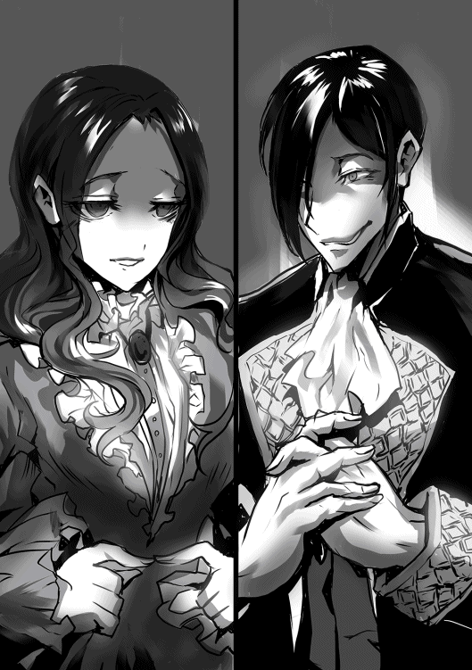
──さぁ、始まりました！ 我らが仕えるラクトス公爵家の長男、ジェイク＝ラクトス様と、ニゼット伯爵家の一人娘、アネッサ＝ニゼット様のお見合いとなります！ 申し遅れました。実況は私、ラクトス公爵家筆頭メイド・テレシアがお送りします！......そして、今回解説にお越しいただいたのは！
お久しぶりでございます。ラクトス公爵家筆頭執事・ウェルトでございます。
よろしくお願いしますウェルトさん！
はい、よろしくお願いします。
さて、状況はというと、現在屋敷門にご到着なされたニゼット伯爵御一行様を待ち構えるように、宅内玄関口にて、ディーボルト様、グリード様、リリアナ様、ジェイク様、エルザ様、そしてリノア＝ヴェール様が横並びになってお客様を出迎える態勢を取られています！ 錚々たる顔ぶれですね、ウェルトさん！
そうでございますね。今から一国を牛耳りにいくぞ。といった雰囲気を感じ取れます。
おっと！ ここでニゼット伯爵御一行様の登場です！ にこやかな表情を浮かべたニゼット伯爵夫妻と、どこか憂いを帯びているような、自信なさげな様子のアネッサ様が今、ラクトス公爵家の屋敷に足を踏み入れました！
非常によろしい出だしなのではないかと思われます。
さぁ、ここでラル＝ニゼット様の挨拶が始まりますが......おっと!? どうしたのでしょう！ ジェイク様がアネッサ様を見て硬直しております!!
や......これは......。
「可憐だ......」
おぉーっと!? これは、ジェイク様がアネッサ様に先制攻撃！ しかしどうしたのでしょうジェイク様、いつもは薄く開かれている瞼をコレでもかと大きく広げていらっしゃいます！
おそらくジェイク様は一目惚れしてしまわれましたね。あの表情、リリアナ様とご対面なされたグリード様を彷彿とさせます。いやはや、なんとも懐かしゅうございます。
なんと！ ジェイク様まさかの一目惚れ!! これは早くも決まってしまったかー!? アネッサ様も思わず赤面しておられます!!
「......まぁ、長い挨拶は置いておきましょうか。どうやら、後は若い者どうし、二人きりにさせたほうが良いみたいですしね」
おっと！ ここでラル＝ニゼット様がナイスアシスト！ なにやらグリード様と視線を交わしたあと、お二方を二人きりにさせるように誘導します！
すばらしい、ご覧になりましたか、今のアイコンタクト。まるで悪の親玉の様な含みのある下卑た目線で以心伝心でございました。ラル＝ニゼット様もだいぶラクトス公爵家に馴染んでまいりましたね。非常に喜ばしく思います。
ジェイク様もご自分の言葉を聞かれていたのに気づき、珍しく赤面しております！ 言われるがまま、我らメイドがセッティングした客室へと赴かれます！
非常に良い滑り出しでございました。しかし、心配なのはリノア＝ヴェール様でございますね。瞳から光が消えてしまっております。
確かに！ なんという表情をしておられるのでしょうリノア様!! この世すべてを憎むような双眸でございます!! と、ここで前半戦は終了となります。この後は別室にて客室の様子を、投影術式を用いて引き続きお伝えいたします！ いやぁ〜ここまで、どうでしたかウェルトさん！
そうでございますね、まぁこのお見合い自体結果はすでに見えていたとも思えますが、ジェイク様が一目惚れなさってしまうのはいささか予想外ではございました。しかし、良い影響は出るものの、ここから悪くなることはないように思われますね。
なるほど！ それでは、休憩を挟んだ後に後半戦の開幕となります。引き続きそのままでお待ちください！
──まださぁ！ 始まりました、ジェイク様とアネッサ様のお見合い！ 後半戦でございます!! 引き続き実況は私、テレシアと！
解説は、ウェルトでお送りさせていただきます。
そしてさらにゲストをお呼びいたしました！《氷塊の魔女》《宵闇の弟子》《永遠の冬》こと、リノア＝ヴェール様です!! リノア様、よろしくお願い致します!!
みんな死んでしまえばいい。
おぉーっと!? これは......あまり深く触れないほうが良い気がします！
そうでございますね。迂闊なことを言ってしまうとひどい目に遭ってしまいそうです。
さぁ、リノア様はひとまず置いておいて、状況の方は......？ あーっと！ どうしたことでしょう、お互い沈黙しています!! 全く動きがありません......いえ、おっとここでジェイク様が動くか!?
「きょ、きょうは......いい天気ですねぇ」
「あっ、え......あ、はい......」
あーっ!! だめだーっ！ 外してしまったーっ!!
ジェイク様、大変緊張なされているご様子ですね。まぁ、無理もありません。ジェイク様は年の近い女の子と話すことなど殆どなかったのですから。
「す、すみませんねぇ......ボク、その、きちんと女の子と話したことがあまり無くて。何を話したらいいのやらでして......」
「あぅ......だ、大丈夫です。問題、ない......です」
どうやらウェルトさんの解説通り、ジェイク様非常に緊張している様子でございます！
もしやこのまま前半のラル＝ニゼット様のアシストを無駄にしてしまうのではないでしょうか!?
心配でございますね。どうやらお二方とも大変口下手な様子でございますから。
破談すればいい...。
リノア様の口から大変恐ろしい言葉が発せられておりますが、お見合いはまだ続きます！ おや？ ジェイク様の表情が先ほどまでとは変わっておりますね、いったいどうしたのでしょうか!?
「あの......やっぱり、ボクのこと怖いですか？ 噂とか......その、顔とか」
「......え？」
どうやらジェイク様は、大変不安がっておられる様子ですね。まぁ無理もないでしょう。いままでの事がございますから、今回もまた......と考えておいでなのでしょう。
なんと！ ここでジェイク様が消極的なプレー!! これはいけません！ まさかこのまま、見合い不成立となってしまうのでしょうか!?
そこだ！ いけ！ 破談しろ!!
リノア様が大変良くないハッスルをしておられます!! とても甥っ子にかける言葉とは思えません!!
「ち、違い......ます！ その、怖いんじゃなくて、恥ずかしかった......んです。......魔導特性で、その、ジェイク様の感情が......つ、伝わっちゃって......」
「え？ 魔導特性......。あ、心的感応......ッ!?」
おっと!? 聞きなれない言葉が飛び出しました！ これはいったいどういうことでしょうか......？
なんでございましょう？ 心的感応......？
えー、ただ今入りました情報によりますと...っ!? な、なんと、アネッサ様は特殊な魔導特性を所持しておられる様子で、その名も《心的感応魔導特性》！
こちらはなんと、相手の心情・感情がある程度感じ取られるというもののようです！
おや、ということは......
「ッ......！ あ、あのっ、えと、私っ......ご、ごめんなさい......あの、あのっ......」
あーっと!! なんと初めからジェイク様の好意がアネッサ様に筒抜けだったー!! ジェイク様、両手で顔をおおって俯いてしまわれました!!
これは、恥ずかしいでしょうね。私でしたら二度と相手の顔は見れないでしょう。
まさかこのような展開になるとは！ だれが予想できたでしょうか!! ......おや？ ちょっと待ってください！
「......いや、いいんだ。......そっか、全部伝わってたか、じゃあいいかな」
「え？」
これは......！ まさか!? この流れで!? ジェイク様この流れで決めてしまうのか!? 開き直って、自分の気持ちをアネッサ様に伝えてしまうのかーっ!?
「ボクは、多分初めて人を好きになったんだ。君に、一目惚れしてしまったんだと思う。だから、どうかボクと婚約......いや、結婚してくれないだろうか」
言ったーっ!! ジェイク様、渾身の愛の告白!! まだ赤面して体も微かに震えておりますが、見ているこっちのほうが恥ずかしいです!! そしてぇ......アネッサ様のお返事はぁ......!?
外せ......！ 外せ......!!
......リノア様も目を血走らせて、告白の行方を見守っておられます!!
「本当に、わ、私なんかで良いんでしょうか......？ ジェイク様なら私よりも美しい令嬢と結ばれることだってできるでしょう。私よりも位の高い家から嫁がせることもできるでしょう」
「君じゃなければ駄目なんだ。君よりも美しい者は居るだろう。しかし、君でないというだけで君はそれに優る。君よりも位の高い家の者も居るだろう。しかし、君でないというだけで君はそれに優る。ボクは、君だから結婚したいと、一緒にいたいと感じたんだ」
「......ボクは気持ちを全て伝えたよ。嘘偽り無い本当の気持ちを、言葉にして伝えたよ。だから、次は君の気持ちをボクに聴かせてくれないかな──アネッサ」
ジェイク様追い打ちをかけるぅーッ！ 私、自分のことではないのに恥ずかしさのあまり枕に顔を埋めてジタバタしたい衝動にかられております!!
「はい、私でよければ......私も、貴方と共に生きたい......」
き、決まったーっ！！！ ゴールッ!! 貴方と共に生きたい...！ 貴方とともに生きたいだそうです!! どうですかリノア様！
はいっ！ 『滅べばいい』頂きました！ いやー、ずいぶんと白熱したお見合いでしたね〜ウェルトさん！
そうでございますね。後半何度かハラハラする場面もございましたが、最終的に最良の結果になったのではないでしょうか？ これでラクトス家の未来は安泰でございますね。
そうですか！ それでは、そろそろ昼食の時間が迫って参りましたため、準備にとりかかるべく、今回の実況はここまでとさせていただきます。リノア様、ウェルトさん、本日はありがとうございました！
ありがとうございました。
クソッ！ クソックソッ！ なんで私だけ......!!
それでは、実況は私、テレシアと！
解説は私、ウェルト......そして。
幸せな奴はみんなくたばれ！！！
......リノア＝ヴェール様でお送りしました！ お疲れ様でしたー!!
ラクトス公爵家の客室の一つ。室内にいるのは、前当主ディーボルトと、現当主グリード。
そして、グリードの妻リリアナに、ニゼット伯爵夫妻。
ジェイク＝ラクトスとアネッサ＝ニゼットのお見合いが無事に成功したことで、室内は和やかな、お祝いムードに包まれている......かと思いきや、なにやら緊迫した、張り詰めた空気に覆われている。
ディーボルトとグリードは大きめの卓を挟み、向かい合うように対峙し、その様子をニゼット伯爵夫妻が驚愕と畏怖の入り混じった表情で傍観していた。
「ぐ、ぐぬぬ......」
戦争の英雄と呼ばれ、恐れられ、最強とも、無敵とも呼ばれたディーボルトが視線を卓上に集中させて唸っている。
卓上にあるのは、所謂テーブルゲーム。《バローデル》と呼ばれる、チェスに似た卓上遊戯の一種の遊技盤だ。
チェスに似たとは言っても、難易度はそれとは比べ物にならないほど高いものである。
二十一掛ける二十一。総数四百四十一マスという広大な盤面に互いに対峙し、双方各百十三個の決められた動きをする駒を操り、敵陣営を打ち負かす。
それがバローデルの遊び方......いや、戦い方のルールである。
その盤面の広さと、駒の種類、数の多さをもってして、この世で最も難しいボードゲームなどと揶揄されるこのバローデル、なぜこんなにも難解な仕様になっているのかというと、卓上遊戯と言ってはいるがその実、魔導師の思考訓練に使用されるのが主な用途だからだ。
西の魔導大国リゼータでは、国を挙げての大規模な大会が催され、そこで勝利することが一種のステータスになっていたりする。
──さて、それを踏まえて、現在バローデルで対戦中のふたり、ディーボルトとグリードの様子だが。
「父上はおそらく、この勝負を持ち込んだ時、自分の勝利を確信していたのであろうな。これは卓上遊戯とはいっても、魔導師の訓練に使われるような代物、いくらルールの決まっている対等な勝負とはいえ、魔導王とまで呼ばれる父上と吾輩では経験が違う......読みの精度が違うと」
「ぐ......！」
難しい顔で唸るディーボルトとは対照的に、グリードは随分と余裕のある表情をしていた。
「まだ吾輩が、父上の役に立とうと魔導の勉強に力を入れていた頃であるが......まぁ、吾輩には向かなかったようで、魔術の一つも出来なかったものの、魔導訓練はすこしばかり受けたことがあるのである。もちろん、このバローデルも......」
と、言葉を一度区切り、机の端に寄せていたショーチュウを軽く呷るグリード。酒の熱さを逃がすように中空に息を吐く。
「吾輩、このバローデル、実はあまり好きじゃないのである」
両手の指を組んで、机に肘をつき、ディーボルトの瞳を射るように覗き込むグリード。
「父上、吾輩は計算が得意なのである」
その言葉にハッとするディーボルト、わなわなと震え、その表情は驚愕に染まっている。
「父上、吾輩はこのバローデルで負けたことがないのである」
「我が子、それは、お前は......！ 我は......すでに？」
驚愕の言葉を途切れさせながら紡ぐディーボルトを眼前に、グリードは地獄から響いてくるような、低い声で微かに声を出して嗤う。
「父上、父上はあと九千七百二通りの手が残されているのであるが、残されているだけ、最長でも八百二十四手で吾輩の勝利が確定しているのである」
「──我が、我の......敗北、だ」
力なくうなだれるディーボルト。
勝利の高揚からか、饒舌になるグリードが言葉を続ける。
「運の要素が無い遊戯では、吾輩は負け知らず......。さて、ラル伯爵。次は貴方との対局であるかな？」
ラル＝ニゼットは気づいていた、ディーボルトとグリードの対局の途中から。
「いえ......私では無理でしょう、私は......棄権します」
「ふふ、ふはは......ふははははは!!」
グリードの恐ろしい笑い声が室内にこだまする。
「吾輩を知った魔導師はみんなそう言うのである。しかし、そう......しかしこれで......！」
大仰に両手を広げるグリード。まるで大陸が、世界が全て自分のモノになったかのように、歓喜に顔を歪ませて、全能感に打ち震える。
「初孫の命名権は、吾輩のものである！！！」
今この瞬間。ジェイク＝ラクトスとアネッサ＝ニゼットの子の命名権は、アゾリアス王国執政、グリード＝ラクトス公爵の手中となった。
少しだけ時を遡り、現在はジェイク＝ラクトスとアネッサ＝ニゼットのお見合い当日。
お見合いが無事に事なきを得て両家、ラクトス公爵家とニゼット伯爵家の、小規模ながらも貴族然とした昼食会の最中のことである。
お互い照れている様子のジェイクとアネッサを、両家の家族がからかうような、微笑ましく見守るような雰囲気で囲んで談笑している最中、一匹の黒蛇がその輪から外れて、無表情ながらもどこかアンニュイな雰囲気を漂わせていた。
「あぁ、ジェイク君......。お見合いうまくいってよかったッスけど......」
黒蛇──ジェイクの使い魔であるナコという名の黒蛇はそう呟くと、深くため息をついて深く頭を垂れ頭を振った。
無論、彼女は蛇なので、実際呟いたわけでもため息をついたわけでもないが......とにかく呟いて、ため息をついたのだ。
「メリーちゃんの姉御に相談した後は落ち着いてたッスけど、やっぱり改めて......こうやって実際に事が成ってしまうと、なんていうか言いようのない不安に苛まれるッス」
彼女、ナコは以前ラクトス公爵家の夫人、リリアナ＝ラクトスの友人である大蜘蛛のメリーちゃんに、自分の主人──パートナーであるジェイクのお見合いが成功し、結婚と相成った場合に自分の存在が蔑ろにされてしまうのではないか、という不安を吐露し、相談に乗ってもらっていた。
その甲斐もあって、自分が蔑ろにされるという不安は若干解消したものの、今になって、今度は別の不安に悩まされてしまったのだった。
「これは、なんていうか......そうッス。アタイも番を作らなきゃっていう感じに、心が掻き立てられる感じッス」
使い魔となってはいても、彼女だって蛇。生き物である。したがって、子を作らねば、種を残さねばという本能はそのまま備わっていた。
それが本日、互いに婚約者となった若い二人に触発され、ナコの中で強くなっているのだった。
ならば作れば良いと、簡単に言えたのならばよかったのだが、彼女は前述の通り、魔導師の使い魔。通常の蛇とは大分、いや、ほとんど違う生き物となってしまっているためややこしいことになっているのだ。
その最たる違いが彼女の寿命、命の長さである。使い魔であるが故にその生命は主人の寿命に付随する。現に彼女は十五年の時を生き、通常の蛇ならば寿命を迎えていてもおかしくない齢に達している。
だからこそ、番を得て子を作らねばという本能と、使い魔であるが故に長命な自分には無理なのではないかという考えの板挟みにあい、彼女は不安を掻き立てられ、またため息をつき項垂れるのだ。
「はぁ......考えても答えはでないのに、ついつい考えちゃうッス。ジェイク君のおめでたい日なのに......うぅ、アタイは駄目な使い魔ッス......！」
「──おや、どうかしたのな？ 紅い瞳の美しいお嬢さん」
不意にネガティブな思考に捕らわれていたナコに誰かが声をかける。
唐突に声をかけられて驚いたナコが振り向くと、そこには白い鱗を身にまとった、琥珀色の瞳を持つ、首元に紺色の蝶ネクタイを身につけたオス蜥蜴の姿があった。
「こんなめでたい日に、随分と浮かない顔をしておいでだねマドモアゼル。よかったら相談にのることも吝かではないのだが......いかがかな？」
紳士然とした態度で白い蜥蜴がナコにそう告げる。
いや、もちろん彼は蜥蜴なので実際に言葉を発した訳ではないのだが、こう......なんというか、爬虫類同士の......アレ、そう。シンパシー的なテレパシーっぽいなんやかんやで話しかけたのだ。
そうに違いない。
「あ、あの......えっと、どちら様ッスか？」
「おや、コレは失礼。名乗るのが遅れてしまった」
ナコの問いにそう返すと、蜥蜴は佇まいを正し、紳士的に礼をしながら......。
いや、何度も言うようだが彼は蜥蜴であるため、実際に紳士的な礼をしたわけではなく......こう、四つの足を地につけたまま上手い具合に......あぁ、もういいや。
彼は見事な所作で紳士的な礼をしながらナコに自己紹介を始めた。
「私はニゼット家の令嬢にして、貴女の主人ジェイク＝ラクトス様の婚約者、アネッサ＝ニゼット嬢の使い魔──アンバーリザードの『ニヴ』と申します。どうぞお見知り置きを」
ニヴと名乗った白蜥蜴は下げた頭をそのままに、紳士的な姿勢のまま妖艶な流し目をナコに送った。
「あ、ご、ご丁寧にありがとう御座いますッス......ア、アタイ──じゃなくて、あた、わ......私はナコと言っ、申しまして、ジェイク君......じゃない、えー。ラクトス公爵家令息の......」
突然の紳士的な自己紹介にシドロモドロになるナコは、そうでなくとも他の使い魔と交流などしたことが無いため、みっともない応答になってしまう。
「フフ、申し訳ない、緊張させてしまったみたいだね。構いませんよナコさん、普段どおりの話し方で」
「そ、そうッスか？ いやぁ、申し訳ないッス。アタイあんまり他の使い魔と会話とかしたこと無くて......」
うまく上品な返答が出来なかったナコは、気にした様子のないニヴの言葉に救われたものの、なんだか気恥ずかしくなって人差し指で頬を掻く。
......人差し指で頬を掻く？ 蛇なのに、指どころか手足が無いのに、どうやって......？
どういうことなんだ、誰か説明してくれ。
「それで、ナコお嬢さんはどうしてそんなに浮かない顔をしていたんだい？」
「あ、じ、実はッスね......」
ナコは自分が不安に感じていることをニヴに打ち明けることにした。
番を作らなければという本能に掻き立てられているが、使い魔である長命な自分にそんなことが可能なのか悩んでいると。
そんなナコの相談に、ニヴはなんだそんなことかと優しげに微笑みを浮かべた。
真剣に相談したのに、そんなことと言われて少しムッとしたナコが不機嫌そうにニヴに言葉を返す。
「そんなことって、アタイこれでも乙女なんスよ？ 乙女にとってコレは由々しき問題ッス！」
「あぁ、いや申し訳ない。随分可愛らしい相談だったものでつい、ね？」
ニヴはナコに謝罪すると、彼女の相談に対する答えを示すように話を続ける。
「そんなに不安がらずとも大丈夫だよ。使い魔は皆長命なんだから、使い魔を番にすれば全て解決、ノープロブレムさ。それに、貴女は若い。普通の蛇なら寿命間近の年齢と言っても、使い魔としては十五歳なんてかなり若い方だからね。出会いなんていくらでもあると思うよ。三百年受け継がれながら未だに元気な蛙の知り合いがいるが......彼でも最年長の使い魔ではないんだ。今慌てる必要なんてないのさ。言い方はわるいんだが、所謂『時間が解決してくれる』というやつだね」
「う、まぁそう言われるとそんな気はしてくるッスけど。うん......いや、でもやっぱり不安ッス。いくら時間があるって言っても、アタイと同じ蛇の使い魔と会う機会なんて少ないだろうし」
相談前よりは悩みは軽くなったものの、ナコはまだ完全に安心は得られていない様子で出会いの少なさを愚痴るように呟く。
「おや？ ご存じないのかなお嬢さん。我々使い魔は、使い魔同士であれば種族の差というものに縛られず番になれるのだよ。まぁあまりにかけ離れた種同士だと子をなすのに時間がかかってしまうこともあるらしいが......」
「えっ......そうなんスか!?」
知らなかった事実に驚愕の表情を浮かべるナコ。
それならばなんとかなるかもしれないと、徐々に不安が薄れていく様だった。
「そうとも、それに加えて......貴女のような若くて美しい女性は引く手数多だろうね。なんだったら、私が番に立候補したいくらいだよ。ルビーの瞳のお嬢さん」
「な、ななっ......！ い、いきなり、なにを......！ 言ってるんッスかっ......!!」
唐突に、それも言われ慣れていない言葉を向けられて心臓の鼓動が高鳴るナコ。思わず、まるで心臓の鼓動がニヴに聞こえないように、隠すように力を込めて胸に手を当てる。
......彼女は蛇なので、手は無いし胸もどこか分からないが、とにかく、胸に手を置いたのだ。
どうにかしたのだ。
「おや、もしかして脈ありかな......？ ふむ、私も長いこと独り身だ、ここは積極的にアプローチさせて頂こうかな。主人同士が結ばれるのだから会う機会なんてそれこそ星の数ほどあるだろう。......君さえ良ければ、私はいつでも君の伴侶となるよ、ナコ......」
「ッ〜！」
艶っぽく耳元で、頬に唇が触れてしまうのではないかという至近距離でニヴに甘い言葉を囁かれて、変温動物にもかかわらず不明な原理で赤面するナコ。
予期せぬ、本気と取れる求愛にナコの思考は混乱し、言葉に詰まる。
「おっと、申し訳ない。少しやり過ぎてしまったようだ。うら若き乙女には少々刺激が強かったかな？ 名残惜しくはあるが、女の子に恥ずかしい思いをさせてしまった元凶はしばらく席を外すとしよう」
最後まで紳士的な、かつキザっぽい言動を崩さぬまま背を向けて去っていくニヴの後ろ姿をナコは只々目で追っていた。
もしかして、からかわれたのではないかと思いつつもナコの胸の鼓動は高鳴ったままだった。
──結果的に、ニヴに相談することによって、ナコが感じていた不安はすでに払拭されはしたものの、それは決して心の平穏を得たというわけではなかった。
なぜならば、ナコの頭の中は先程会ったばかりの白蜥蜴。紳士的でキザっぽいニヴという名の彼のことでいっぱいになってしまったのだから。
......そしてナコとニヴ、二匹のやり取りを見ていた者が一人。
彼女はまるで死んだ魚の様な、焦点の合っていない様な瞳で二匹の出会いを黙って見ているだけだった。
彼女の名前はリノア＝ヴェール。《永遠の冬》の二つ名を冠する魔導師である。
彼女もまた、今日というめでたい日に、ナコと同様浮かない表情をしていたが、彼女の前に紳士的でキザっぽい誰かしらは現れることはなかった。
そしておそらく今後も、である。
ボク、ジェイク＝ラクトスに婚約者が出来てから数日たった。
そう、ボクに婚約者が出来たのだ。ニゼット伯爵家の令嬢アネッサ、アネッサ＝ニゼット。
まぁ来年の今頃にはアネッサ＝ラクトスになるんですがね！
馴れ初めを簡潔に言ってしまうと、先日のお見合いでボクが一目惚れしてしまったわけだけど、どうやら向こうもボクのことを憎からず思っているようで、お互い照れつつではあるものの、婚約の話自体はスムーズに進んで今に至る。
アネッサはまだ学生だし、色々と準備もあるからとりあえず卒業までは婚約、彼女の学院卒業後に満を持して婚姻となるわけだ。
あぁ、とても待ち遠しい。
お見合いをするとなった段階ではあんなにも不安だったのに、今は只々待ち遠しい。彼女のような素敵な女性と結ばれるなんて、考えただけで上機嫌になってしまう程に。
今だって、油断してしまうと思わず口の端から笑い声が漏れてしまいそうだ。
......ところで、今回のお見合い、婚約でボクにある欲求が生じた。
それは、ボクの婚約者アネッサのことを誰かに話したい、自慢したいといった欲求だ。言ってしまえば、惚気話がしたい。
あまり褒められることではないというのは、ボク自身よく分かっている。
つい先程も、新月亭──父さんが贔屓にしている異国料理の定食屋にて、そこの大将の息子であり、ボクの友人でもあるユウガ君相手に散々やらかしてぐったりさせてきた所だった。
ちょっとだけ申し訳なくも思ったけど、ボクのアネッサの話をしたいという欲求はまだ収まりそうにない。
さすがにすでにぐったり気味のユウガ君に、さらに話を聞かせるのは憚られるので、店を出て次の犠牲者......もとい、ボクの話を聞いてくれる相手を探そうと城下町の裏通りを適当にぶらついているんだけど。
忘れてたよ、ボクの友達の少なさ。正午をすこし回ったこの時間に、裏路地なんて微妙に治安の悪い場所へと訪れる様な友達は特に。
魔導組合にいけば多少はいるけど、彼らはボクのようないずれ公爵家を継ぐ立場じゃなくて、完全に魔導にどっぷりな人たちだから、ヘタすると彼らの魔導談義でボクのほうがぐったりさせられそうだからなぁ。
困った。非常に困った。ボクはこんなにもアネッサの話をしたいのにする相手が居ない。
こうなったら、悪いけど、もう一度ユウガ君に聞かせるしか......。
「む、そこにいるのは......ジェイク＝ラクトスか？ 貴様、またこんなところで一体何を......！」
そんなことを考えていると、不意にボクの名を呼ぶ声が聞こえた。
アゾリアス王国の第一王子、アルト＝アゾリアスその人だった。
......いや、またこんなところでってこっちのセリフだよ？ また護衛も付けずに裏路地なんかに来ちゃって、もっと危機感を持ったほうがいいんじゃないかなぁ？
でもまてよ。アルト王子とはまぁ特別親しいってわけではないけれど、会ったら少しは会話するから、全然親しくないわけでもないよね......うん。
王子相手だけど、まぁいいか！
「これはこれは、アルト第一王子。王子の耳には届いていますか？ ボクの婚約者の話なのですけれどねぇ......」
──数刻の間、アルト王子に惚気話を聞いてもらっていたのだけれど、王子は話の途中で何か用事を思い出したと言って、足早に王城へと向かってしまった。
ユウガ君のように濁った瞳でぐったりしていたわけではないので、ボクの惚気話に嫌気が差して逃げられたのではない、と思う。
いや、でも引きとめようとしたらすごい嫌がってたし、やっぱりうんざりだったのかな。
......しかし、話を聞いてもらったはいいけれど、途中で中断されてしまったせいか、誰かに話したいという欲求は余計に強くなってしまった気がする。
さて、どうしたものか......。
やはりユウガ君にまた犠牲になってもらうしか......そうだ！ 彼がいた。ゼン＝ヘリックス！
この間の新月亭での騒動が解決した後の食事で、彼とはだいぶ打ち解けたし、その際の会話で彼が聞き上手だと感じたから、きっと彼ならボクが満足するまでボクの惚気話を聞いてくれるに違いない。
そうと決まれば早速彼を探しにいかなくちゃ！
俺こと、アルト＝アゾリアスは焦っている。
ここのところ、戦争の英雄、ディーボルト＝ラクトス殿の突然の凱旋により色々と多忙だったため、かの悪徳執政、グリード＝ラクトスと、その息子ジェイク＝ラクトスの企みを暴くための調査に時間が取れなかったからだ。
さらに言えば、凱旋式典が終わった後、俺はふと気がついた。ジェイク＝ラクトスが凱旋式典に参加していなかったということにだ。
ディーボルト殿は戦争の英雄。そうでなくともその血のつながった孫であるジェイクが式典に参加していないなど、式典の賑わいに乗じて、裏で何かしていると言っているようなものだろう。
......そう考えると、ディーボルト殿の急な凱旋はジェイクが動きやすいようにと謀ってのことだったのではなかろうか？
今思うと、凱旋の理由が『ジェイクの見合いに立ち会うため』というのは、どうにもこじつけのように感じてしまう。
例の──通称《ディーボルト誓約》があるため、ディーボルト殿が直接加担するようなことは出来ない。
しかし間接的に、そう、ディーボルト殿が我々に危害、損傷を与えないのであれば、執政やジェイクが動きやすいように行動することが可能なのではないか？
そう考えた俺は危機感に駆られ、何かに追われるように王城を飛び出し、いつもジェイクがうろついている路地裏に向かうと、周辺での調査を開始した。
これまでのジェイクに対する尾行からでは、奴らの企みに対し、なんの確証も得られなかった。そこで、やつに関係しているであろう周辺から調査の手を進め、今度こそ尻尾をつかんでやろうと考えての行動だ。
......しかしこれまた、なかなか確証を得られずにいる。
正直、俺一人では厳しいところではあるが、残念ながら信頼できる手足が今のところいない以上、仕方がない。
以前代わりに調査を頼んだ軽装騎士、ゼン＝へリックスは、調査に失敗した様子で、俺に対してなぜか奴らの善性を説いてきた。
あまりに奴らを神聖視するような言動だったため、魔導薬を使用されたのではと検査にかけたが、結果は白だった。
検査に引っかからない何かをされた可能性もあるが、ゼンが信頼するだれか、騎士団の上層部あたりに奴らに与する者がいて、その何某に言いくるめられた可能性が高かったため騎士団は使えない。暗部連中は、大臣と執政の管轄だし、もう俺一人でなんとかするしかないのだ。
そんな、決意も新たに今度こそ証拠を手に入れようと躍起になっている時、俺の目の前にジェイク＝ラクトスの後ろ姿が見えた。
どこに向かおうとするでもなく、何かを見つけようと周囲を探っている様子だ。
......まずい、俺が奴個人ではなく、奴の周囲を探っているのを勘ぐられたか？ なんとかいつもの調子で話しかけて誤魔化さねば！
「む、そこにいるのは......ジェイク＝ラクトスか？ 貴様、またこんなところで一体何を......！」
そう話しかけると、ジェイクはゆっくりと後ろを振り向き......いつもの裏のある、悪巧みをしているような笑みを、さらに凶悪にしたような、心の底から喜んでいるような、悪魔のような笑みを向けてきた。
そのあまりの異常な表情に、冷たい汗が背中を伝う。
なんだ、なんなのだ。なぜそんな表情をしている。
一瞬で喉がカラカラに渇いたような錯覚を覚え、たまらず唾を飲み込む。
「これはこれは、アルト第一王子。王子の耳には届いていますか？ ボクの婚約者の話なのですけれどねぇ......」
俺は奴の言葉に思わずハッとして、警戒を緩めず奴の話にあわせるように言葉をつむぎだす。
「あ、あぁ。父──陛下から聞き及んでいるぞ。ニゼット執政補佐官の娘だったか、名は確か......」
「アネッサ！ ......アネッサ＝ニゼットですよぉ、アルト王子。キシシッ」
唐突に声を大きくするジェイク、俺は思わずビクリと身をこわばらせてしまう。
「いやぁ、ボクにはもったいないほど可憐な娘でしてねぇ......。魔導特性色が髪と瞳に色濃く出ていまして、まるで深海のような、じっと見ていると溺れてしまいそうな美しく深い蒼色をしているんですよぉ」
饒舌になり、心底楽しそうに笑みを浮かべながら婚約者について語ってくるジェイク。
......こいつは、いったい何を言いたいんだ？
「ニゼットの家系ということもあって魔導に対する深い知識もありましてねぇ......。そうそう！ 彼女、なんと魔導特性の複数所持者なんですよぉ！」
ジェイクの言葉に耳が反応する。
魔導特性の複数所持......。奴が何を言いたいのかは未だに理解が及ばないが、俺の脳内にある仮説が思い浮かぶ。
奴の婚約者は、協力者でもあるのではないか？
......まだ仮説だ、確証はない。しかし可能性がゼロではない、ここは一つ探りを入れてみるか。
「ほぉ、それは珍しいな。いったいどんな特性を持っているんだ？」
ジェイクは、その言葉を待っていたと言わんばかりに口元をさらに歪めてまくし立てるように言葉をつむぎ始める。
「いやぁ、彼女......《呪言魔導特性》と《心的感応魔導特性》の二つの特性を持っていましてねぇ。とりわけ後者、心的感応魔導特性は大変珍しい魔導特性でして、実はボクと彼女が婚約する切欠となったのもこの心的感応魔導特性なのですよ......！」
なるほど、《呪言魔導特性》と《心的感応魔導特性》か......。どちらも魔導にあまり詳しくない俺には聞きなじみのない特性だが。
心的感応魔導特性......単語からとてつもなくいやな予感がする。
婚約の切欠というほどだ、おそらくこれが重要なピースのだろう。後ほど王城内の書物庫にて調べる必要があるな。
しかし、こいつ。ジェイクはいったいなぜこうも俺に婚約者の話をペラペラと話してくるのだろう。敵である俺に情報を漏らすことに何の意味があるのだろうか？
ジェイクの話が、婚約者の可憐さの話に変わっている間に俺は考えを巡らせる。
時間稼ぎ？ いったい何に対して？ そもそも時間稼ぎで婚約者が協力者であると匂わせる話をして、わざわざ俺の警戒を強めるだろうか？......あまりなさそうな気がする。
何らかのミスリードを誘っている？ 婚約者こそが協力者で、危険な存在であると主張し、別の何かから目を背けさせようとしている？......ありえるな。だが、何から目をそむけさせるのだ？
ディーボルト殿......は、無いな。婚約者どうこうで目を背けるような存在ではない。そもそもあの誓約がある、表立って協力できない立場の人物に何をさせるのだ。
ニゼット家が絡んでいる？......いや、婚約者がそもそもニゼット家の者だ、婚約者に疑いをかけさせては本末転倒だろう。よく分からん、保留だな。
自分たちの勝利を確信し、余裕──慢心から饒舌になっている。......奴が、慢心で饒舌になるなど迂闊なことをするだろうか？
戦においては、慢心した奴から死んでゆく。油断は命取り。
いままで尻尾を掴ませなかったやつがいまさらボロなど出さないだろう。
単に俺に対して惚気話をしている。......ない。一番ないな。なんでこんな考えが浮かんだんだ？
ええい、埒があかん。
もしやこうやって、俺の思考を混乱させるのが真の目的なのかもしれん。
そうだ。どんな企みがあるにせよ、奴から話しかけてきたということは、この話を聞かせることでジェイクにメリットがあるということには変わらん。
となれば、早々にこの話を終わらせて奴の言っていた婚約者の魔導特性について調べるのが最善だろう。
「──それから、彼女が言ったわけですよ。私が──」
「あぁ、ジェイク＝ラクトス！ 悪いが用事を思い出した。俺は王城に戻るぞ！」
俺が早口でそう告げると、ジェイクは一瞬の間、言葉を噤み、不気味な笑顔をやめ、いつもの胡散臭いものに戻した。
「おやぁ、それは急用なのでしょうか？ ボク個人としましては、もう少し王子と楽しくおしゃべりさせて頂きたいところなのですがねぇ......」
ふん、楽しくおしゃべりか。はたして何が楽しくなるのやら。俺か、お前か、それとも国か、行く末か。
どちらにせよ、その楽しいはジェイクにとってだろうが。
「あぁ、まぁ急用ではないが。まぁ用事というのは早めに済ませるに限るだろう」
「急用でないのならば、やはりもう少しボクと会話しませんか？」
ジェイクがやけに俺を引き留めようとする──なにか嫌な予感がする。
「いや、やはり今城に戻る。少し確認したいこともあるからな」
「まぁまぁ、そこをなんとかお願いしますよアルト王子。あと......そう、数刻。数刻で良いですから」
ジェイクらしからぬ態度だ。今まで何度かこうやって邂逅することはあったものの、その際は二言三言言葉を交わす程度のものであった。それが、今はこうして俺をこの場に止めようとする。
まるで俺を城に行かせたくないかのように......城に行かせたくない？
まさか──今、城内でなにか良からぬことが行われている!?
俺がジェイクを最も警戒していることを利用し、城から離れさせることで今、城内では執政が悪事を働いているのでは!? 今回に限り、ジェイクが囮なのではないか!?
こうしては居られない、早急に王城へ向かい、有事の有無を確認せねば！
「くどいぞジェイク！ 俺は早く城に戻る必要があるのだ！ 邪魔をするんじゃあない!!」
「......そうですかぁ。残念ですが、まぁそういうことでしたら。ごきげんようアルト第一王子」
いつものように敬意をまるで感じないジェイクの一礼を背に、俺は足早に路地裏を去る。
そして大急ぎで王城にたどり着くと、異常をいち早く察知するべく、父上、騎士団長、そして大臣になにか異変がなかったかを尋ね、各所を廻り異常がないか確認した。
......結果、なんの異常も見つからなかった。
これは、俺には気づくことの出来ない何かが行われたのか、はたまた運良く行動を起こされる前に城に戻れたことで難を逃れたのか......願わくば後者であって欲しいものだが。
ジェイクの思考はやはり理解不能だ。奴は一体何を企んで、何をもって王国に害をなそうとしているのだ？
いくら思考しても、なんの痕跡も掴めていない現状では、結論どころか予測することも難しい。考えても埒があかない。
とりあえず、最悪の事態には至っていないと仮定して、先ほどジェイクから聞いた、奴の婚約者の魔導特性について調べることにしようか。
──王城の書物庫にて、魔導特性大全なる分厚い書物を手に取り、パラパラ捲りジェイクの言っていた魔導特性について調べる。
どうやら、この魔導特性大全という本は深い知識を持つ魔導師向けではないようで、魔導特性について、『その特性が出来ること』等が簡潔に書かれている、魔導に詳しくない貴族向けの本のようではあったが、問題なく《心的感応魔導特性》のページは見つかった。
曰く、相手の感情を言葉を介さず汲み取ることの出来る魔導特性らしい。
やはりというか、なんというか。案の定、敵に回すと厄介な魔導特性だな。
まぁ、厄介だが......この書物を見る限り、些細な悪事に利用できそうではあるが、ジェイクが言うほどの、婚約の決め手になるような物かと言われると少し疑問が残る。
やはり、さして重要ではない情報をわざと俺に渡すことで、別の何かから目を背けさせるのが目的だったのだろうか......？
......そういえば、もう一つあったな。確か《呪言魔導特性》だったか、一応調べておこう。
パラパラと書物を捲ること数刻。ようやく目的のページを見つけ、目を通すが......。
「なっ、なんだこれは!!」
そのページ、呪言魔導特性について書かれているはずの箇所には、たった一行、こう書かれていた。
──『呪いを言葉にて行使する模様、詳細不明』
ほかの魔導特性の項目とは比べ物にならないほど不明瞭な内容が書かれていた。
呪いがどういうものなのか、どの程度の規模なのかも分からない。しかし何よりも『詳細不明』と書かれていることに俺は恐怖を感じていた。
ほかの魔導特性のページにも、よく分かっていないところには『鋭意探求中』とか、『現在検証中』とか書かれているにもかかわらず、この魔導特性は『詳細不明』。しかも注釈があり、『現在もなお研究されていないため』と書かれている。
こんなことが書かれているのはこの項目だけだった。
......まさかジェイクは、俺がこの魔導特性について調べられないと分かっていてあえて教えた？ 不安を煽るために!? 俺に冷静な判断をさせないように!?
だとしたら、あいつの目論見は大成功と言っていいだろう！
やはりアネッサ＝ニゼットは、ジェイクの婚約者は奴の協力者だ......！
心的感応魔導特性を持っていながら、ジェイクの悪意に気づかぬはずなど無い。その悪意を知ってなお婚約に至ったわけだからそう考えるのが当然だ。
そしてその協力者は未知の、詳細不明の魔導特性をも所持している！
アネッサ＝ニゼットに探りを入れようにも、心的感応魔導特性でこちらが疑いの目を向けていることが筒抜けになるため、それも難しい。
ジェイクと別行動で謀りごとをされでもしたら手に負えない!! まずい。非常にまずい......！
そこで俺は気がついてしまう。先ほどのジェイクの会話で浮かんだ考え。慢心から饒舌になっているという可能性。
それが、最悪の形で当たらずとも遠からずな考えだとしたら？
──そう。慢心などではなく、すでに詰みに入っているからこその饒舌。
覆りようのない、勝利宣言だったのではないか？
事実、俺は奴の悪事の確証を全く掴めていないにもかかわらず、向こうは強大な協力者を得ている。すでに謀りごとを最終段階に進めているのではないだろうか。俺には奴らが何をしようとしているのかすら掴めていないのに......。
......もう、俺にはどうしようも無いのか？ 俺には、この国を魔の手から守ることが出来ないのか？
書物庫の中で一人。俺は頭を抱えて、失意に包まれる。
「父さん。その、ちょっと相談したいことがあるんだけど......あ、母さんもいいかな？」
すっかり日の落ちた時間の吾輩の邸宅、ラクトス公爵邸のリビングにて、夕食後の団欒中ふと息子のジェイクが吾輩と、妻リリアナに相談を持ちかけてきた。
「相談？ ジェイク、お前が吾輩に意見を求めるなど、珍しいのである」
「そうねぇ、いったいどんな相談なのかしら？」
そう、ジェイクが相談を持ちかけるなど、本当に幼い時以来のことである。
どうやったら友だちができるの？ と訊かれた時は、吾輩が訊きたいと思ったものである。
「いや、そのね......あ、エルザはちょっと退席してもらっていい？ 面倒くさいことになりそうだから」
『はぇ!? なんか自分の扱いだけ雑であります!! 自分だって兄上の相談ぐらい聞くのは容易いのでありますが!?』
「うーん......まぁ居てもいいんだけど、エルザがボクの相談に乗るのは絶対無理だと思うなぁ......」
ここは、妹のことを信じてやるように窘める場面であろうか。いや、でもエルザだしなぁ。
「まぁまぁ、いいじゃない。わたくしもエルザには無理だと思うけれど、万が一ということもあるでしょう？」
『なんでありますか!? この自宅なのに感じるとてつもないアウェー感!! 騎士団の合同訓練でも、ここまでのアウェー感は感じなかったのであります!!』
エルザ、吾輩はお前が合同訓練でアウェー感を感じていることなど、できれば知りたくなかったのである。
「......して、ジェイク。相談とはいったいどんな内容であるか？」
このままでは埒が明かないと感じた吾輩は、ジェイクに先を言うように促す。
それを受けてジェイクが、少し気恥ずかしそうにしながらも、相談内容を告げてくる。
「そのさ、アネッサと結こ......婚約したじゃない？ それでその、デ、デートとか誘いたいなーと思うんだけど......」
「あらあらあら！ いいわね！ 若いわね！ 青春ね！」
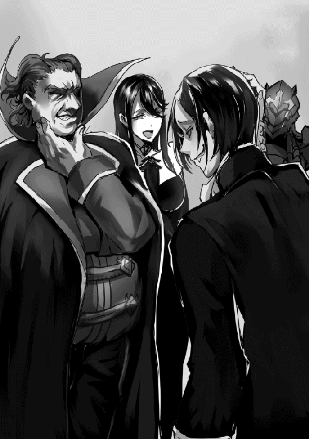
ジェイクがそこまで言うと、吾輩の隣のリリアナが徐ろにテンションを上げる。いくつになっても女性というのはこの手の話が好きなのであるな。
......エルザ、お前も何かリアクションをとっても良いんであるが？ 腕を掻きながら「ふーん」って態度は、令嬢としてちょっとどうかと思うのである。っていうか鎧の上から腕を掻くって意味があるのであるか？
「え、えっと。それでその、デートって何をしたらいいのかな？ 父さんと母さんならいい意見を聞けると思ったんだけど」
ふむ、デートしたいが、どうしたら良いのか分からない......であるか。
なんとも初々しい、懐かしいとも感じる相談事である。吾輩もリリアナと婚約したばかりの頃に同じように悩んだものである。
「なるほどねぇ、たしかにコレは重要な相談ね」
「吾輩たちの場合は、買い物とか食事が多かったであるな」
「そうね、あとは劇場にオペラや演劇を観に行ったりしたわ」
「ふんふん、買い物に食事、劇場......と」
我輩とリリアナのアドバイスを聞いて、それを真剣な表情でメモに取るジェイク。まるで若い頃の吾輩を見ているようである。
「あー......でも食事はともかく、買い物とか劇場って結構好みによるんじゃないの？ アネッサはあんまり劇とか見ないって言ってたし、買い物も興味ない店だと退屈させちゃうんじゃ......」
「あら、そんなの何処に行きたいか聞いたら良いだけの話じゃないの」
『自分は武具店とか鍛冶屋とかが喜ばれると思うであります!!』
「でも、そういうの聞いちゃうのってなんか格好悪くない？」
「確かに、エスコートするって意味ではちょっと問題あるかもしれないけど、変な所に連れて行ってしまうよりは良いと思うわ」
『あれぇ!? スルーされたのであります！ どうしてでありますか!?』
エルザ、お前はそれが分からないからスルーされたのである。そしてそんな所に連れて行かれて喜ぶ令嬢など、お前ぐらいのものである。
「......アネッサ嬢もお前もあまり貴族然としていない方が好みであろう？ だったらエスコートなどと難しく考えず、楽しむために二人で計画をたてるというのも良いと思うのである」
「いい！ それすごく良いですわグリード様!! それによって縮まる二人の距離!!」
「う、うむ......」
なんだかリリアナが息子のデートの話題でハッスルしすぎているのである。こんなハキハキ喋る妻の姿は初めて見たのである。
「なるほど......あ、でもボクあんまりデート向きの店とか知らないんだけど。さすがに城下町の店は問題あるよね？」
「城下町!? お忍びデート！ 変装して貴族の男女がお忍びデートね!! いいわぁ、憧れるわぁ......」
リリアナは大丈夫なのであるか？ 遥か彼方に視線を向けてトリップしている様子なのである。妻の新たな一面に、吾輩かなり動揺しているのであるが？
『城下町の武具店は駄目であります！ 軽い武器しか置いてないし、フルプレート鎧も売っていないのであります!!』
エルザが満足するような武器を扱う店など、軍に直接卸している鍛冶屋ぐらいのものなのである。
っていうか、もうエルザにこの話題は無理であるから、静かにしているのである。
......それよりも。
「悪いことは言わないから、貴族街の店にしておくのである。吾輩と同じ失敗をしないためにもな」
「え、うん。......ちなみに、失敗ってどんな？」
「デート中に冤罪で連行されたくはないであろう？」
「......分かった。絶対城下町でデートしない」
いまだかつて無いほど真剣な表情で頷くジェイク。
そう、息子にあんな惨めな思いをさせてはいけないのである。
二度とあのような悲劇は、起こしてはならないのである。
『あ！ 貴族街だったら腕の良い鎧装飾職人が居るのであります!! そこがオススメであります!!』
エルザ、ステイである！
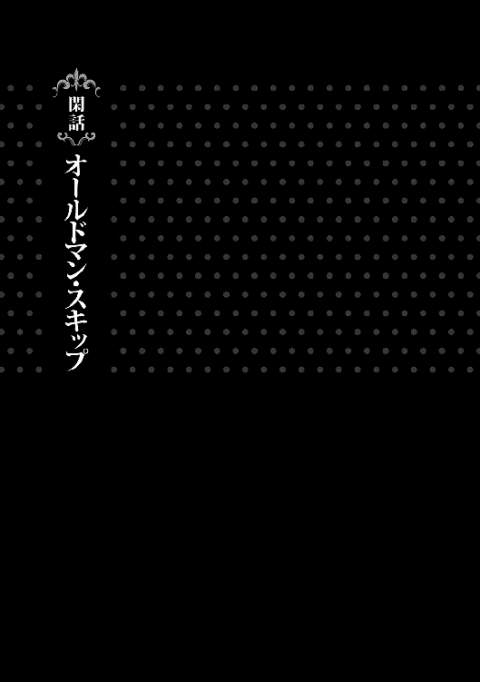
アゾリアス王城内、国王執務室。
王国に関わる重要な仕事をする際に、頻繁に用いられる部屋である。
その内装は、過剰な煌びやかさはないものの、さすが王城内といった雰囲気の上品な調度品が適切に配置されていた。
加えて言うならば、執務室というよりは会議室といったような広さがあり、しっかりした造りの、見るからに高価そうな意匠で仕上げられた広い机が二つ、距離をおいて向かい合うように配置され、その奥にさらに大きな、前述の机に付属しているものに比べても非常に上等な椅子が付属している豪華な机が置かれている。
なぜ国王の執務室に、机が三つも置かれているのか。
それは、国王執務室という名ではあるが、実際の所、この部屋は国王のみが使用するわけではなく、大臣と執政もまた使用するためである。
日本の法廷に例えて言うならば、弁護側に位置する机に大臣、検察側に位置する机に執政、そして裁判官の位置に国王が座る形となる。
そして今現在、その国王執務室は二人の人物が使用している。
一人は、一番豪華な机について、別段なにかをするわけでもなく頬杖をつき、無駄に威厳のある雰囲気を醸し出しながら暇を持て余している男。アゾリアス王国国王、レオン＝アゾリアス。
そしてもう一人は、国王から見て左手側の机についているアゾリアス王国執政、グリード＝ラクトス公爵である。
「ふんふんーふふー」
かの執政は、ただ頬杖をついてボーッとしている国王とは違って、まるで地獄の底から響いてくる様な低音で鼻歌を歌いながら、常人ならば幽鬼のように青ざめて、死んだようにこなす量の書類を、驚異的な速度で次々と処理している。
「お、なんだ執政。ずいぶんと機嫌が良さそうではないか、なにか良いことでもあったのか？」
このアゾリアス王国において、国王はだいたい、いつも暇である。
もちろん書類仕事の様なものは存在するが、大抵が承認の印をポンと押すだけの、鼻をほじりながらでもできるようなものである。
忙しいのは、式典や討伐に関わるような行事の時だけ。故に、現在レオン＝アゾリアスは暇を超えた暇......所謂、超暇状態であった。
だからこそ普段は特に気に留めない、執政の口元から発せられる恐ろしい呪歌のような鼻歌の理由を尋ねて、執政とお喋りして暇をつぶそうと考えたのだ。
「あぁ、陛下。いやなに、正式なお披露目の日時が決まってからお知らせしようと考えていたのであるが......先日の息子の見合いがうまくいきまして、婚約することとなりましてな。嬉しくてつい鼻歌なぞ口ずさんでしまったのである」
執政、グリード＝ラクトスは上機嫌な理由を、息子であるジェイク＝ラクトスの婚約が決まったからであると告げる。
これは初耳であった。グリード執政の息子とは、多少ではあるが面識がある。
たまに会う親戚の子供位には彼のことをよく知っているレオン国王はその報告を聞き、退屈そうだった表情を笑みに変えて、声を張り喜ぶ。
「おぉ、ジェイク君な！ それは良かったではないか、ようやく肩の荷が下りたといったところか？」
「肩の荷......そうであるな。ええ、随分と体が軽くなったような、スキップでもしたいような気分なのである」
「ふはは！ スキップか！ 執政がスキップか!!」
グリード執政が、スキップでもしたい気分と言ったことに対して、その姿を想像して少し笑いのツボに入ってしまったレオン国王が愉快そうに笑い声を上げる。
もちろん、その想像した姿が、恐ろしくも滑稽であった。などとは口が裂けても言わない。
グリード執政は繊細なのでソレが原因で仕事が滞ってしまうと、王国の財政的に問題があるからだ。
以前のレオン国王であれば、うかつにも口にしていただろうが、腐っても国王。
彼は学習したのだ。幾度も大臣に叱責されることで、ポロッと内心を吐露してしまわないようになったのだ。
あたりまえのことが出来るようになったのだ。
「......ふむ、スキップか」
ひとしきり笑った後、なにか考え込むように顎を擦る国王。そのまま目を伏せてしばしの間沈黙する。
そして、普段は考えたそばから口に出すような国王が、考え込むように黙ってしまった様子を不思議に思ったグリード執政が声を掛ける。
「陛下？ いかがしたのである？」
「いや......今ふと考えたのだが、余はもしかしたら、スキップしたことがないかもしれん」
珍しく考え込んでいた様子のレオン国王は、その脳内で、随分とくだらないことを思考していた。
バリバリ書類仕事をこなすグリード執政の隣で。
普段ならば適当に流して、再び書類と向き合うグリード執政ではあるが、仕事のできる執政は、先ほどの会話と国王のくだらない思考の合間に、本日分の書類を全て片付けてしまっていた。
そのため、陛下との雑談に興じることにする。
「まぁ、陛下は王族であるからして、スキップしたことがないというのも納得ができる話であるな」
「うむむ......」
前述のとおり、現在執務室に居る二人は今、時間を持て余している。
加えて言うなら、国王にいたっては随分と前からである。
レオン＝アゾリアスがなにかろくでもないことを言い出す条件が整ってしまっていた。
「よし！ 執政、余はこれからスキップしようと思う！......しかしやり方がいまいち分からぬ。だからちょっと手本を見せてもらえるか？」
また陛下が退屈のあまり変なことを言い出した。
そう思うグリード執政ではあったが、彼もつい今しがた暇になってしまった。
普段なら確実に、適当に流す提案ではあるのだが、スキップくらいならばとグリード執政は快く拝命することにした。
「了解したのである」
短く返事をすると、グリード執政は立ち上がり、執務室の空いているスペースに歩を進めて、壁際の位置につく。
「では、いくのである。......ふっ、あ。あれ？ こ、こうで、ある？ うぉっ!?」
スキップなど、子供の頃よくやっていた。簡単にできる。
そう思い挑んだグリード執政ではあったが、よくよく考えてみれば、本当に子供の時期......十になるかならないかくらいの歳以降はスキップなどしてこなかった。
その長いブランクから執政は、ギクシャクとした動きで、挙句には足をもつれさせ転びそうになってしまう。
「執政、余はスキップに詳しくないからよく分からぬのだが......それはなんか違くない？ 軽やかな感じが微塵もしない動きだったんだけど」
「ま、待っていただきたいのである！ 子供の頃は確かに出来たのである、こう......ケンケンみたいな感じで、あ、あれ？」
出来る、出来るはずである。
そう国王に、そして自分に言い聞かせるように何度も呟きながら再挑戦を繰り返すグリード執政ではあったが、一向にうまくいかない。
そうしていると、執務室の扉からノックの音が響き、一人の男性が入室してくる。
「失礼します。グリード執政、先週の経費の書類が......あー、何をやっているんですか？」
入室してきたのは、アゾリアス王国執政補佐財務官。
先日、執政グリード＝ラクトス公爵の息子、ジェイク＝ラクトスの婚約者となった、アネッサ＝ニゼットの実父、ラル＝ニゼット伯爵である。
そんな彼が、入室してすぐ目に入った、奇妙な動きをしているグリード執政に面食らっていると、レオン国王が声を掛ける。
「おぉ！ 執政補佐！ 丁度良い所へ来た!!」
「あ、これは国王陛下。ご機嫌麗しゅう......」
「よいよい！ 今はそういうのよいから!!......執政補佐、スキップできるか？」
「は......？ スキップですか？ あの嬉しい時とかにする？」
執務室に入るなり、いきなり、よく意味の分からないことを尋ねられ困惑するラル執政補佐に、運動不足故にすでに息切れしているグリード執政が事情を説明する。
それを聞いて若干呆れるものの、ラル執政補佐は仕事の息抜きくらいにはなるだろうと、軽く考えて話を合わせる。
「なるほど、スキップのお手本ですか......任せて下さい。つい最近、魔導組合にいた頃は良い成果が得られた時などに度々していましたからね。グリード執政ほどブランクはありませんから問題ありませんよ」
「おぉ！ それは頼もしい！ はやく、はやく見せるのだ！」
「ぐぬぬ......」
スキップが出来る。と、なぜか自信満々でドヤ顔を晒すラル執政補佐に、早く見せるようにせがむレオン国王、そしてなぜか悔しそうなグリード執政。
本来、真面目な、そして重要な仕事に使われる執務室ではあるが、現在においては、友人の集まる男子高校生の部屋の様相を呈していた。
「では、いきますよ......ほっ。こう、こうです。どうですか？」
「おぉ、軽やか！ 執政補佐、軽やかであるぞ！」
国王に褒められてドヤ顔のラル執政補佐。レオン国王もまた何度も頷き、スキップの動きを覚えようとする。
しかし、グリード執政の表情は二人とは相反していた。
まだ悔しそうな表情をしている──というわけではない。執政の表情はラル執政補佐のスキップに対して、腑に落ちないような、なにか違和感を覚えているようなものだ。
「うーむ？ スキップってそうであったか？ なんかこう、ちょっと違うような気がするのであるが......」
「え？ こうですよね？ 合ってるはずですけど」
グリード執政の違和感に疑問を覚えつつも、ラル執政補佐は執務室の壁から壁へ、自らも確かめるように往復してスキップを繰り返す。
そうして何度目かのスキップの最中、グリード執政は違和感の正体に気づき、声を荒げる。
「分かった！ 分かったのである！ ラル伯爵のスキップは腕と足が一緒に出ているのである!!」
そう、グリード執政が抱いていた違和感の正体、それはラル執政補佐がスキップをする際に、上げた足と同じ側の腕を前に出して振っていたことによるものだった。
足運びは間違っていなかっただけに、そのナンバ走りのような挙動になかなか気づくことが出来ずモヤモヤしていた執政だったが、ようやくそれが解消されてすっきりしたような表情を浮かべる。
──しかし、そんな執政とは逆に、ラル執政補佐はショックを受けた様子で顔を青ざめていた。
「え......？ これ手と足は同時に出すものじゃなかったんですか......？ 私は間違ったスキップを魔導組合で、それも上機嫌で晒していたのですか......？」
前述のとおりラル執政補佐は、魔導組合にいた頃、頻繁とまではいかないまでも、それなりの回数スキップした記憶があった。
もちろん、さきほどドヤ顔で陛下に見せたお手本の通りにだ。
その事実をいまさらになって、魔導組合を辞めて、執政補佐になって初めて知ったラル＝ニゼットは頭を抱えて絶望の表情を浮かべる。
「あー、執政補佐？ 大丈夫か？」
「陛下......私はもうダメです......。何度ほかの魔導組合員の見てる中、間違ったスキップを披露していたことか......あぁ。きっと、皆何も言わなかったけれど内心では、あの伯爵は何で変なスキップしてるんだ？ 的なことを思っていたに違いない。なんてことだ、なんで誰も間違っていると教えてくれなかったんだ......！」
「ま、まぁまぁ、ラル伯爵。きっと皆もう忘れているのである。今からきちんと直して、前からこうしていたと言い張れば問題ないのである......多分」
いまだかつてないほどに落ち込んでいるラル執政補佐を宥めるレオン国王とグリード執政。
そして、執政補佐が一通り落ち着きを取り戻すと、グリード執政は再びスキップに挑戦することにする。
「ほっ......おっ！ こうであるな！ 思い出したのである！ 出来たのである！」
先ほどのラル執政補佐のスキップを見ることで......まぁ、手の振りは間違っていたが、足運びは完璧だったそれを見たことによって、グリード執政はスキップの仕方を無事思い出すことに成功した。
そしてそれが嬉しいのか、はしゃいだ様子で円を描くようにスキップを続ける。
「なるほどなるほど！ それが正式なスキップなのだな！ 覚えたぞ、こう......こうだな！」
「手と足は交互に出す。手と足は交互に出す。手と足は交互に出す......」
それに続くように、さすがは武力を尊ぶアゾリアスの国王といった覚えの速さで、スキップを習得したレオン国王、そして、ブツブツと自分の間違いを矯正するように呟くラル執政補佐が、回るようにスキップを繰り出す。
「おぉ、さすがは陛下。もう完璧にスキップしているのである。ラル伯爵もすでに手の振り方を修正しているのである。」
「ふはは、余は国王だからな！ こういう体を使ったことは、すぐ覚えられるぞ！ すぐにな！」
「もう間違わない、手足は交互に。手足は交互に......」
執務室ではしゃぎながら、円を描くようにスキップを続ける国王と執政と執政補佐。
別に三人は酒に酔っているわけではない、加えて言うなら今の時間帯は正午過ぎである。
普通の文官はまだ仕事をしている時間に、王国の上層部と言って差し支えない三人は、ただただスキップを続ける。
だが、永遠に続くかと思ったそれは、彼らのスキップは、扉をノックする新たな人物の入室によって、終焉を迎えることとなった。
「陛下、承認の印が必要な書類が......あ？ なんでスキップしてるんですか？ 四十過ぎのオッサンが揃いも揃って......なんの儀式です？」
奇妙なものを見る目で、訝しげにスキップ中の三人に目を向ける新たな人物。
彼は、この執務室に置かれている現在使用されていない机の持ち主。アゾリアス王国大臣であった。
大臣に年齢のことを言われて、とたんに正気に戻るグリード執政とラル執政補佐。気まずそうに咳払いをして目を泳がせる。
一方、レオン＝アゾリアス国王陛下はハイテンションのままであった。
「おお！ 大臣、見よ！ 余はスキップをわずか数分の間に会得するに至ったぞ！ どうだ、軽やかであろう！」
ドヤ顔で得意げにスキップを続けるレオン国王。
その様子を暫くの間、無表情で眺める大臣に、グリード執政とラル執政補佐は冷や汗を流す。
「......おやおや、随分楽しそうですな陛下。私もご一緒してよろしいですか？」
「おぉ、よいぞよいぞ！ まぁ大臣はもう五十過ぎだからあまり無理せんほうが良いとも思うが......というか、大臣はスキップが出来るのか？」
「おっと、そこまで言われてしまったらこれは私の渾身のスキップをお見舞いするしかありませんな。ハハハ」
表面上は笑顔の大臣が、ノリ気であるような発言をすると、レオン国王は快諾しつつも挑発するような言葉で返す。
一見、和やかに見えないこともないが、執政と執政補佐は気づいている。大臣の目が笑っていないことに。
「では、いきますよ陛下......オラッ!!」
「ぐふぅ......ッ!?」
やたらと気合の入った掛け声で繰り出されたスキップが、鋭く国王の脇腹に突き刺さる。
油断した所に綺麗に入ったそれは、不敬罪すら叩き割る勢いでクリーンヒットし、強さが全て、パワーイズパワーなアゾリアス王国国王に苦悶の表情と脂汗を掻かせるに至った。
「──くだらねぇことしてないで、さっさと承認の印持ってこい」
射殺すような視線で睨みながら、国王に対して吐き捨てるようにそう告げる大臣。
その恐怖に、グリード執政とラル執政補佐は執務室の隅で震え上がり、レオン国王は逆らうことが出来なかった。
「......はい、マジすいません。今持ってきます」
ズキズキと痛む脇腹を抑えて、大人しくなったレオン国王が大臣の持ってきた書類に印を押すと、大臣はそれを受け取り、軽やかにスキップしながら退室していった。
──この後しばらくの間、レオン＝アゾリアス国王は、誰かがスキップをするのを目撃する度に脇腹をガードするようになり、二度と執務室でスキップをすることはなくなった。
あとがき
この度は本書をお買い求め頂き、誠にありがとうございます。
多くの方のご助力により、書籍化に至った本作「悪魔のような公爵一家」ですが、こちらは所謂、勘違いモノ等と称される分類の物語となっております。
したがって、終始コメディに特化することを心がけて執筆させていただいたのですが、楽しんで頂けましたでしょうか。
本作の元々が、インターネット上で今もなお掲載させて頂いているもので、そちらでの執筆を始めるにあたり、只々自分の好きな、自分が面白いと感じるものを作ろうと考え執筆を開始したのですが、よもや書籍化されるなどとは露程も思っておらず、今だに全てが夢なのではないかと考えるほどです。
さて、本書とは全く関係ないのですが、私、本作の書籍化以前から、成人向けの漫画の執筆を生業としておりまして、その関係であとがきというものを書くのは六度目となるのですが、どうやら私はあとがきが不得手なようで、もう何を書いたら良いか分からなくなっております。
これなら、同じ分量の書きおろしを書いたほうが楽だと感じるほどです。
まだ十一行ほど埋めないといけないのですが、どうしたものかと頭を抱えております。
今、本作の文章にて行っている試みについて説明するというのを思いつきましたので、軽くそちらの方を説明させていただきます。
本作では、意図的に本来の書籍では推奨されていない書き方を幾つかしております。
頻繁に変わる三人称と一人称視点、そしてその視点となる人物。
登場人物が執筆した文書のような表現に、会話のみで構成されている文章。
個人的にはなかなかおもしろく仕上がっているのではないかと考えているのですが、読みづらいと思われていないかと多少不安も感じております。
丁度いい文字数になりましたので、この辺りで締めさせていただきたく思います。今後とも「悪魔のような公爵一家」をよろしくお願いいたします。
平成二十八年八月 逆又練物
著者プロフィール
逆又 練物
Sakamata Nerimono
小説は本作がデビュー作。以前から現在にかけて、成人向けの漫画家として活動しています。構想は練ったものの、個人的に漫画作品としては描き辛いと感じたものを小説という形で執筆しています。
魔界の住民
Makai no Jumin
ＴＣＧ、書籍等の媒体で活動するイラストレーター。参加作品に「カードファイト!! ヴァンガード」（ブシロード）、「ＴＨＥ ＮＥＷ ＧＡＴＥ」（アルファポリス）等。
悪魔のような公爵一家
2016年10月１日発行 ver.2.0
著 者 逆又練物
発行所 TOブックス
〒150-0045 東京都渋谷区神泉町18-８
松濤ハイツ２Ｆ
03-6452-5678（編集）
0120-933-772（営業フリーダイヤル）
Ⓒ2016 Sakamata Nerimono
※無断で複製・複写・データ配信などをすることは、かたくお断りいたします。
本電子書籍は下記にもとづき、適宜編集と修正を加えて制作しました
悪魔のような公爵一家
発行日 2016年10月１日 第１刷発行
本作品の全部または一部を無断で複製、転載、配信、送信したり、ホームぺージ上に転載することを禁止します。また、本作品の内容を無断で改変、改ざん等を行うことも禁止します。
本作品購入時にご承諾いただいた規約により、有償・無償にかかわらず本作品を第三者に譲渡することはできません。
本作品を示すサムネイルなどのイメージ画像は、再ダウンロード時に予告なく変更される場合があります。
本作品は縦書きでレイアウトされています。
また、ご覧になるリーディングシステムにより、表示の差が認められることがあります。